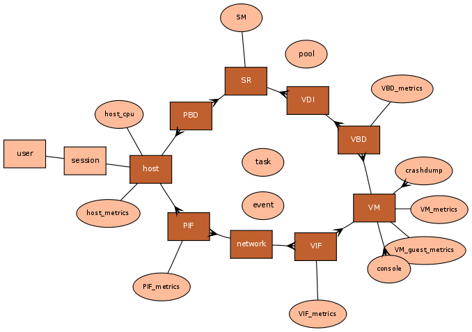

Citrix XenServer Management API
Overview
XenAPI Classes
Click on a class to view the associated fields and messages.

Classes, Fields and Messages
Classes have both fields and messages. Messages are either implicit or explicit where an implicit message is one of:
- a constructor (usually called "create");
- a destructor (usually called "destroy");
- "get_by_name_label";
- "get_by_uuid"
- "get_record"; and
- "get_all".
Explicit messages include all the rest, more class-specific messages (e.g. "VM.start", "VM.clone")
Every field has at least one accessor depending both on its type and whether it is read-only or read-write. Accessors for a field named "X" would be a proper subset of:
- set_X: change the value of field X (only if it is read-write);
- get_X: retrieve the value of field X;
- add_to_X: add a key/value pair (only if field has type set or map); and
- remove_from_X: remove a key (only if a field has type set or map).
Class: auth
Management of remote authentication services
Fields
None.
Messages
Messages
string set get_group_membership (string) This calls queries the external directory service to obtain the transitively-closed set of groups that the the subject_identifier is member of. Parameters: string subject_identifier A string containing the subject_identifier, unique in the external directory service Minimum role: read-only Result: set of subject_identifiers that provides the group membership of subject_identifier passed as argument, it contains, recursively, all groups a subject_identifier is member of. Published in: XenServer 5.5
string get_subject_identifier (string) This call queries the external directory service to obtain the subject_identifier as a string from the human-readable subject_name Parameters: string subject_name The human-readable subject_name, such as a username or a groupname Minimum role: read-only Result: the subject_identifier obtained from the external directory service Published in: XenServer 5.5
(string → string) map get_subject_information_from_identifier (string) This call queries the external directory service to obtain the user information (e.g. username, organization etc) from the specified subject_identifier Parameters: string subject_identifier A string containing the subject_identifier, unique in the external directory service Minimum role: read-only Result: key-value pairs containing at least a key called subject_name Published in: XenServer 5.5
Class: blob
A placeholder for a binary blob
Fields
datetime last_updated [read-only] Time at which the data in the blob was last updated Published in: XenServer 4.0 Time at which the data in the blob was last updated
string mime_type [read-only] The mime type associated with this object. Defaults to 'application/octet-stream' if the empty string is supplied Published in: XenServer 4.0 The mime type associated with this object. Defaults to 'application/octet-stream' if the empty string is supplied
string name_description [read/write] a notes field containing human-readable description Default value: "" Published in: XenServer 4.0 a notes field containing human-readable description
string name_label [read/write] a human-readable name Default value: "" Published in: XenServer 4.0 a human-readable name
bool public [read/write] True if the blob is publicly accessible Default value: false Published in: XenServer 6.1 True if the blob is publicly accessible
int size [read-only] Size of the binary data, in bytes Published in: XenServer 4.0 Size of the binary data, in bytes
string uuid [read-only] Unique identifier/object reference Published in: XenServer 4.0 Unique identifier/object reference
Messages
blob ref create (string, bool) Create a placeholder for a binary blob Parameters: string mime_type The mime-type of the blob. Defaults to 'application/octet-stream' if the empty string is supplied bool public True if the blob should be publicly available Minimum role: pool-operator Result: The reference to the created blob Published in: XenServer 5.0 Create a placeholder for a binary blob
void destroy (blob ref) Parameters: blob ref self The reference of the blob to destroy Minimum role: pool-operator Published in: XenServer 5.0
Class: Bond
Enums
bond_mode Values: balance-slb Source-level balancing active-backup Active/passive bonding: only one NIC is carrying traffic lacp Link aggregation control protocol
Fields
int links_up [read-only] Number of links up in this bond Default value: 0 Published in: XenServer 6.1 Number of links up in this bond PIF ref master [read-only] The bonded interface Default value: Null Published in: XenServer 4.1 The bonded interface
bond_mode mode [read-only] The algorithm used to distribute traffic among the bonded NICs Default value: balance-slb Published in: XenServer 6.0
(string → string) map other_config [read/write]
additional configuration
Default value: {}
Published in: XenServer 4.1 additional configuration
PIF ref primary_slave [read-only]
The PIF of which the IP configuration and MAC were copied to the bond, and which will receive all configuration/VLANs/VIFs on the bond if the bond is destroyed
Default value: OpaqueRef:NULL
Published in: XenServer 6.0
(string → string) map properties [read-only]
Additional configuration properties specific to the bond mode.
Default value: {}
Published in: XenServer 6.1 Additional configuration properties specific to the bond mode.
PIF ref set slaves [read-only]
The interfaces which are part of this bond
Published in: XenServer 4.1 The interfaces which are part of this bond
string uuid [read-only] Unique identifier/object reference Published in: XenServer 4.0 Unique identifier/object reference
Messages
Bond ref create (network ref, PIF ref set, string, bond_mode, (string → string) map) Create an interface bond Parameters: network ref network Network to add the bonded PIF to PIF ref set members PIFs to add to this bond string MAC The MAC address to use on the bond itself. If this parameter is the empty string then the bond will inherit its MAC address from the primary slave. bond_mode mode Bonding mode to use for the new bond (string → string) map properties Additional configuration parameters specific to the bond mode Minimum role: pool-operator Result: The reference of the created Bond object Published in: XenServer 4.1 Create an interface bond
void destroy (Bond ref) Destroy an interface bond Parameters: Bond ref self Bond to destroy Minimum role: pool-operator Published in: XenServer 4.1 Destroy an interface bond void set_mode (Bond ref, bond_mode) Change the bond mode Parameters: Bond ref self The bond bond_mode value The new bond mode Minimum role: pool-operator Published in: XenServer 6.0
void set_property (Bond ref, string, string) Set the value of a property of the bond Parameters: Bond ref self The bond string name The property name string value The property value Minimum role: pool-operator Published in: XenServer 6.1 Set the value of a property of the bond
Class: console
A console
Enums
console_protocol Values: vt100 VT100 terminal rfb Remote FrameBuffer protocol (as used in VNC) rdp Remote Desktop Protocol
Fields
string location [read-only] URI for the console service Published in: XenServer 4.0 URI for the console service
(string → string) map other_config [read/write] additional configuration Published in: XenServer 4.0 additional configuration
console_protocol protocol [read-only] the protocol used by this console Published in: XenServer 4.0 the protocol used by this console
string uuid [read-only] Unique identifier/object reference Published in: XenServer 4.0 Unique identifier/object reference
VM ref VM [read-only] VM to which this console is attached Published in: XenServer 4.0 VM to which this console is attached
Messages
None.
Class: crashdump
A VM crashdump
Fields
(string → string) map other_config [read/write]
additional configuration
Default value: {}
Published in: XenServer 4.1 additional configuration
string uuid [read-only] Unique identifier/object reference Published in: XenServer 4.0 Unique identifier/object reference
VDI ref VDI [read-only] the virtual disk Published in: XenServer 4.0 the virtual disk
VM ref VM [read-only] the virtual machine Published in: XenServer 4.0 the virtual machine
Messages
void destroy (crashdump ref) Destroy the specified crashdump Parameters: crashdump ref self The crashdump to destroy Minimum role: pool-operator Published in: XenServer 4.0 Destroy the specified crashdump
Class: data_source
Data sources for logging in RRDs
Fields
bool enabled [read-only] true if the data source is being logged Published in: XenServer 4.0 true if the data source is being logged
float max [read-only] the maximum value of the data source Published in: XenServer 4.0 the maximum value of the data source
float min [read-only] the minimum value of the data source Published in: XenServer 4.0 the minimum value of the data source
string name_description [read-only] a notes field containing human-readable description Default value: "" Published in: XenServer 4.0 a notes field containing human-readable description
string name_label [read-only] a human-readable name Default value: "" Published in: XenServer 4.0 a human-readable name
bool standard [read-only] true if the data source is enabled by default. Non-default data sources cannot be disabled Published in: XenServer 4.0 true if the data source is enabled by default. Non-default data sources cannot be disabled
string units [read-only] the units of the value Published in: XenServer 4.0 the units of the value
float value [read-only] current value of the data source Published in: XenServer 4.0 current value of the data source
Messages
None.
Class: DR_task
DR task
Fields
SR ref set introduced_SRs [read-only] All SRs introduced by this appliance Published in: XenServer 4.0 All SRs introduced by this appliance
string uuid [read-only] Unique identifier/object reference Published in: XenServer 4.0 Unique identifier/object reference
Messages
DR_task ref create (string, (string → string) map, string set) Create a disaster recovery task which will query the supplied list of devices Parameters: string type The SR driver type of the SRs to introduce (string → string) map device_config The device configuration of the SRs to introduce string set whitelist The devices to use for disaster recovery Minimum role: pool-operator Result: The reference to the created task Published in: XenServer 6.0 Create a disaster recovery task which will query the supplied list of devices
void destroy (DR_task ref) Destroy the disaster recovery task, detaching and forgetting any SRs introduced which are no longer required Parameters: DR_task ref self The disaster recovery task to destroy Minimum role: pool-operator Published in: XenServer 6.0 Destroy the disaster recovery task, detaching and forgetting any SRs introduced which are no longer required
Class: event
Asynchronous event registration and handling
Enums
event_operation Values: add An object has been created del An object has been deleted mod An object has been modified
Fields
string class [read-only]
int id [read-only] An ID, monotonically increasing, and local to the current session Published in: XenServer 4.0 An ID, monotonically increasing, and local to the current session
string obj_uuid [read-only] The uuid of the object that changed Published in: XenServer 4.0 The uuid of the object that changed
event_operation operation [read-only] The operation that was performed Published in: XenServer 4.0 The operation that was performed
string ref [read-only] A reference to the object that changed Published in: XenServer 4.0 A reference to the object that changed
datetime timestamp [read-only] The time at which the event occurred Published in: XenServer 4.0 The time at which the event occurred
Messages
event record set from (string set, string, float) Blocking call which returns a new token and a (possibly empty) batch of events. The returned token can be used in subsequent calls to this function. Parameters: string set classes register for events for the indicated classes string token A token representing the point from which to generate database events. The empty string represents the beginning. float timeout Return after this many seconds if no events match Minimum role: read-only Result: the batch of events Errors: SESSION_NOT_REGISTERED This session is not registered to receive events. You must call event.register before event.next. The session handle you are using is echoed. EVENTS_LOST Some events have been lost from the queue and cannot be retrieved. Published in: XenServer 6.0 Blocking call which returns a new token and a (possibly empty) batch of events. The returned token can be used in subsequent calls to this function.
int get_current_id () Return the ID of the next event to be generated by the system Minimum role: read-only Result: the event ID Published in: XenServer 4.0 Return the ID of the next event to be generated by the system
string inject (string, string) Injects an artificial event on the given object and return the corresponding ID Parameters: string class class of the object string ref A reference to the object that will be changed. Minimum role: read-only Result: the event ID Published in: XenServer 6.1 Injects an artificial event on the given object and return the corresponding ID
event record set next () Blocking call which returns a (possibly empty) batch of events. This method is only recommended for legacy use. New development should use event.from which supercedes this method. Minimum role: read-only Result: the batch of events Errors: SESSION_NOT_REGISTERED This session is not registered to receive events. You must call event.register before event.next. The session handle you are using is echoed. EVENTS_LOST Some events have been lost from the queue and cannot be retrieved. Published in: XenServer 4.0 Blocking call which returns a (possibly empty) batch of events. This method is only recommended for legacy use. New development should use event.from which supercedes this method.
void register (string set) Registers this session with the event system. Specifying * as the desired class will register for all classes. Parameters: string set classes register for events for the indicated classes Minimum role: read-only Published in: XenServer 4.0 Registers this session with the event system. Specifying * as the desired class will register for all classes.
void unregister (string set) Unregisters this session with the event system Parameters: string set classes remove this session's registration for the indicated classes Minimum role: read-only Published in: XenServer 4.0 Unregisters this session with the event system
Class: GPU_group
A group of compatible GPUs across the resource pool
Enums
allocation_algorithm Values: breadth_first vGPUs of a given type are allocated evenly across supporting pGPUs. depth_first vGPUs of a given type are allocated on supporting pGPUs until they are full.
Fields
allocation_algorithm allocation_algorithm [read/write] Current allocation of vGPUs to pGPUs for this group Default value: depth_first Published in: XenServer 6.2 vGPU preview
VGPU_type ref set enabled_VGPU_types [read-only] vGPU types supported on at least one of the pGPUs in this group Published in: XenServer 6.2 SP1
string set GPU_types [read-only]
List of GPU types (vendor+device ID) that can be in this group
Default value: {}
Published in: XenServer 6.0
string name_description [read/write] a notes field containing human-readable description Default value: "" Published in: XenServer 6.0
string name_label [read/write] a human-readable name Default value: "" Published in: XenServer 6.0
(string → string) map other_config [read/write]
Additional configuration
Default value: {}
Published in: XenServer 6.0
PGPU ref set PGPUs [read-only] List of pGPUs in the group Published in: XenServer 6.0
VGPU_type ref set supported_VGPU_types [read-only] vGPU types supported on at least one of the pGPUs in this group Published in: XenServer 6.2 SP1
string uuid [read-only] Unique identifier/object reference Published in: XenServer 6.0
VGPU ref set VGPUs [read-only] List of vGPUs using the group Published in: XenServer 6.0
Messages
GPU_group ref create (string, string, (string → string) map) Parameters: string name_label string name_description (string → string) map other_config Minimum role: pool-operator Result: Published in: XenServer 6.0
void destroy (GPU_group ref) Parameters: GPU_group ref self The vGPU to destroy Minimum role: pool-operator Published in: XenServer 6.0
int get_remaining_capacity (GPU_group ref, VGPU_type ref) Parameters: GPU_group ref self The GPU group to query VGPU_type ref vgpu_type The VGPU_type for which the remaining capacity will be calculated Minimum role: read-only Result: The number of VGPUs of the given type which can still be started on the PGPUs in the group Published in: XenServer 6.2 vGPU preview
Class: host
A physical host
Enums
host_allowed_operations Values: provision Indicates this host is able to provision another VM evacuate Indicates this host is evacuating shutdown Indicates this host is in the process of shutting itself down reboot Indicates this host is in the process of rebooting power_on Indicates this host is in the process of being powered on vm_start This host is starting a VM vm_resume This host is resuming a VM vm_migrate This host is the migration target of a VM
host_display Values: enabled This host is outputting its console to a physical display device disable_on_reboot The host will stop outputting its console to a physical display device on next boot disabled This host is not outputting its console to a physical display device enable_on_reboot The host will start outputting its console to a physical display device on next boot
Fields
string address [read/write] The address by which this host can be contacted from any other host in the pool Published in: XenServer 4.0 The address by which this host can be contacted from any other host in the pool
host_allowed_operations set allowed_operations [read-only]
list of the operations allowed in this state. This list is advisory only and the server state may have changed by the time this field is read by a client.
Default value: {}
Published in: XenServer 4.0 list of the operations allowed in this state. This list is advisory only and the server state may have changed by the time this field is read by a client.
int API_version_major [read-only] major version number Published in: XenServer 4.0 major version number
int API_version_minor [read-only] minor version number Published in: XenServer 4.0 minor version number
string API_version_vendor [read-only] identification of vendor Published in: XenServer 4.0 identification of vendor
(string → string) map API_version_vendor_implementation [read-only] details of vendor implementation Published in: XenServer 4.0 details of vendor implementation
(string → string) map bios_strings [read-only]
BIOS strings
Default value: {}
Published in: XenServer 5.6 BIOS strings
(string → blob ref) map blobs [read-only]
Binary blobs associated with this host
Default value: {}
Published in: XenServer 5.0 Binary blobs associated with this host
string set capabilities [read-only] Xen capabilities Published in: XenServer 4.0 Xen capabilities
(string → string) map chipset_info [read-only]
Information about chipset features
Default value: {}
Published in: XenServer 6.0
(string → string) map cpu_configuration [read-only] The CPU configuration on this host. May contain keys such as "nr_nodes", "sockets_per_node", "cores_per_socket", or "threads_per_core" Published in: XenServer 4.0 The CPU configuration on this host. May contain keys such as "nr_nodes", "sockets_per_node", "cores_per_socket", or "threads_per_core"
(string → string) map cpu_info [read-only]
Details about the physical CPUs on this host
Default value: {}
Published in: XenServer 5.6 Details about the physical CPUs on this host
SR ref crash_dump_sr [read/write] The SR in which VDIs for crash dumps are created Published in: XenServer 4.0 The SR in which VDIs for crash dumps are created
host_crashdump ref set crashdumps [read-only] Set of host crash dumps Published in: XenServer 4.0 Set of host crash dumps
(string → host_allowed_operations) map current_operations [read-only]
links each of the running tasks using this object (by reference) to a current_operation enum which describes the nature of the task.
Default value: {}
Published in: XenServer 4.0 links each of the running tasks using this object (by reference) to a current_operation enum which describes the nature of the task.
host_display display [read/write] indicates whether the host is configured to output its console to a physical display device Default value: enabled Published in: Unreleased indicates whether the host is configured to output its console to a physical display device
string edition [read-only] Product edition Default value: "" Published in: XenServer 5.6 Product edition
bool enabled [read-only] True if the host is currently enabled Published in: XenServer 4.0 True if the host is currently enabled
(string → string) map external_auth_configuration [read-only]
configuration specific to external authentication service
Default value: {}
Published in: XenServer 5.5 configuration specific to external authentication service
string external_auth_service_name [read-only] name of external authentication service configured; empty if none configured. Default value: "" Published in: XenServer 5.5 name of external authentication service configured; empty if none configured.
string external_auth_type [read-only] type of external authentication service configured; empty if none configured. Default value: "" Published in: XenServer 5.5 type of external authentication service configured; empty if none configured.
(string → string) map guest_VCPUs_params [read/write]
VCPUs params to apply to all resident guests
Default value: {}
Published in: XenServer 6.1 VCPUs params to apply to all resident guests
string set ha_network_peers [read-only]
The set of hosts visible via the network from this host
Default value: {}
Published in: XenServer 5.0 The set of hosts visible via the network from this host
string set ha_statefiles [read-only]
The set of statefiles accessible from this host
Default value: {}
Published in: XenServer 5.0 The set of statefiles accessible from this host
host_cpu ref set host_CPUs [read-only] The physical CPUs on this host Published in: XenServer 4.0 The physical CPUs on this host
string hostname [read/write] The hostname of this host Published in: XenServer 4.0 The hostname of this host
(string → string) map license_params [read-only] State of the current license Published in: XenServer 4.0 State of the current license
(string → string) map license_server [read/write]
Contact information of the license server
Default value: {"address" → "localhost","port" → "27000"}
Published in: XenServer 5.6 Contact information of the license server
SR ref local_cache_sr [read-only] The SR that is used as a local cache Default value: OpaqueRef:NULL Published in: XenServer 5.6 FP1 The SR that is used as a local cache
(string → string) map logging [read/write] logging configuration Published in: XenServer 4.0 logging configuration
int memory_overhead [read-only] Virtualization memory overhead (bytes). Default value: 0 Published in: XenServer 4.0 Virtualization memory overhead (bytes).
host_metrics ref metrics [read-only] metrics associated with this host Published in: XenServer 4.0 metrics associated with this host
string name_description [read/write] a notes field containing human-readable description Default value: "" Published in: XenServer 4.0 a notes field containing human-readable description
string name_label [read/write] a human-readable name Default value: "" Published in: XenServer 4.0 a human-readable name
(string → string) map other_config [read/write] additional configuration Published in: XenServer 4.0 additional configuration
host_patch ref set patches [read-only] Set of host patches Published in: XenServer 4.0 Set of host patches
PBD ref set PBDs [read-only] physical blockdevices Published in: XenServer 4.0 physical blockdevices
PCI ref set PCIs [read-only] List of PCI devices in the host Published in: XenServer 6.0
PGPU ref set PGPUs [read-only] List of physical GPUs in the host Published in: XenServer 6.0
PIF ref set PIFs [read-only] physical network interfaces Published in: XenServer 4.0 physical network interfaces
(string → string) map power_on_config [read-only]
The power on config
Default value: {}
Published in: XenServer 5.6 The power on config
string power_on_mode [read-only] The power on mode Default value: "" Published in: XenServer 5.6 The power on mode
VM ref set resident_VMs [read-only] list of VMs currently resident on host Published in: XenServer 4.0 list of VMs currently resident on host
string sched_policy [read-only] Scheduler policy currently in force on this host Published in: XenServer 4.0 Scheduler policy currently in force on this host
(string → string) map software_version [read-only] version strings Published in: XenServer 4.0 version strings
bool ssl_legacy [read-only] Allow SSLv3 protocol and ciphersuites as used by older XenServers. This controls both incoming and outgoing connections. When this is set to a different value, the host immediately restarts its SSL/TLS listening service; typically this takes less than a second but existing connections to it will be broken. XenAPI login sessions will remain valid. Default value: true Published in: Unreleased
string set supported_bootloaders [read-only] a list of the bootloaders installed on the machine Published in: XenServer 4.0 a list of the bootloaders installed on the machine
SR ref suspend_image_sr [read/write] The SR in which VDIs for suspend images are created Published in: XenServer 4.0 The SR in which VDIs for suspend images are created
string set tags [read/write]
user-specified tags for categorization purposes
Default value: {}
Published in: XenServer 5.0 user-specified tags for categorization purposes
string uuid [read-only] Unique identifier/object reference Published in: XenServer 4.0 Unique identifier/object reference
int set virtual_hardware_platform_versions [read-only]
The set of versions of the virtual hardware platform that the host can offer to its guests
Default value: {0}
Published in: Unreleased The set of versions of the virtual hardware platform that the host can offer to its guests
```no-highlight
### Messages
```no-highlight
void apply_edition (host ref, string, bool)
Change to another edition, or reactivate the current edition after a license has expired. This may be subject to the successful checkout of an appropriate license.
Parameters: host ref host The host
string edition The requested edition
bool force Update the license params even if the apply call fails
Minimum role: pool-operator
Published in: XenServer 5.6 Change to another edition, or reactivate the current edition after a license has expired. This may be subject to the successful checkout of an appropriate license.
void assert_can_evacuate (host ref) Check this host can be evacuated. Parameters: host ref host The host to evacuate Minimum role: pool-operator Published in: XenServer 4.1 Check this host can be evacuated.
void backup_rrds (host ref, float) This causes the RRDs to be backed up to the master Parameters: host ref host Schedule a backup of the RRDs of this host float delay Delay in seconds from when the call is received to perform the backup Minimum role: pool-admin Published in: XenServer 5.0 This causes the RRDs to be backed up to the master
void bugreport_upload (host ref, string, (string → string) map) Run xen-bugtool --yestoall and upload the output to support Parameters: host ref host The host on which to run xen-bugtool string url The URL to upload to (string → string) map options Extra configuration operations Minimum role: pool-operator Published in: XenServer 4.0 Run xen-bugtool --yestoall and upload the output to support
string call_plugin (host ref, string, string, (string → string) map) Call a XenAPI plugin on this host Parameters: host ref host The host string plugin The name of the plugin string fn The name of the function within the plugin (string → string) map args Arguments for the function Minimum role: pool-admin Result: Result from the plugin Published in: XenServer 5.0 Call a XenAPI plugin on this host
int compute_free_memory (host ref) Computes the amount of free memory on the host. Parameters: host ref host The host to send the request to Minimum role: read-only Result: the amount of free memory on the host. Published in: XenServer 5.0 Computes the amount of free memory on the host.
int compute_memory_overhead (host ref) Computes the virtualization memory overhead of a host. Parameters: host ref host The host for which to compute the memory overhead Minimum role: read-only Result: the virtualization memory overhead of the host. Published in: XenServer 5.6 Computes the virtualization memory overhead of a host.
blob ref create_new_blob (host ref, string, string, bool) Create a placeholder for a named binary blob of data that is associated with this host Parameters: host ref host The host string name The name associated with the blob string mime_type The mime type for the data. Empty string translates to application/octet-stream bool public True if the blob should be publicly available Minimum role: pool-operator Result: The reference of the blob, needed for populating its data Published in: XenServer 5.0 Create a placeholder for a named binary blob of data that is associated with this host
void declare_dead (host ref) Declare that a host is dead. This is a dangerous operation, and should only be called if the administrator is absolutely sure the host is definitely dead Parameters: host ref host The Host to declare is dead Minimum role: pool-operator Published in: XenServer 6.2 Declare that a host is dead. This is a dangerous operation, and should only be called if the administrator is absolutely sure the host is definitely dead
void destroy (host ref) Destroy specified host record in database Parameters: host ref self The host record to remove Minimum role: pool-operator Published in: XenServer 4.0 Destroy specified host record in database
void disable (host ref) Puts the host into a state in which no new VMs can be started. Currently active VMs on the host continue to execute. Parameters: host ref host The Host to disable Minimum role: pool-operator Published in: XenServer 4.0 Puts the host into a state in which no new VMs can be started. Currently active VMs on the host continue to execute.
host_display disable_display (host ref) Disable console output to the physical display device next time this host boots Parameters: host ref host The host Minimum role: pool-operator Result: This host's physical display usage Published in: Unreleased
void disable_external_auth (host ref, (string → string) map) This call disables external authentication on the local host Parameters: host ref host The host whose external authentication should be disabled (string → string) map config Optional parameters as a list of key-values containing the configuration data Minimum role: pool-admin Published in: XenServer 5.5 This call disables external authentication on the local host
void disable_local_storage_caching (host ref) Disable the use of a local SR for caching purposes Parameters: host ref host The host Minimum role: pool-operator Published in: XenServer 5.6 FP1 Disable the use of a local SR for caching purposes
string dmesg (host ref) Get the host xen dmesg. Parameters: host ref host The Host to query Minimum role: pool-operator Result: dmesg string Published in: XenServer 4.0 Get the host xen dmesg.
string dmesg_clear (host ref) Get the host xen dmesg, and clear the buffer. Parameters: host ref host The Host to query Minimum role: pool-operator Result: dmesg string Published in: XenServer 4.0 Get the host xen dmesg, and clear the buffer.
void emergency_ha_disable () This call disables HA on the local host. This should only be used with extreme care. Minimum role: pool-operator Published in: XenServer 5.0 This call disables HA on the local host. This should only be used with extreme care.
void enable (host ref) Puts the host into a state in which new VMs can be started. Parameters: host ref host The Host to enable Minimum role: pool-operator Published in: XenServer 4.0 Puts the host into a state in which new VMs can be started.
host_display enable_display (host ref) Enable console output to the physical display device next time this host boots Parameters: host ref host The host Minimum role: pool-operator Result: This host's physical display usage Published in: Unreleased
void enable_external_auth (host ref, (string → string) map, string, string) This call enables external authentication on a host Parameters: host ref host The host whose external authentication should be enabled (string → string) map config A list of key-values containing the configuration data string service_name The name of the service string auth_type The type of authentication (e.g. AD for Active Directory) Minimum role: pool-admin Published in: XenServer 5.5 This call enables external authentication on a host
void enable_local_storage_caching (host ref, SR ref) Enable the use of a local SR for caching purposes Parameters: host ref host The host SR ref sr The SR to use as a local cache Minimum role: pool-operator Published in: XenServer 5.6 FP1 Enable the use of a local SR for caching purposes
void evacuate (host ref) Migrate all VMs off of this host, where possible. Parameters: host ref host The host to evacuate Minimum role: pool-operator Published in: XenServer 4.1 Migrate all VMs off of this host, where possible.
void forget_data_source_archives (host ref, string) Forget the recorded statistics related to the specified data source Parameters: host ref host The host string data_source The data source whose archives are to be forgotten Minimum role: pool-operator Published in: XenServer 5.0 Forget the recorded statistics related to the specified data source
data_source record set get_data_sources (host ref) Parameters: host ref host The host to interrogate Minimum role: read-only Result: A set of data sources Published in: XenServer 5.0
string get_log (host ref) Get the host's log file Parameters: host ref host The Host to query Minimum role: read-only Result: The contents of the host's primary log file Published in: XenServer 4.0 Get the host's log file
PIF ref get_management_interface (host ref) Prototype Returns the management interface for the specified host Parameters: host ref host Which host's management interface is required Minimum role: pool-operator Result: The management interface for the host Prototyped in: XenServer 6.1
string get_server_certificate (host ref) Get the installed server SSL certificate. Parameters: host ref host The host Minimum role: pool-operator Result: The installed server SSL certificate, in PEM form. Published in: XenServer 5.5 Get the installed server SSL certificate.
datetime get_server_localtime (host ref) This call queries the host's clock for the current time in the host's local timezone Parameters: host ref host The host whose clock should be queried Minimum role: read-only Result: The current local time Published in: XenServer 5.6 FP1 This call queries the host's clock for the current time in the host's local timezone
datetime get_servertime (host ref) This call queries the host's clock for the current time Parameters: host ref host The host whose clock should be queried Minimum role: read-only Result: The current time Published in: XenServer 5.0 This call queries the host's clock for the current time
string get_system_status_capabilities (host ref) Parameters: host ref host The host to interrogate Minimum role: read-only Result: An XML fragment containing the system status capabilities. Published in: XenServer 4.1
VM ref set get_uncooperative_resident_VMs (host ref) Deprecated Return a set of VMs which are not co-operating with the host's memory control system Parameters: host ref self The host to query Minimum role: read-only Result: VMs which are not co-operating Published in: XenServer 5.6 Return a set of VMs which are not co-operating with the host's memory control system Deprecated in: XenServer 6.1
(VM ref → string set) map get_vms_which_prevent_evacuation (host ref) Return a set of VMs which prevent the host being evacuated, with per-VM error codes Parameters: host ref self The host to query Minimum role: read-only Result: VMs which block evacuation together with reasons Published in: XenServer 5.0 Return a set of VMs which prevent the host being evacuated, with per-VM error codes
void license_add (host ref, string) Apply a new license to a host Parameters: host ref host The host to upload the license to string contents The contents of the license file, base64 encoded Minimum role: pool-operator Errors: LICENSE_PROCESSING_ERROR There was an error processing your license. Please contact your support representative. Published in: Unreleased Functionality for parsing license files re-added
void license_apply (host ref, string) Removed Apply a new license to a host Parameters: host ref host The host to upload the license to string contents The contents of the license file, base64 encoded Minimum role: pool-operator Errors: LICENSE_PROCESSING_ERROR There was an error processing your license. Please contact your support representative. Published in: XenServer 4.0 Apply a new license to a host Removed in: XenServer 6.2 Free licenses no longer handled by xapi
void license_remove (host ref) Remove any license file from the specified host, and switch that host to the unlicensed edition Parameters: host ref host The host from which any license will be removed Minimum role: pool-operator Published in: Unreleased
string set list_methods () List all supported methods Minimum role: read-only Result: The name of every supported method. Published in: XenServer 4.0 List all supported methods
void local_management_reconfigure (string) Reconfigure the management network interface. Should only be used if Host.management_reconfigure is impossible because the network configuration is broken. Parameters: string interface name of the interface to use as a management interface Minimum role: pool-operator Published in: XenServer 4.1 Reconfigure the management network interface. Should only be used if Host.management_reconfigure is impossible because the network configuration is broken.
void management_disable () Disable the management network interface Minimum role: pool-operator Published in: XenServer 4.1 Disable the management network interface
void management_reconfigure (PIF ref) Reconfigure the management network interface Parameters: PIF ref pif reference to a PIF object corresponding to the management interface Minimum role: pool-operator Published in: XenServer 4.1 Reconfigure the management network interface
(string → string) map migrate_receive (host ref, network ref, (string → string) map) Prepare to receive a VM, returning a token which can be passed to VM.migrate. Parameters: host ref host The target host network ref network The network through which migration traffic should be received. (string → string) map options Extra configuration operations Minimum role: vm-power-admin Result: A value which should be passed to VM.migrate Published in: XenServer 6.1 Prepare to receive a VM, returning a token which can be passed to VM.migrate.
void power_on (host ref) Attempt to power-on the host (if the capability exists). Parameters: host ref host The Host to power on Minimum role: pool-operator Published in: XenServer 5.0 Attempt to power-on the host (if the capability exists).
float query_data_source (host ref, string) Query the latest value of the specified data source Parameters: host ref host The host string data_source The data source to query Minimum role: read-only Result: The latest value, averaged over the last 5 seconds Published in: XenServer 5.0 Query the latest value of the specified data source
void reboot (host ref) Reboot the host. (This function can only be called if there are no currently running VMs on the host and it is disabled.) Parameters: host ref host The Host to reboot Minimum role: pool-operator Published in: XenServer 4.0 Reboot the host. (This function can only be called if there are no currently running VMs on the host and it is disabled.)
void record_data_source (host ref, string) Start recording the specified data source Parameters: host ref host The host string data_source The data source to record Minimum role: pool-operator Published in: XenServer 5.0 Start recording the specified data source
void refresh_pack_info (host ref) Refresh the list of installed Supplemental Packs. Parameters: host ref host The Host to modify Minimum role: pool-operator Published in: XenServer 5.6 Refresh the list of installed Supplemental Packs.
void reset_cpu_features (host ref) Removed Remove the feature mask, such that after a reboot all features of the CPU are enabled. Parameters: host ref host The host Minimum role: pool-operator Published in: XenServer 5.6 Removed in: Unreleased Manual CPU feature setting was removed
void restart_agent (host ref) Restarts the agent after a 10 second pause. WARNING: this is a dangerous operation. Any operations in progress will be aborted, and unrecoverable data loss may occur. The caller is responsible for ensuring that there are no operations in progress when this method is called. Parameters: host ref host The Host on which you want to restart the agent Minimum role: pool-operator Published in: XenServer 4.0 Restarts the agent after a 10 second pause. WARNING: this is a dangerous operation. Any operations in progress will be aborted, and unrecoverable data loss may occur. The caller is responsible for ensuring that there are no operations in progress when this method is called.
(VM ref → string set) map retrieve_wlb_evacuate_recommendations (host ref) Retrieves recommended host migrations to perform when evacuating the host from the wlb server. If a VM cannot be migrated from the host the reason is listed instead of a recommendation. Parameters: host ref self The host to query Minimum role: read-only Result: VMs and the reasons why they would block evacuation, or their target host recommended by the wlb server Published in: XenServer 5.5 Retrieves recommended host migrations to perform when evacuating the host from the wlb server. If a VM cannot be migrated from the host the reason is listed instead of a recommendation.
void send_debug_keys (host ref, string) Inject the given string as debugging keys into Xen Parameters: host ref host The host string keys The keys to send Minimum role: pool-admin Published in: XenServer 4.0 Inject the given string as debugging keys into Xen
void set_cpu_features (host ref, string) Removed Set the CPU features to be used after a reboot, if the given features string is valid. Parameters: host ref host The host string features The features string (32 hexadecimal digits) Minimum role: pool-operator Published in: XenServer 5.6 Removed in: Unreleased Manual CPU feature setting was removed
void set_hostname_live (host ref, string) Sets the host name to the specified string. Both the API and lower-level system hostname are changed immediately. Parameters: host ref host The host whose host name to set string hostname The new host name Minimum role: pool-operator Errors: HOST_NAME_INVALID The host name is invalid. Published in: XenServer 4.1 Sets the host name to the specified string. Both the API and lower-level system hostname are changed immediately.
void set_power_on_mode (host ref, string, (string → string) map) Set the power-on-mode, host, user and password Parameters: host ref self The host string power_on_mode power-on-mode can be empty,iLO,wake-on-lan, DRAC or other (string → string) map power_on_config Power on config Minimum role: pool-operator Published in: XenServer 5.6 Set the power-on-mode, host, user and password
void set_ssl_legacy (host ref, bool) Enable/disable SSLv3 for interoperability with older versions of XenServer. When this is set to a different value, the host immediately restarts its SSL/TLS listening service; typically this takes less than a second but existing connections to it will be broken. XenAPI login sessions will remain valid. Parameters: host ref self The host bool value True to allow SSLv3 and ciphersuites as used in old XenServer versions Minimum role: pool-operator Published in: Unreleased
void shutdown (host ref) Shutdown the host. (This function can only be called if there are no currently running VMs on the host and it is disabled.) Parameters: host ref host The Host to shutdown Minimum role: pool-operator Published in: XenServer 4.0 Shutdown the host. (This function can only be called if there are no currently running VMs on the host and it is disabled.)
void shutdown_agent () Shuts the agent down after a 10 second pause. WARNING: this is a dangerous operation. Any operations in progress will be aborted, and unrecoverable data loss may occur. The caller is responsible for ensuring that there are no operations in progress when this method is called. Minimum role: pool-operator Published in: XenServer 5.0 Shuts the agent down after a 10 second pause. WARNING: this is a dangerous operation. Any operations in progress will be aborted, and unrecoverable data loss may occur. The caller is responsible for ensuring that there are no operations in progress when this method is called.
void sync_data (host ref) This causes the synchronisation of the non-database data (messages, RRDs and so on) stored on the master to be synchronised with the host Parameters: host ref host The host to whom the data should be sent Minimum role: pool-admin Published in: XenServer 5.0 This causes the synchronisation of the non-database data (messages, RRDs and so on) stored on the master to be synchronised with the host
void syslog_reconfigure (host ref) Re-configure syslog logging Parameters: host ref host Tell the host to reread its Host.logging parameters and reconfigure itself accordingly Minimum role: pool-operator Published in: XenServer 4.1 Re-configure syslog logging
Class: host_cpu
A physical CPU
Fields
int family [read-only] the family (number) of the physical CPU Published in: XenServer 4.0 the family (number) of the physical CPU
string features [read-only] the physical CPU feature bitmap Published in: XenServer 4.0 the physical CPU feature bitmap
string flags [read-only] the flags of the physical CPU (a decoded version of the features field) Published in: XenServer 4.0 the flags of the physical CPU (a decoded version of the features field)
host ref host [read-only] the host the CPU is in Published in: XenServer 4.0 the host the CPU is in
int model [read-only] the model number of the physical CPU Published in: XenServer 4.0 the model number of the physical CPU
string modelname [read-only] the model name of the physical CPU Published in: XenServer 4.0 the model name of the physical CPU
int number [read-only] the number of the physical CPU within the host Published in: XenServer 4.0 the number of the physical CPU within the host
(string → string) map other_config [read/write]
additional configuration
Default value: {}
Published in: XenServer 5.0 additional configuration
int speed [read-only] the speed of the physical CPU Published in: XenServer 4.0 the speed of the physical CPU
string stepping [read-only] the stepping of the physical CPU Published in: XenServer 4.0 the stepping of the physical CPU
float utilisation [read-only] the current CPU utilisation Published in: XenServer 4.0 the current CPU utilisation
string uuid [read-only] Unique identifier/object reference Published in: XenServer 4.0 Unique identifier/object reference
string vendor [read-only] the vendor of the physical CPU Published in: XenServer 4.0 the vendor of the physical CPU
Messages
None.
Class: host_crashdump
Represents a host crash dump
Fields
host ref host [read-only] Host the crashdump relates to Published in: XenServer 4.0 Host the crashdump relates to
(string → string) map other_config [read/write]
additional configuration
Default value: {}
Published in: XenServer 4.1 additional configuration
int size [read-only] Size of the crashdump Published in: XenServer 4.0 Size of the crashdump
datetime timestamp [read-only] Time the crash happened Published in: XenServer 4.0 Time the crash happened
string uuid [read-only] Unique identifier/object reference Published in: XenServer 4.0 Unique identifier/object reference
Messages
void destroy (host_crashdump ref) Destroy specified host crash dump, removing it from the disk. Parameters: host_crashdump ref self The host crashdump to destroy Minimum role: pool-operator Published in: XenServer 4.0 Destroy specified host crash dump, removing it from the disk.
void upload (host_crashdump ref, string, (string → string) map) Upload the specified host crash dump to a specified URL Parameters: host_crashdump ref self The host crashdump to upload string url The URL to upload to (string → string) map options Extra configuration operations Minimum role: pool-operator Published in: XenServer 4.0 Upload the specified host crash dump to a specified URL
Class: host_metrics
The metrics associated with a host
Fields
datetime last_updated [read-only] Time at which this information was last updated Published in: XenServer 4.0 Time at which this information was last updated
bool live [read-only] Pool master thinks this host is live Published in: XenServer 4.0 Pool master thinks this host is live
int memory_free [read-only] Deprecated Free host memory (bytes) Published in: XenServer 4.0 Free host memory (bytes) Deprecated in: XenServer 5.6
int memory_total [read-only] Total host memory (bytes) Published in: XenServer 4.0 Total host memory (bytes)
(string → string) map other_config [read/write] string uuid [read-only] Unique identifier/object reference Published in: XenServer 4.0 Unique identifier/object reference
Messages
None.
Class: host_patch
Represents a patch stored on a server
Fields
bool applied [read-only] True if the patch has been applied Published in: XenServer 4.0 True if the patch has been applied
host ref host [read-only] Host the patch relates to Published in: XenServer 4.0 Host the patch relates to
string name_description [read-only] a notes field containing human-readable description Default value: "" Published in: XenServer 4.0 a notes field containing human-readable description
string name_label [read-only] a human-readable name Default value: "" Published in: XenServer 4.0 a human-readable name
(string → string) map other_config [read/write]
additional configuration
Default value: {}
Published in: XenServer 4.1 additional configuration
pool_patch ref pool_patch [read-only] The patch applied Default value: Null Published in: XenServer 4.1 The patch applied
int size [read-only] Size of the patch Published in: XenServer 4.0 Size of the patch
datetime timestamp_applied [read-only] Time the patch was applied Published in: XenServer 4.0 Time the patch was applied
string uuid [read-only] Unique identifier/object reference Published in: XenServer 4.0 Unique identifier/object reference
string version [read-only] Patch version number Published in: XenServer 4.0 Patch version number
Messages
string apply (host_patch ref) Deprecated Apply the selected patch and return its output Parameters: host_patch ref self The patch to apply Minimum role: pool-operator Result: the output of the patch application process Published in: XenServer 4.0 Apply the selected patch and return its output Deprecated in: XenServer 4.1
void destroy (host_patch ref) Deprecated Destroy the specified host patch, removing it from the disk. This does NOT reverse the patch Parameters: host_patch ref self The patch to destroy Minimum role: pool-operator Published in: XenServer 4.0 Destroy the specified host patch, removing it from the disk. This does NOT reverse the patch Deprecated in: XenServer 4.1
Class: LVHD
LVHD SR specific operations
Fields
string uuid [read-only] Unique identifier/object reference Published in: XenServer 4.0 Unique identifier/object reference
Messages
void enable_thin_provisioning (SR ref, int, int) Upgrades an LVHD SR to enable thin-provisioning. Future VDIs created in this SR will be thinly-provisioned, although existing VDIs will be left alone. Note that the SR must be attached to the SRmaster for upgrade to work. Parameters: SR ref SR The LVHD SR to upgrade to being thin-provisioned. int initial_allocation The initial amount of space to allocate to a newly-created VDI in bytes int allocation_quantum The amount of space to allocate to a VDI when it needs to be enlarged in bytes Minimum role: pool-admin Published in: Unreleased Upgrades an LVHD SR to enable thin-provisioning. Future VDIs created in this SR will be thinly-provisioned, although existing VDIs will be left alone. Note that the SR must be attached to the SRmaster for upgrade to work.
Class: message
An message for the attention of the administrator
Enums
cls Values: VM VM Host Host SR SR Pool Pool VMPP VMPP
Fields
string body [read-only] The body of the message Published in: XenServer 4.0 The body of the message
cls cls [read-only] The class of the object this message is associated with Published in: XenServer 4.0 The class of the object this message is associated with
string name [read-only] The name of the message Published in: XenServer 4.0 The name of the message
string obj_uuid [read-only] The uuid of the object this message is associated with Published in: XenServer 4.0 The uuid of the object this message is associated with
int priority [read-only] The message priority, 0 being low priority Published in: XenServer 4.0 The message priority, 0 being low priority
datetime timestamp [read-only] The time at which the message was created Published in: XenServer 4.0 The time at which the message was created
string uuid [read-only] Unique identifier/object reference Published in: XenServer 4.0 Unique identifier/object reference
Messages
message ref create (string, int, cls, string, string) Parameters: string name The name of the message int priority The priority of the message cls cls The class of object this message is associated with string obj_uuid The uuid of the object this message is associated with string body The body of the message Minimum role: pool-operator Result: The reference of the created message Published in: XenServer 5.0
void destroy (message ref) Parameters: message ref self The reference of the message to destroy Minimum role: pool-operator Published in: XenServer 5.0
(message ref → message record) map get (cls, string, datetime) Parameters: cls cls The class of object string obj_uuid The uuid of the object datetime since The cutoff time Minimum role: read-only Result: The relevant messages Published in: XenServer 5.0
message ref set get_all () Minimum role: read-only Result: The references to the messages Published in: XenServer 5.0
(message ref → message record) map get_all_records () Minimum role: read-only Result: The messages Published in: XenServer 5.0
(message ref → message record) map get_all_records_where (string) Parameters: string expr The expression to match (not currently used) Minimum role: read-only Result: The messages Published in: XenServer 5.0
message ref get_by_uuid (string) Parameters: string uuid The uuid of the message Minimum role: read-only Result: The message reference Published in: XenServer 5.0
message record get_record (message ref) Parameters: message ref self The reference to the message Minimum role: read-only Result: The message record Published in: XenServer 5.0
(message ref → message record) map get_since (datetime) Parameters: datetime since The cutoff time Minimum role: read-only Result: The relevant messages Published in: XenServer 5.0
Class: network
A virtual network
Enums
network_operations Values: attaching Indicates this network is attaching to a VIF or PIF network_default_locking_mode Values: unlocked Treat all VIFs on this network with locking_mode = 'default' as if they have locking_mode = 'unlocked' disabled Treat all VIFs on this network with locking_mode = 'default' as if they have locking_mode = 'disabled'
Fields
network_operations set allowed_operations [read-only]
list of the operations allowed in this state. This list is advisory only and the server state may have changed by the time this field is read by a client.
Default value: {}
Published in: XenServer 4.0 list of the operations allowed in this state. This list is advisory only and the server state may have changed by the time this field is read by a client.
(VIF ref → string) map assigned_ips [read-only]
The IP addresses assigned to VIFs on networks that have active xapi-managed DHCP
Default value: {}
Published in: XenServer 6.5 The IP addresses assigned to VIFs on networks that have active xapi-managed DHCP
(string → blob ref) map blobs [read-only]
Binary blobs associated with this network
Default value: {}
Published in: XenServer 5.0 Binary blobs associated with this network
string bridge [read-only] name of the bridge corresponding to this network on the local host Published in: XenServer 4.0 name of the bridge corresponding to this network on the local host
(string → network_operations) map current_operations [read-only]
links each of the running tasks using this object (by reference) to a current_operation enum which describes the nature of the task.
Default value: {}
Published in: XenServer 4.0 links each of the running tasks using this object (by reference) to a current_operation enum which describes the nature of the task.
network_default_locking_mode default_locking_mode [read-only] The network will use this value to determine the behaviour of all VIFs where locking_mode = default Default value: unlocked Published in: XenServer 6.1 The network will use this value to determine the behaviour of all VIFs where locking_mode = default
int MTU [read/write] MTU in octets Default value: 1500 Published in: XenServer 5.6 MTU in octets
string name_description [read/write] a notes field containing human-readable description Default value: "" Published in: XenServer 4.0 a notes field containing human-readable description
string name_label [read/write] a human-readable name Default value: "" Published in: XenServer 4.0 a human-readable name
(string → string) map other_config [read/write] additional configuration Published in: XenServer 4.0 additional configuration
PIF ref set PIFs [read-only] list of connected pifs Published in: XenServer 4.0 list of connected pifs
string set tags [read/write]
user-specified tags for categorization purposes
Default value: {}
Published in: XenServer 5.0 user-specified tags for categorization purposes
string uuid [read-only] Unique identifier/object reference Published in: XenServer 4.0 Unique identifier/object reference
VIF ref set VIFs [read-only] list of connected vifs Published in: XenServer 4.0 list of connected vifs
Messages
blob ref create_new_blob (network ref, string, string, bool) Create a placeholder for a named binary blob of data that is associated with this pool Parameters: network ref network The network string name The name associated with the blob string mime_type The mime type for the data. Empty string translates to application/octet-stream bool public True if the blob should be publicly available Minimum role: pool-operator Result: The reference of the blob, needed for populating its data Published in: XenServer 5.0 Create a placeholder for a named binary blob of data that is associated with this pool
void set_default_locking_mode (network ref, network_default_locking_mode) Set the default locking mode for VIFs attached to this network Parameters: network ref network The network network_default_locking_mode value The default locking mode for VIFs attached to this network. Minimum role: pool-operator Published in: XenServer 6.1 Set the default locking mode for VIFs attached to this network
Class: PBD
The physical block devices through which hosts access SRs
Fields
bool currently_attached [read-only] is the SR currently attached on this host? Published in: XenServer 4.0 is the SR currently attached on this host?
(string → string) map device_config [read-only] a config string to string map that is provided to the host's SR-backend-driver Published in: XenServer 4.0 a config string to string map that is provided to the host's SR-backend-driver
host ref host [read-only] physical machine on which the pbd is available Published in: XenServer 4.0 physical machine on which the pbd is available
(string → string) map other_config [read/write]
additional configuration
Default value: {}
Published in: XenServer 4.1 additional configuration
SR ref SR [read-only] the storage repository that the pbd realises Published in: XenServer 4.0 the storage repository that the pbd realises
string uuid [read-only] Unique identifier/object reference Published in: XenServer 4.0 Unique identifier/object reference
Messages
void plug (PBD ref) Activate the specified PBD, causing the referenced SR to be attached and scanned Parameters: PBD ref self The PBD to activate Minimum role: pool-operator Errors: SR_UNKNOWN_DRIVER The SR could not be connected because the driver was not recognised. Published in: XenServer 4.0 Activate the specified PBD, causing the referenced SR to be attached and scanned
void set_device_config (PBD ref, (string → string) map) Sets the PBD's device_config field Parameters: PBD ref self The PBD to modify (string → string) map value The new value of the PBD's device_config Minimum role: pool-operator Published in: XenServer 4.1 Sets the PBD's device_config field
void unplug (PBD ref) Deactivate the specified PBD, causing the referenced SR to be detached and nolonger scanned Parameters: PBD ref self The PBD to deactivate Minimum role: pool-operator Published in: XenServer 4.0 Deactivate the specified PBD, causing the referenced SR to be detached and nolonger scanned
Class: PCI
A PCI device
Fields
string class_name [read-only] PCI class name Default value: "" Published in: XenServer 6.0
PCI ref set dependencies [read-only] List of dependent PCI devices Published in: XenServer 6.0
string device_name [read-only] Device name Default value: "" Published in: XenServer 6.0
host ref host [read-only] Physical machine that owns the PCI device Default value: OpaqueRef:NULL Published in: XenServer 6.0
(string → string) map other_config [read/write]
Additional configuration
Default value: {}
Published in: XenServer 6.0
string pci_id [read-only] PCI ID of the physical device Default value: "" Published in: XenServer 6.0
string subsystem_device_name [read-only] Subsystem device name Default value: "" Published in: XenServer 6.2 SP1 Hotfix 11
string subsystem_vendor_name [read-only] Subsystem vendor name Default value: "" Published in: XenServer 6.2 SP1 Hotfix 11
string uuid [read-only] Unique identifier/object reference Published in: XenServer 6.0
string vendor_name [read-only] Vendor name Default value: "" Published in: XenServer 6.0
Messages
None.
Class: PGPU
A physical GPU (pGPU)
Enums
pgpu_dom0_access Values: enabled dom0 can access this device as normal disable_on_reboot On host reboot dom0 will be blocked from accessing this device disabled dom0 cannot access this device enable_on_reboot On host reboot dom0 will be allowed to access this device
Fields
pgpu_dom0_access dom0_access [read-only] The accessibility of this device from dom0 Default value: enabled Published in: Unreleased
VGPU_type ref set enabled_VGPU_types [read-only] List of VGPU types which have been enabled for this PGPU Published in: XenServer 6.2 vGPU preview
GPU_group ref GPU_group [read-only] GPU group the pGPU is contained in Default value: OpaqueRef:NULL Published in: XenServer 6.0
host ref host [read-only] Host that own the GPU Default value: OpaqueRef:NULL Published in: XenServer 6.0
bool is_system_display_device [read-only] Is this device the system display device Default value: false Published in: Unreleased
(string → string) map other_config [read/write]
Additional configuration
Default value: {}
Published in: XenServer 6.0
PCI ref PCI [read-only] Link to underlying PCI device Default value: OpaqueRef:NULL Published in: XenServer 6.0
VGPU ref set resident_VGPUs [read-only] List of VGPUs running on this PGPU Published in: XenServer 6.2 vGPU preview
(VGPU_type ref → int) map supported_VGPU_max_capacities [read-only]
A map relating each VGPU type supported on this GPU to the maximum number of VGPUs of that type which can run simultaneously on this GPU
Default value: {}
Published in: XenServer 6.2 SP1
VGPU_type ref set supported_VGPU_types [read-only] List of VGPU types supported by the underlying hardware Published in: XenServer 6.2 vGPU preview
string uuid [read-only] Unique identifier/object reference Published in: XenServer 6.0
Messages
void add_enabled_VGPU_types (PGPU ref, VGPU_type ref) Parameters: PGPU ref self The PGPU to which we are adding an enabled VGPU type VGPU_type ref value The VGPU type to enable Minimum role: pool-operator Published in: XenServer 6.2 vGPU preview
pgpu_dom0_access disable_dom0_access (PGPU ref) Parameters: PGPU ref self The PGPU to which dom0 will be denied access Minimum role: pool-operator Result: The accessibility of this PGPU from dom0 Published in: Unreleased
pgpu_dom0_access enable_dom0_access (PGPU ref) Parameters: PGPU ref self The PGPU to which dom0 will be granted access Minimum role: pool-operator Result: The accessibility of this PGPU from dom0 Published in: Unreleased
int get_remaining_capacity (PGPU ref, VGPU_type ref) Parameters: PGPU ref self The PGPU to query VGPU_type ref vgpu_type The VGPU type for which we want to find the number of VGPUs which can still be started on this PGPU Minimum role: read-only Result: The number of VGPUs of the specified type which can still be started on this PGPU Published in: XenServer 6.2 vGPU preview
void remove_enabled_VGPU_types (PGPU ref, VGPU_type ref) Parameters: PGPU ref self The PGPU from which we are removing an enabled VGPU type VGPU_type ref value The VGPU type to disable Minimum role: pool-operator Published in: XenServer 6.2 vGPU preview
void set_enabled_VGPU_types (PGPU ref, VGPU_type ref set) Parameters: PGPU ref self The PGPU on which we are enabling a set of VGPU types VGPU_type ref set value The VGPU types to enable Minimum role: pool-operator Published in: XenServer 6.2 vGPU preview
void set_GPU_group (PGPU ref, GPU_group ref) Parameters: PGPU ref self The PGPU to move to a new group GPU_group ref value The group to which the PGPU will be moved Minimum role: pool-operator Published in: XenServer 6.2 vGPU preview
Class: PIF
A physical network interface (note separate VLANs are represented as several PIFs)
Enums
ip_configuration_mode Values: None Do not acquire an IP address DHCP Acquire an IP address by DHCP Static Static IP address configuration
ipv6_configuration_mode Values: None Do not acquire an IPv6 address DHCP Acquire an IPv6 address by DHCP Static Static IPv6 address configuration Autoconf Router assigned prefix delegation IPv6 allocation
primary_address_type Values: IPv4 Primary address is the IPv4 address IPv6 Primary address is the IPv6 address
Fields
Bond ref set bond_master_of [read-only] Indicates this PIF represents the results of a bond Published in: XenServer 4.1 Indicates this PIF represents the results of a bond
Bond ref bond_slave_of [read-only] Indicates which bond this interface is part of Default value: Null Published in: XenServer 4.1 Indicates which bond this interface is part of
string set capabilities [read-only]
Additional capabilities on the interface.
Default value: {}
Published in: Unreleased
bool currently_attached [read-only] true if this interface is online Default value: true Published in: XenServer 4.1 true if this interface is online
string device [read-only] machine-readable name of the interface (e.g. eth0) Published in: XenServer 4.0 machine-readable name of the interface (e.g. eth0)
bool disallow_unplug [read/write] Prevent this PIF from being unplugged; set this to notify the management tool-stack that the PIF has a special use and should not be unplugged under any circumstances (e.g. because you're running storage traffic over it) Default value: false Published in: XenServer 5.0 Prevent this PIF from being unplugged; set this to notify the management tool-stack that the PIF has a special use and should not be unplugged under any circumstances (e.g. because you're running storage traffic over it)
string DNS [read-only] IP address of DNS servers to use Default value: "" Published in: XenServer 4.1 IP address of DNS servers to use
string gateway [read-only] IP gateway Default value: "" Published in: XenServer 4.1 IP gateway
host ref host [read-only] physical machine to which this pif is connected Published in: XenServer 4.0 physical machine to which this pif is connected
string IP [read-only] IP address Default value: "" Published in: XenServer 4.1 IP address
ip_configuration_mode ip_configuration_mode [read-only] Sets if and how this interface gets an IP address Default value: None Published in: XenServer 4.1 Sets if and how this interface gets an IP address
string set IPv6 [read-only] Prototype
IPv6 address
Default value: {}
Prototyped in: XenServer 6.1
ipv6_configuration_mode ipv6_configuration_mode [read-only] Prototype Sets if and how this interface gets an IPv6 address Default value: None Prototyped in: XenServer 6.1
string ipv6_gateway [read-only] Prototype IPv6 gateway Default value: "" Prototyped in: XenServer 6.1 string MAC [read-only] ethernet MAC address of physical interface Published in: XenServer 4.0 ethernet MAC address of physical interface
bool managed [read-only] Indicates whether the interface is managed by xapi. If it is not, then xapi will not configure the interface, the commands PIF.plug/unplug/reconfigure_ip(v6) can not be used, nor can the interface be bonded or have VLANs based on top through xapi. Default value: true Published in: XenServer 6.2 SP1
bool management [read-only] Indicates whether the control software is listening for connections on this interface Default value: false Published in: XenServer 4.1 Indicates whether the control software is listening for connections on this interface
PIF_metrics ref metrics [read-only] metrics associated with this PIF Published in: XenServer 4.0 metrics associated with this PIF
int MTU [read-only] MTU in octets Published in: XenServer 4.0 MTU in octets
string netmask [read-only] IP netmask Default value: "" Published in: XenServer 4.1 IP netmask
network ref network [read-only] virtual network to which this pif is connected Published in: XenServer 4.0 virtual network to which this pif is connected
(string → string) map other_config [read/write]
Additional configuration
Default value: {}
Published in: XenServer 4.1 Additional configuration
bool physical [read-only] true if this represents a physical network interface Default value: false Published in: XenServer 4.1 true if this represents a physical network interface
primary_address_type primary_address_type [read-only] Prototype
Which protocol should define the primary address of this interface
Default value: IPv4
Prototyped in: XenServer 6.1
(string → string) map properties [read-only]
Additional configuration properties for the interface.
Default value: {}
Published in: XenServer 6.5
tunnel ref set tunnel_access_PIF_of [read-only] Indicates to which tunnel this PIF gives access Published in: XenServer 5.6 FP1 Indicates to which tunnel this PIF gives access
tunnel ref set tunnel_transport_PIF_of [read-only] Indicates to which tunnel this PIF provides transport Published in: XenServer 5.6 FP1 Indicates to which tunnel this PIF provides transport
string uuid [read-only] Unique identifier/object reference Published in: XenServer 4.0 Unique identifier/object reference
int VLAN [read-only] VLAN tag for all traffic passing through this interface Published in: XenServer 4.0 VLAN tag for all traffic passing through this interface
VLAN ref VLAN_master_of [read-only] Indicates wich VLAN this interface receives untagged traffic from Default value: Null Published in: XenServer 4.1 Indicates wich VLAN this interface receives untagged traffic from
VLAN ref set VLAN_slave_of [read-only] Indicates which VLANs this interface transmits tagged traffic to Published in: XenServer 4.1 Indicates which VLANs this interface transmits tagged traffic to
Messages
PIF ref create_VLAN (string, network ref, host ref, int) Deprecated Create a VLAN interface from an existing physical interface. This call is deprecated: use VLAN.create instead Parameters: string device physical interface on which to create the VLAN interface network ref network network to which this interface should be connected host ref host physical machine to which this PIF is connected int VLAN VLAN tag for the new interface Minimum role: pool-operator Result: The reference of the created PIF object Errors: VLAN_TAG_INVALID You tried to create a VLAN, but the tag you gave was invalid -- it must be between 0 and 4094. The parameter echoes the VLAN tag you gave. Published in: XenServer 4.0 Create a VLAN interface from an existing physical interface Deprecated in: XenServer 4.1 Replaced by VLAN.create
void db_forget (PIF ref) Destroy a PIF database record. Parameters: PIF ref self The ref of the PIF whose database record should be destroyed Minimum role: pool-operator Published in: XenServer 5.0 Destroy a PIF database record.
PIF ref db_introduce (string, network ref, host ref, string, int, int, bool, ip_configuration_mode, string, string, string, string, Bond ref, VLAN ref, bool, (string → string) map, bool, ipv6_configuration_mode, string set, string, primary_address_type, bool, (string → string) map) Create a new PIF record in the database only Parameters: string device network ref network host ref host string MAC int MTU int VLAN bool physical ip_configuration_mode ip_configuration_mode string IP string netmask string gateway string DNS Bond ref bond_slave_of VLAN ref VLAN_master_of bool management (string → string) map other_config bool disallow_unplug ipv6_configuration_mode ipv6_configuration_mode string set IPv6 string ipv6_gateway primary_address_type primary_address_type bool managed (string → string) map properties Minimum role: pool-operator Result: The ref of the newly created PIF record. Published in: XenServer 5.0 Create a new PIF record in the database only
void destroy (PIF ref) Deprecated Destroy the PIF object (provided it is a VLAN interface). This call is deprecated: use VLAN.destroy or Bond.destroy instead Parameters: PIF ref self the PIF object to destroy Minimum role: pool-operator Errors: PIF_IS_PHYSICAL You tried to destroy a PIF, but it represents an aspect of the physical host configuration, and so cannot be destroyed. The parameter echoes the PIF handle you gave. Published in: XenServer 4.0 Destroy the PIF object (provided it is a VLAN interface) Deprecated in: XenServer 4.1 Replaced by VLAN.destroy and Bond.destroy
void forget (PIF ref) Destroy the PIF object matching a particular network interface Parameters: PIF ref self The PIF object to destroy Minimum role: pool-operator Errors: PIF_TUNNEL_STILL_EXISTS Operation cannot proceed while a tunnel exists on this interface. Published in: XenServer 4.1 Destroy the PIF object matching a particular network interface
PIF ref introduce (host ref, string, string, bool) Create a PIF object matching a particular network interface Parameters: host ref host The host on which the interface exists string MAC The MAC address of the interface string device The device name to use for the interface bool managed Indicates whether the interface is managed by xapi (defaults to "true") Minimum role: pool-operator Result: The reference of the created PIF object Published in: XenServer 4.1 Create a PIF object matching a particular network interface
void plug (PIF ref) Attempt to bring up a physical interface Parameters: PIF ref self the PIF object to plug Minimum role: pool-operator Errors: TRANSPORT_PIF_NOT_CONFIGURED The tunnel transport PIF has no IP configuration set. Published in: XenServer 4.1 Attempt to bring up a physical interface
void reconfigure_ip (PIF ref, ip_configuration_mode, string, string, string, string) Reconfigure the IP address settings for this interface Parameters: PIF ref self the PIF object to reconfigure ip_configuration_mode mode whether to use dynamic/static/no-assignment string IP the new IP address string netmask the new netmask string gateway the new gateway string DNS the new DNS settings Minimum role: pool-operator Published in: XenServer 4.1 Reconfigure the IP address settings for this interface
void reconfigure_ipv6 (PIF ref, ipv6_configuration_mode, string, string, string) Prototype Reconfigure the IPv6 address settings for this interface Parameters: PIF ref self the PIF object to reconfigure ipv6_configuration_mode mode whether to use dynamic/static/no-assignment string IPv6 the new IPv6 address (in / format) string gateway the new gateway string DNS the new DNS settings Minimum role: pool-operator Prototyped in: XenServer 6.1 void scan (host ref) Scan for physical interfaces on a host and create PIF objects to represent them Parameters: host ref host The host on which to scan Minimum role: pool-operator Published in: XenServer 4.1 Scan for physical interfaces on a host and create PIF objects to represent them
void set_primary_address_type (PIF ref, primary_address_type) Prototype Change the primary address type used by this PIF Parameters: PIF ref self the PIF object to reconfigure primary_address_type primary_address_type Whether to prefer IPv4 or IPv6 connections Minimum role: pool-operator Prototyped in: XenServer 6.1 void set_property (PIF ref, string, string) Set the value of a property of the PIF Parameters: PIF ref self The PIF string name The property name string value The property value Minimum role: pool-operator Published in: XenServer 6.5
void unplug (PIF ref) Attempt to bring down a physical interface Parameters: PIF ref self the PIF object to unplug Minimum role: pool-operator Published in: XenServer 4.1 Attempt to bring down a physical interface
Class: PIF_metrics
The metrics associated with a physical network interface
Fields
bool carrier [read-only] Report if the PIF got a carrier or not Published in: XenServer 4.0 Report if the PIF got a carrier or not
string device_id [read-only] Report device ID Published in: XenServer 4.0 Report device ID
string device_name [read-only] Report device name Published in: XenServer 4.0 Report device name
bool duplex [read-only] Full duplex capability of the link (if available) Published in: XenServer 4.0 Full duplex capability of the link (if available)
float io_read_kbs [read-only] Read bandwidth (KiB/s) Published in: XenServer 4.0 Read bandwidth (KiB/s)
float io_write_kbs [read-only] Write bandwidth (KiB/s) Published in: XenServer 4.0 Write bandwidth (KiB/s)
datetime last_updated [read-only] Time at which this information was last updated Published in: XenServer 4.0 Time at which this information was last updated
(string → string) map other_config [read/write]
additional configuration
Default value: {}
Published in: XenServer 5.0 additional configuration
string pci_bus_path [read-only] PCI bus path of the pif (if available) Published in: XenServer 4.0 PCI bus path of the pif (if available)
int speed [read-only] Speed of the link (if available) Published in: XenServer 4.0 Speed of the link (if available)
string uuid [read-only] Unique identifier/object reference Published in: XenServer 4.0 Unique identifier/object reference
string vendor_id [read-only] Report vendor ID Published in: XenServer 4.0 Report vendor ID
string vendor_name [read-only] Report vendor name Published in: XenServer 4.0 Report vendor name
Messages
None.
Class: pool
Pool-wide information
Enums
pool_allowed_operations Values: ha_enable Indicates this pool is in the process of enabling HA ha_disable Indicates this pool is in the process of disabling HA
Fields
pool_allowed_operations set allowed_operations [read-only]
list of the operations allowed in this state. This list is advisory only and the server state may have changed by the time this field is read by a client.
Default value: {}
Published in: XenServer 4.0 list of the operations allowed in this state. This list is advisory only and the server state may have changed by the time this field is read by a client.
(string → blob ref) map blobs [read-only]
Binary blobs associated with this pool
Default value: {}
Published in: XenServer 5.0 Binary blobs associated with this pool
(string → string) map cpu_info [read-only]
Details about the physical CPUs on the pool
Default value: {}
Published in: Unreleased Details about the physical CPUs on the pool
SR ref crash_dump_SR [read/write] The SR in which VDIs for crash dumps are created Published in: XenServer 4.0 The SR in which VDIs for crash dumps are created
(string → pool_allowed_operations) map current_operations [read-only]
links each of the running tasks using this object (by reference) to a current_operation enum which describes the nature of the task.
Default value: {}
Published in: XenServer 4.0 links each of the running tasks using this object (by reference) to a current_operation enum which describes the nature of the task.
SR ref default_SR [read/write] Default SR for VDIs Published in: XenServer 4.0 Default SR for VDIs
(string → string) map guest_agent_config [read-only]
Pool-wide guest agent configuration information
Default value: {}
Published in: Unreleased Pool-wide guest agent configuration information
(string → string) map gui_config [read/write]
gui-specific configuration for pool
Default value: {}
Published in: XenServer 5.0 gui-specific configuration for pool
bool ha_allow_overcommit [read/write] If set to false then operations which would cause the Pool to become overcommitted will be blocked. Default value: false Published in: XenServer 5.0 If set to false then operations which would cause the Pool to become overcommitted will be blocked.
string ha_cluster_stack [read-only] The HA cluster stack that is currently in use. Only valid when HA is enabled. Default value: "" Published in: Unreleased The HA cluster stack that is currently in use. Only valid when HA is enabled.
(string → string) map ha_configuration [read-only]
The current HA configuration
Default value: {}
Published in: XenServer 5.0 The current HA configuration
bool ha_enabled [read-only] true if HA is enabled on the pool, false otherwise Default value: false Published in: XenServer 5.0 true if HA is enabled on the pool, false otherwise
int ha_host_failures_to_tolerate [read-only] Number of host failures to tolerate before the Pool is declared to be overcommitted Default value: 0 Published in: XenServer 5.0 Number of host failures to tolerate before the Pool is declared to be overcommitted
bool ha_overcommitted [read-only] True if the Pool is considered to be overcommitted i.e. if there exist insufficient physical resources to tolerate the configured number of host failures Default value: false Published in: XenServer 5.0 True if the Pool is considered to be overcommitted i.e. if there exist insufficient physical resources to tolerate the configured number of host failures
int ha_plan_exists_for [read-only] Number of future host failures we have managed to find a plan for. Once this reaches zero any future host failures will cause the failure of protected VMs. Default value: 0 Published in: XenServer 5.0 Number of future host failures we have managed to find a plan for. Once this reaches zero any future host failures will cause the failure of protected VMs.
string set ha_statefiles [read-only]
HA statefile VDIs in use
Default value: {}
Published in: XenServer 5.0 HA statefile VDIs in use
(string → string) map health_check_config [read/write]
Configuration for the automatic health check feature
Default value: {}
Published in: Unreleased Configuration for the automatic health check feature
host ref master [read-only] The host that is pool master Published in: XenServer 4.0 The host that is pool master
VDI ref set metadata_VDIs [read-only] The set of currently known metadata VDIs for this pool Published in: XenServer 6.0 The set of currently known metadata VDIs for this pool
string name_description [read/write] Description Published in: XenServer 4.0 Description
string name_label [read/write] Short name Published in: XenServer 4.0 Short name
(string → string) map other_config [read/write] additional configuration Published in: XenServer 4.0 additional configuration
bool policy_no_vendor_device [read/write] The pool-wide policy for clients on whether to use the vendor device or not on newly created VMs. This field will also be consulted if the 'has_vendor_device' field is not specified in the VM.create call. Default value: false Published in: Unreleased The pool-wide policy for clients on whether to use the vendor device or not on newly created VMs. This field will also be consulted if the 'has_vendor_device' field is not specified in the VM.create call.
bool redo_log_enabled [read-only] true a redo-log is to be used other than when HA is enabled, false otherwise Default value: false Published in: XenServer 5.6 true a redo-log is to be used other than when HA is enabled, false otherwise
VDI ref redo_log_vdi [read-only] indicates the VDI to use for the redo-log other than when HA is enabled Default value: OpaqueRef:NULL Published in: XenServer 5.6 indicates the VDI to use for the redo-log other than when HA is enabled
(string → string) map restrictions [read-only]
Pool-wide restrictions currently in effect
Default value: {}
Published in: XenServer 5.6 Pool-wide restrictions currently in effect
SR ref suspend_image_SR [read/write] The SR in which VDIs for suspend images are created Published in: XenServer 4.0 The SR in which VDIs for suspend images are created
string set tags [read/write]
user-specified tags for categorization purposes
Default value: {}
Published in: XenServer 5.0 user-specified tags for categorization purposes
string uuid [read-only] Unique identifier/object reference Published in: XenServer 4.0 Unique identifier/object reference
string vswitch_controller [read-only] address of the vswitch controller Default value: "" Published in: XenServer 5.6 address of the vswitch controller
bool wlb_enabled [read/write] true if workload balancing is enabled on the pool, false otherwise Default value: false Published in: XenServer 5.5 true if workload balancing is enabled on the pool, false otherwise
string wlb_url [read-only] Url for the configured workload balancing host Default value: "" Published in: XenServer 5.5 Url for the configured workload balancing host
string wlb_username [read-only] Username for accessing the workload balancing host Default value: "" Published in: XenServer 5.5 Username for accessing the workload balancing host
bool wlb_verify_cert [read/write] true if communication with the WLB server should enforce SSL certificate verification. Default value: false Published in: XenServer 5.5 true if communication with the WLB server should enforce SSL certificate verification.
Messages
void add_to_guest_agent_config (pool ref, string, string) Add a key-value pair to the pool-wide guest agent configuration Parameters: pool ref self The pool string key The key to add string value The value to add Minimum role: pool-admin Published in: Unreleased Add a key-value pair to the pool-wide guest agent configuration
void apply_edition (pool ref, string) Apply an edition to all hosts in the pool Parameters: pool ref self Reference to the pool string edition The requested edition Minimum role: pool-operator Published in: XenServer 6.2 Apply an edition to all hosts in the pool
void certificate_install (string, string) Install an SSL certificate pool-wide. Parameters: string name A name to give the certificate string cert The certificate Minimum role: pool-operator Published in: XenServer 5.5 Install an SSL certificate pool-wide.
string set certificate_list () List all installed SSL certificates. Minimum role: pool-operator Result: All installed certificates Published in: XenServer 5.5 List all installed SSL certificates.
void certificate_sync () Sync SSL certificates from master to slaves. Minimum role: pool-operator Published in: XenServer 5.5 Sync SSL certificates from master to slaves.
void certificate_uninstall (string) Remove an SSL certificate. Parameters: string name The certificate name Minimum role: pool-operator Published in: XenServer 5.5 Remove an SSL certificate.
blob ref create_new_blob (pool ref, string, string, bool) Create a placeholder for a named binary blob of data that is associated with this pool Parameters: pool ref pool The pool string name The name associated with the blob string mime_type The mime type for the data. Empty string translates to application/octet-stream bool public True if the blob should be publicly available Minimum role: pool-operator Result: The reference of the blob, needed for populating its data Published in: XenServer 5.0 Create a placeholder for a named binary blob of data that is associated with this pool
PIF ref set create_VLAN (string, network ref, int) Create PIFs, mapping a network to the same physical interface/VLAN on each host. This call is deprecated: use Pool.create_VLAN_from_PIF instead. Parameters: string device physical interface on which to create the VLAN interface network ref network network to which this interface should be connected int VLAN VLAN tag for the new interface Minimum role: pool-operator Result: The references of the created PIF objects Errors: VLAN_TAG_INVALID You tried to create a VLAN, but the tag you gave was invalid -- it must be between 0 and 4094. The parameter echoes the VLAN tag you gave. Published in: XenServer 4.0 Create PIFs, mapping a network to the same physical interface/VLAN on each host. This call is deprecated: use Pool.create_VLAN_from_PIF instead.
PIF ref set create_VLAN_from_PIF (PIF ref, network ref, int) Create a pool-wide VLAN by taking the PIF. Parameters: PIF ref pif physical interface on any particular host, that identifies the PIF on which to create the (pool-wide) VLAN interface network ref network network to which this interface should be connected int VLAN VLAN tag for the new interface Minimum role: pool-operator Result: The references of the created PIF objects Errors: VLAN_TAG_INVALID You tried to create a VLAN, but the tag you gave was invalid -- it must be between 0 and 4094. The parameter echoes the VLAN tag you gave. Published in: XenServer 4.0 Create a pool-wide VLAN by taking the PIF.
void crl_install (string, string) Install an SSL certificate revocation list, pool-wide. Parameters: string name A name to give the CRL string cert The CRL Minimum role: pool-operator Published in: XenServer 5.5 Install an SSL certificate revocation list, pool-wide.
string set crl_list () List all installed SSL certificate revocation lists. Minimum role: pool-operator Result: All installed CRLs Published in: XenServer 5.5 List all installed SSL certificate revocation lists.
void crl_uninstall (string) Remove an SSL certificate revocation list. Parameters: string name The CRL name Minimum role: pool-operator Published in: XenServer 5.5 Remove an SSL certificate revocation list.
void deconfigure_wlb () Permanently deconfigures workload balancing monitoring on this pool Minimum role: pool-operator Published in: XenServer 5.5 Permanently deconfigures workload balancing monitoring on this pool
void designate_new_master (host ref) Perform an orderly handover of the role of master to the referenced host. Parameters: host ref host The host who should become the new master Minimum role: pool-operator Published in: XenServer 4.1 Perform an orderly handover of the role of master to the referenced host.
void detect_nonhomogeneous_external_auth (pool ref) This call asynchronously detects if the external authentication configuration in any slave is different from that in the master and raises appropriate alerts Parameters: pool ref pool The pool where to detect non-homogeneous external authentication configuration Minimum role: pool-operator Published in: XenServer 5.5 This call asynchronously detects if the external authentication configuration in any slave is different from that in the master and raises appropriate alerts
void disable_external_auth (pool ref, (string → string) map) This call disables external authentication on all the hosts of the pool Parameters: pool ref pool The pool whose external authentication should be disabled (string → string) map config Optional parameters as a list of key-values containing the configuration data Minimum role: pool-admin Published in: XenServer 5.5 This call disables external authentication on all the hosts of the pool
void disable_ha () Turn off High Availability mode Minimum role: pool-operator Published in: XenServer 4.1 Turn off High Availability mode
void disable_local_storage_caching (pool ref) This call disables pool-wide local storage caching Parameters: pool ref self Reference to the pool Minimum role: pool-operator Published in: XenServer 5.6 FP1 This call disables pool-wide local storage caching
void disable_redo_log () Disable the redo log if in use, unless HA is enabled. Minimum role: pool-operator Published in: XenServer 5.6 Disable the redo log if in use, unless HA is enabled.
void disable_ssl_legacy (pool ref) Sets ssl_legacy true on each host, pool-master last. See Host.ssl_legacy and Host.set_ssl_legacy. Parameters: pool ref self (ignored) Minimum role: pool-operator Published in: Unreleased
void eject (host ref) Instruct a pool master to eject a host from the pool Parameters: host ref host The host to eject Minimum role: pool-operator Published in: XenServer 4.0 Instruct a pool master to eject a host from the pool
void emergency_reset_master (string) Instruct a slave already in a pool that the master has changed Parameters: string master_address The hostname of the master Minimum role: pool-operator Published in: XenServer 4.0 Instruct a slave already in a pool that the master has changed
void emergency_transition_to_master () Instruct host that's currently a slave to transition to being master Minimum role: pool-operator Published in: XenServer 4.0 Instruct host that's currently a slave to transition to being master
void enable_external_auth (pool ref, (string → string) map, string, string) This call enables external authentication on all the hosts of the pool Parameters: pool ref pool The pool whose external authentication should be enabled (string → string) map config A list of key-values containing the configuration data string service_name The name of the service string auth_type The type of authentication (e.g. AD for Active Directory) Minimum role: pool-admin Published in: XenServer 5.5 This call enables external authentication on all the hosts of the pool
void enable_ha (SR ref set, (string → string) map) Turn on High Availability mode Parameters: SR ref set heartbeat_srs Set of SRs to use for storage heartbeating (string → string) map configuration Detailed HA configuration to apply Minimum role: pool-operator Published in: XenServer 4.1 Turn on High Availability mode
void enable_local_storage_caching (pool ref) This call attempts to enable pool-wide local storage caching Parameters: pool ref self Reference to the pool Minimum role: pool-operator Published in: XenServer 5.6 FP1 This call attempts to enable pool-wide local storage caching
void enable_redo_log (SR ref) Enable the redo log on the given SR and start using it, unless HA is enabled. Parameters: SR ref sr SR to hold the redo log. Minimum role: pool-operator Published in: XenServer 5.6 Enable the redo log on the given SR and start using it, unless HA is enabled.
void enable_ssl_legacy (pool ref) Sets ssl_legacy true on each host, pool-master last. See Host.ssl_legacy and Host.set_ssl_legacy. Parameters: pool ref self (ignored) Minimum role: pool-operator Published in: Unreleased
(string → string) map get_license_state (pool ref) This call returns the license state for the pool Parameters: pool ref self Reference to the pool Minimum role: read-only Result: The pool's license state Published in: XenServer 6.2 This call returns the license state for the pool
int ha_compute_hypothetical_max_host_failures_to_tolerate ((VM ref → string) map) Returns the maximum number of host failures we could tolerate before we would be unable to restart the provided VMs Parameters: (VM ref → string) map configuration Map of protected VM reference to restart priority Minimum role: read-only Result: maximum value for ha_host_failures_to_tolerate given provided configuration Published in: XenServer 5.0 Returns the maximum number of host failures we could tolerate before we would be unable to restart the provided VMs
int ha_compute_max_host_failures_to_tolerate () Returns the maximum number of host failures we could tolerate before we would be unable to restart configured VMs Minimum role: pool-operator Result: maximum value for ha_host_failures_to_tolerate given current configuration Published in: XenServer 5.0 Returns the maximum number of host failures we could tolerate before we would be unable to restart configured VMs
(VM ref → (string → string) map) map ha_compute_vm_failover_plan (host ref set, VM ref set) Return a VM failover plan assuming a given subset of hosts fail Parameters: host ref set failed_hosts The set of hosts to assume have failed VM ref set failed_vms The set of VMs to restart Minimum role: pool-operator Result: VM failover plan: a map of VM to host to restart the host on Published in: XenServer 5.0 Return a VM failover plan assuming a given subset of hosts fail
bool ha_failover_plan_exists (int) Returns true if a VM failover plan exists for up to 'n' host failures Parameters: int n The number of host failures to plan for Minimum role: pool-operator Result: true if a failover plan exists for the supplied number of host failures Published in: XenServer 5.0 Returns true if a VM failover plan exists for up to 'n' host failures
void ha_prevent_restarts_for (int) When this call returns the VM restart logic will not run for the requested number of seconds. If the argument is zero then the restart thread is immediately unblocked Parameters: int seconds The number of seconds to block the restart thread for Minimum role: pool-operator Published in: XenServer 5.0 Update 1 When this call returns the VM restart logic will not run for the requested number of seconds. If the argument is zero then the restart thread is immediately unblocked
bool has_extension (pool ref, string) Return true if the extension is available on the pool Parameters: pool ref self The pool string name The name of the API call Minimum role: pool-admin Result: True if the extension exists, false otherwise Published in: Unreleased Return true if the extension is available on the pool
void initialize_wlb (string, string, string, string, string) Initializes workload balancing monitoring on this pool with the specified wlb server Parameters: string wlb_url The ip address and port to use when accessing the wlb server string wlb_username The username used to authenticate with the wlb server string wlb_password The password used to authenticate with the wlb server string xenserver_username The username used by the wlb server to authenticate with the xenserver string xenserver_password The password used by the wlb server to authenticate with the xenserver Minimum role: pool-operator Published in: XenServer 5.5 Initializes workload balancing monitoring on this pool with the specified wlb server
void join (string, string, string) Instruct host to join a new pool Parameters: string master_address The hostname of the master of the pool to join string master_username The username of the master (for initial authentication) string master_password The password for the master (for initial authentication) Minimum role: pool-operator Errors: JOINING_HOST_CANNOT_CONTAIN_SHARED_SRS The host joining the pool cannot contain any shared storage. Published in: XenServer 4.0 Instruct host to join a new pool
void join_force (string, string, string) Instruct host to join a new pool Parameters: string master_address The hostname of the master of the pool to join string master_username The username of the master (for initial authentication) string master_password The password for the master (for initial authentication) Minimum role: pool-operator Published in: XenServer 4.0 Instruct host to join a new pool
host ref set recover_slaves () Instruct a pool master, M, to try and contact its slaves and, if slaves are in emergency mode, reset their master address to M. Minimum role: pool-operator Result: list of hosts whose master address were successfully reset Published in: XenServer 4.0 Instruct a pool master, M, to try and contact its slaves and, if slaves are in emergency mode, reset their master address to M.
void remove_from_guest_agent_config (pool ref, string) Remove a key-value pair from the pool-wide guest agent configuration Parameters: pool ref self The pool string key The key to remove Minimum role: pool-admin Published in: Unreleased Remove a key-value pair from the pool-wide guest agent configuration
(string → string) map retrieve_wlb_configuration () Retrieves the pool optimization criteria from the workload balancing server Minimum role: read-only Result: The configuration used in optimizing this pool Published in: XenServer 5.5 Retrieves the pool optimization criteria from the workload balancing server
(VM ref → string set) map retrieve_wlb_recommendations () Retrieves vm migrate recommendations for the pool from the workload balancing server Minimum role: read-only Result: The list of vm migration recommendations Published in: XenServer 5.5 Retrieves vm migrate recommendations for the pool from the workload balancing server
string send_test_post (string, int, string) Send the given body to the given host and port, using HTTPS, and print the response. This is used for debugging the SSL layer. Parameters: string host int port string body Minimum role: pool-admin Result: The response Published in: XenServer 5.5 Send the given body to the given host and port, using HTTPS, and print the response. This is used for debugging the SSL layer.
void send_wlb_configuration ((string → string) map) Sets the pool optimization criteria for the workload balancing server Parameters: (string → string) map config The configuration to use in optimizing this pool Minimum role: pool-operator Published in: XenServer 5.5 Sets the pool optimization criteria for the workload balancing server
void set_ha_host_failures_to_tolerate (pool ref, int) Set the maximum number of host failures to consider in the HA VM restart planner Parameters: pool ref self The pool int value New number of host failures to consider Minimum role: pool-operator Published in: XenServer 5.0 Set the maximum number of host failures to consider in the HA VM restart planner
void set_vswitch_controller (string) Set the IP address of the vswitch controller. Parameters: string address IP address of the vswitch controller. Minimum role: pool-operator Published in: XenServer 5.6 Set the IP address of the vswitch controller.
Extended in: XenServer 5.6 FP1 Allow to be set to the empty string (no controller is used). void sync_database () Forcibly synchronise the database now Minimum role: pool-operator Published in: XenServer 4.0 Forcibly synchronise the database now
string test_archive_target (pool ref, (string → string) map) This call tests if a location is valid Parameters: pool ref self Reference to the pool (string → string) map config Location config settings to test Minimum role: pool-operator Result: An XMLRPC result Published in: XenServer 5.6 FP1 This call tests if a location is valid
Class: pool_patch
Pool-wide patches
Enums
after_apply_guidance Values: restartHVM This patch requires HVM guests to be restarted once applied. restartPV This patch requires PV guests to be restarted once applied. restartHost This patch requires the host to be restarted once applied. restartXAPI This patch requires XAPI to be restarted once applied.
Fields
after_apply_guidance set after_apply_guidance [read-only]
What the client should do after this patch has been applied.
Default value: {}
Published in: XenServer 4.1 What the client should do after this patch has been applied.
host_patch ref set host_patches [read-only] This hosts this patch is applied to. Published in: XenServer 4.1 This hosts this patch is applied to.
string name_description [read-only] a notes field containing human-readable description Default value: "" Published in: XenServer 4.0 a notes field containing human-readable description
string name_label [read-only] a human-readable name Default value: "" Published in: XenServer 4.0 a human-readable name
(string → string) map other_config [read/write]
additional configuration
Default value: {}
Published in: XenServer 4.1 additional configuration
bool pool_applied [read-only] This patch should be applied across the entire pool Default value: false Published in: XenServer 4.1 This patch should be applied across the entire pool
int size [read-only] Size of the patch Default value: 0 Published in: XenServer 4.1 Size of the patch
string uuid [read-only] Unique identifier/object reference Published in: XenServer 4.0 Unique identifier/object reference
string version [read-only] Patch version number Default value: "" Published in: XenServer 4.1 Patch version number
Messages
string apply (pool_patch ref, host ref) Apply the selected patch to a host and return its output Parameters: pool_patch ref self The patch to apply host ref host The host to apply the patch too Minimum role: pool-operator Result: the output of the patch application process Published in: XenServer 4.1 Apply the selected patch to a host and return its output
void clean (pool_patch ref) Removes the patch's files from the server Parameters: pool_patch ref self The patch to clean up Minimum role: pool-operator Published in: XenServer 4.1 Removes the patch's files from the server
void clean_on_host (pool_patch ref, host ref) Removes the patch's files from the specified host Parameters: pool_patch ref self The patch to clean up host ref host The host on which to clean the patch Minimum role: pool-operator Published in: XenServer 6.1 Removes the patch's files from the specified host
void destroy (pool_patch ref) Removes the patch's files from all hosts in the pool, and removes the database entries. Only works on unapplied patches. Parameters: pool_patch ref self The patch to destroy Minimum role: pool-operator Published in: XenServer 4.1 Removes the patch's files from all hosts in the pool, and removes the database entries. Only works on unapplied patches.
void pool_apply (pool_patch ref) Apply the selected patch to all hosts in the pool and return a map of host_ref -> patch output Parameters: pool_patch ref self The patch to apply Minimum role: pool-operator Published in: XenServer 4.1 Apply the selected patch to all hosts in the pool and return a map of host_ref -> patch output
void pool_clean (pool_patch ref) Removes the patch's files from all hosts in the pool, but does not remove the database entries Parameters: pool_patch ref self The patch to clean up Minimum role: pool-operator Published in: XenServer 6.1 Removes the patch's files from all hosts in the pool, but does not remove the database entries
string precheck (pool_patch ref, host ref) Execute the precheck stage of the selected patch on a host and return its output Parameters: pool_patch ref self The patch whose prechecks will be run host ref host The host to run the prechecks on Minimum role: pool-operator Result: the output of the patch prechecks Published in: XenServer 4.1 Execute the precheck stage of the selected patch on a host and return its output
Class: role
A set of permissions associated with a subject
Fields
string name_description [read-only] what this role is for Default value: "" Published in: XenServer 5.6 what this role is for
string name_label [read-only] a short user-friendly name for the role Default value: "" Published in: XenServer 5.6 a short user-friendly name for the role
role ref set subroles [read-only] a list of pointers to other roles or permissions Default value: {} Published in: XenServer 5.6 a list of pointers to other roles or permissions
string uuid [read-only] Unique identifier/object reference Published in: XenServer 4.0 Unique identifier/object reference
Messages
role ref set get_by_permission (role ref) This call returns a list of roles given a permission Parameters: role ref permission a reference to a permission Minimum role: read-only Result: a list of references to roles Published in: XenServer 5.6 This call returns a list of roles given a permission
role ref set get_by_permission_name_label (string) This call returns a list of roles given a permission name Parameters: string label The short friendly name of the role Minimum role: read-only Result: a list of references to roles Published in: XenServer 5.6 This call returns a list of roles given a permission name
role ref set get_permissions (role ref) This call returns a list of permissions given a role Parameters: role ref self a reference to a role Minimum role: read-only Result: a list of permissions Published in: XenServer 5.6 This call returns a list of permissions given a role
string set get_permissions_name_label (role ref) This call returns a list of permission names given a role Parameters: role ref self a reference to a role Minimum role: read-only Result: a list of permission names Published in: XenServer 5.6 This call returns a list of permission names given a role
Class: secret
A secret
Fields
(string → string) map other_config [read/write]
other_config
Default value: {}
Published in: XenServer 4.0 other_config
string uuid [read-only] Unique identifier/object reference Published in: XenServer 4.0 Unique identifier/object reference
string value [read/write] the secret Published in: XenServer 4.0 the secret
Messages
None.
Class: session
A session
Fields
string auth_user_name [read-only] the subject name of the user that was externally authenticated. If a session instance has is_local_superuser set, then the value of this field is undefined. Default value: "" Published in: XenServer 5.6 the subject name of the user that was externally authenticated. If a session instance has is_local_superuser set, then the value of this field is undefined.
string auth_user_sid [read-only] the subject identifier of the user that was externally authenticated. If a session instance has is_local_superuser set, then the value of this field is undefined. Default value: "" Published in: XenServer 5.5 the subject identifier of the user that was externally authenticated. If a session instance has is_local_superuser set, then the value of this field is undefined.
bool is_local_superuser [read-only] true iff this session was created using local superuser credentials Default value: false Published in: XenServer 5.5 true iff this session was created using local superuser credentials
datetime last_active [read-only] Timestamp for last time session was active Published in: XenServer 4.0 Timestamp for last time session was active
string originator [read-only] a key string provided by a API user to distinguish itself from other users sharing the same login name Default value: "" Published in: XenServer 6.2 a key string provided by a API user to distinguish itself from other users sharing the same login name
(string → string) map other_config [read/write]
additional configuration
Default value: {}
Published in: XenServer 4.1 additional configuration
session ref parent [read-only] references the parent session that created this session Default value: OpaqueRef:NULL Published in: XenServer 5.6 references the parent session that created this session
bool pool [read-only] True if this session relates to a intra-pool login, false otherwise Published in: XenServer 4.0 True if this session relates to a intra-pool login, false otherwise
string set rbac_permissions [read-only]
list with all RBAC permissions for this session
Default value: {}
Published in: XenServer 5.6 list with all RBAC permissions for this session
subject ref subject [read-only] references the subject instance that created the session. If a session instance has is_local_superuser set, then the value of this field is undefined. Default value: OpaqueRef:NULL Published in: XenServer 5.5 references the subject instance that created the session. If a session instance has is_local_superuser set, then the value of this field is undefined.
task ref set tasks [read-only] list of tasks created using the current session Published in: XenServer 5.6 list of tasks created using the current session
host ref this_host [read-only] Currently connected host Published in: XenServer 4.0 Currently connected host
user ref this_user [read-only] Currently connected user Published in: XenServer 4.0 Currently connected user
string uuid [read-only] Unique identifier/object reference Published in: XenServer 4.0 Unique identifier/object reference
datetime validation_time [read-only] time when session was last validated Default value: 19700101T00:00:00Z Published in: XenServer 5.5 time when session was last validated
Messages
void change_password (string, string) Change the account password; if your session is authenticated with root priviledges then the old_pwd is validated and the new_pwd is set regardless Parameters: string old_pwd Old password for account string new_pwd New password for account Minimum role: undefined Published in: XenServer 4.0 Change the account password; if your session is authenticated with root priviledges then the old_pwd is validated and the new_pwd is set regardless
session ref create_from_db_file (string) Parameters: string filename Database dump filename. Minimum role: undefined Result: ID of newly created session Published in: Unreleased
string set get_all_subject_identifiers () Return a list of all the user subject-identifiers of all existing sessions Minimum role: read-only Result: The list of user subject-identifiers of all existing sessions Published in: XenServer 5.5 Return a list of all the user subject-identifiers of all existing sessions
void local_logout () Log out of local session. Minimum role: pool-admin Published in: XenServer 4.1 Log out of local session.
session ref login_with_password (string, string, string, string) Attempt to authenticate the user, returning a session reference if successful Parameters: string uname Username for login. string pwd Password for login. string version Client API version. string originator Key string for distinguishing different API users sharing the same login name. Minimum role: read-only Result: reference of newly created session Errors: SESSION_AUTHENTICATION_FAILED The credentials given by the user are incorrect, so access has been denied, and you have not been issued a session handle. HOST_IS_SLAVE You cannot make regular API calls directly on a slave. Please pass API calls via the master host. Published in: XenServer 4.0 Attempt to authenticate the user, returning a session reference if successful
void logout () Log out of a session Minimum role: read-only Published in: XenServer 4.0 Log out of a session
void logout_subject_identifier (string) Log out all sessions associated to a user subject-identifier, except the session associated with the context calling this function Parameters: string subject_identifier User subject-identifier of the sessions to be destroyed Minimum role: pool-operator Published in: XenServer 5.5 Log out all sessions associated to a user subject-identifier, except the session associated with the context calling this function
session ref slave_local_login_with_password (string, string) Authenticate locally against a slave in emergency mode. Note the resulting sessions are only good for use on this host. Parameters: string uname Username for login. string pwd Password for login. Minimum role: pool-admin Result: ID of newly created session Published in: XenServer 4.1 Authenticate locally against a slave in emergency mode. Note the resulting sessions are only good for use on this host.
Class: SM
A storage manager plugin
Fields
string set capabilities [read-only] Deprecated
capabilities of the SM plugin
Default value: {}
Deprecated in: XenServer 6.2 Use SM.features instead
(string → string) map configuration [read-only] names and descriptions of device config keys Published in: XenServer 4.0 names and descriptions of device config keys
string copyright [read-only] Entity which owns the copyright of this plugin Published in: XenServer 4.0 Entity which owns the copyright of this plugin
string driver_filename [read-only] filename of the storage driver Default value: "" Published in: XenServer 5.0 filename of the storage driver
(string → int) map features [read-only]
capabilities of the SM plugin, with capability version numbers
Default value: {}
Published in: XenServer 6.2 capabilities of the SM plugin, with capability version numbers
string name_description [read-only] a notes field containing human-readable description Default value: "" Published in: XenServer 4.0 a notes field containing human-readable description
string name_label [read-only] a human-readable name Default value: "" Published in: XenServer 4.0 a human-readable name
(string → string) map other_config [read/write]
additional configuration
Default value: {}
Published in: XenServer 4.1 additional configuration
string required_api_version [read-only] Minimum SM API version required on the server Published in: XenServer 4.0 Minimum SM API version required on the server
string set required_cluster_stack [read-only]
The storage plugin requires that one of these cluster stacks is configured and running.
Default value: {}
Published in: Unreleased The storage plugin requires that one of these cluster stacks is configured and running.
string type [read-only] SR.type Published in: XenServer 4.0 SR.type
string uuid [read-only] Unique identifier/object reference Published in: XenServer 4.0 Unique identifier/object reference
string vendor [read-only] Vendor who created this plugin Published in: XenServer 4.0 Vendor who created this plugin
string version [read-only] Version of the plugin Published in: XenServer 4.0 Version of the plugin
Messages
None.
Class: SR
A storage repository
Enums
storage_operations Values: scan Scanning backends for new or deleted VDIs destroy Destroying the SR forget Forgetting about SR plug Plugging a PBD into this SR unplug Unplugging a PBD from this SR update Refresh the fields on the SR vdi_create Creating a new VDI vdi_introduce Introducing a new VDI vdi_destroy Destroying a VDI vdi_resize Resizing a VDI vdi_clone Cloneing a VDI vdi_snapshot Snapshotting a VDI pbd_create Creating a PBD for this SR pbd_destroy Destroying one of this SR's PBDs
Fields
storage_operations set allowed_operations [read-only]
list of the operations allowed in this state. This list is advisory only and the server state may have changed by the time this field is read by a client.
Default value: {}
Published in: XenServer 4.0 list of the operations allowed in this state. This list is advisory only and the server state may have changed by the time this field is read by a client.
(string → blob ref) map blobs [read-only]
Binary blobs associated with this SR
Default value: {}
Published in: XenServer 5.0 Binary blobs associated with this SR
bool clustered [read-only] True if the SR is using aggregated local storage Default value: false Published in: Unreleased
string content_type [read-only] the type of the SR's content, if required (e.g. ISOs) Published in: XenServer 4.0 the type of the SR's content, if required (e.g. ISOs)
(string → storage_operations) map current_operations [read-only]
links each of the running tasks using this object (by reference) to a current_operation enum which describes the nature of the task.
Default value: {}
Published in: XenServer 4.0 links each of the running tasks using this object (by reference) to a current_operation enum which describes the nature of the task.
DR_task ref introduced_by [read-only] The disaster recovery task which introduced this SR Default value: OpaqueRef:NULL Published in: XenServer 6.0 The disaster recovery task which introduced this SR
bool is_tools_sr [read-only] True if this is the SR that contains the Tools ISO VDIs Default value: false Published in: Unreleased
bool local_cache_enabled [read-only] True if this SR is assigned to be the local cache for its host Default value: false Published in: XenServer 5.6 FP1 True if this SR is assigned to be the local cache for its host
string name_description [read-only] a notes field containing human-readable description Default value: "" Published in: XenServer 4.0 a notes field containing human-readable description
string name_label [read-only] a human-readable name Default value: "" Published in: XenServer 4.0 a human-readable name
(string → string) map other_config [read/write] additional configuration Published in: XenServer 4.0 additional configuration
PBD ref set PBDs [read-only] describes how particular hosts can see this storage repository Published in: XenServer 4.0 describes how particular hosts can see this storage repository
int physical_size [read-only] total physical size of the repository (in bytes) Published in: XenServer 4.0 total physical size of the repository (in bytes)
int physical_utilisation [read-only] physical space currently utilised on this storage repository (in bytes). Note that for sparse disk formats, physical_utilisation may be less than virtual_allocation Published in: XenServer 4.0 physical space currently utilised on this storage repository (in bytes). Note that for sparse disk formats, physical_utilisation may be less than virtual_allocation
bool shared [read-only] true if this SR is (capable of being) shared between multiple hosts Published in: XenServer 4.0 true if this SR is (capable of being) shared between multiple hosts
(string → string) map sm_config [read/write]
SM dependent data
Default value: {}
Published in: XenServer 4.1 SM dependent data
string set tags [read/write]
user-specified tags for categorization purposes
Default value: {}
Published in: XenServer 5.0 user-specified tags for categorization purposes
string type [read-only] type of the storage repository Published in: XenServer 4.0 type of the storage repository
string uuid [read-only] Unique identifier/object reference Published in: XenServer 4.0 Unique identifier/object reference
VDI ref set VDIs [read-only] all virtual disks known to this storage repository Published in: XenServer 4.0 all virtual disks known to this storage repository
int virtual_allocation [read-only] sum of virtual_sizes of all VDIs in this storage repository (in bytes) Published in: XenServer 4.0 sum of virtual_sizes of all VDIs in this storage repository (in bytes)
Messages
void assert_can_host_ha_statefile (SR ref) Returns successfully if the given SR can host an HA statefile. Otherwise returns an error to explain why not Parameters: SR ref sr The SR to query Minimum role: pool-operator Published in: XenServer 5.0 Returns successfully if the given SR can host an HA statefile. Otherwise returns an error to explain why not
void assert_supports_database_replication (SR ref) Returns successfully if the given SR supports database replication. Otherwise returns an error to explain why not. Parameters: SR ref sr The SR to query Minimum role: pool-operator Published in: XenServer 6.0 Returns successfully if the given SR supports database replication. Otherwise returns an error to explain why not.
SR ref create (host ref, (string → string) map, int, string, string, string, string, bool, (string → string) map) Create a new Storage Repository and introduce it into the managed system, creating both SR record and PBD record to attach it to current host (with specified device_config parameters) Parameters: host ref host The host to create/make the SR on (string → string) map device_config The device config string that will be passed to backend SR driver int physical_size The physical size of the new storage repository string name_label The name of the new storage repository string name_description The description of the new storage repository string type The type of the SR; used to specify the SR backend driver to use string content_type The type of the new SRs content, if required (e.g. ISOs) bool shared True if the SR (is capable of) being shared by multiple hosts (string → string) map sm_config Storage backend specific configuration options Minimum role: pool-operator Result: The reference of the newly created Storage Repository. Errors: SR_UNKNOWN_DRIVER The SR could not be connected because the driver was not recognised. Published in: XenServer 4.0 Create a new Storage Repository and introduce it into the managed system, creating both SR record and PBD record to attach it to current host (with specified device_config parameters)
blob ref create_new_blob (SR ref, string, string, bool) Create a placeholder for a named binary blob of data that is associated with this SR Parameters: SR ref sr The SR string name The name associated with the blob string mime_type The mime type for the data. Empty string translates to application/octet-stream bool public True if the blob should be publicly available Minimum role: pool-operator Result: The reference of the blob, needed for populating its data Published in: XenServer 5.0 Create a placeholder for a named binary blob of data that is associated with this SR
void destroy (SR ref) Destroy specified SR, removing SR-record from database and remove SR from disk. (In order to affect this operation the appropriate device_config is read from the specified SR's PBD on current host) Parameters: SR ref sr The SR to destroy Minimum role: pool-operator Errors: SR_HAS_PBD The SR is still connected to a host via a PBD. It cannot be destroyed or forgotten. Published in: XenServer 4.0 Destroy specified SR, removing SR-record from database and remove SR from disk. (In order to affect this operation the appropriate device_config is read from the specified SR's PBD on current host)
void disable_database_replication (SR ref) Parameters: SR ref sr The SR to which metadata should be no longer replicated Minimum role: pool-operator Published in: XenServer 6.0
void enable_database_replication (SR ref) Parameters: SR ref sr The SR to which metadata should be replicated Minimum role: pool-operator Published in: XenServer 6.0
void forget (SR ref) Removing specified SR-record from database, without attempting to remove SR from disk Parameters: SR ref sr The SR to destroy Minimum role: pool-operator Errors: SR_HAS_PBD The SR is still connected to a host via a PBD. It cannot be destroyed or forgotten. Published in: XenServer 4.0 Removing specified SR-record from database, without attempting to remove SR from disk
void forget_data_source_archives (SR ref, string) Forget the recorded statistics related to the specified data source Parameters: SR ref sr The SR string data_source The data source whose archives are to be forgotten Minimum role: pool-operator Published in: Unreleased Forget the recorded statistics related to the specified data source
data_source record set get_data_sources (SR ref) Parameters: SR ref sr The SR to interrogate Minimum role: read-only Result: A set of data sources Published in: Unreleased
string set get_supported_types () Return a set of all the SR types supported by the system Minimum role: read-only Result: the supported SR types Published in: XenServer 4.0 Return a set of all the SR types supported by the system
SR ref introduce (string, string, string, string, string, bool, (string → string) map) Introduce a new Storage Repository into the managed system Parameters: string uuid The uuid assigned to the introduced SR string name_label The name of the new storage repository string name_description The description of the new storage repository string type The type of the SR; used to specify the SR backend driver to use string content_type The type of the new SRs content, if required (e.g. ISOs) bool shared True if the SR (is capable of) being shared by multiple hosts (string → string) map sm_config Storage backend specific configuration options Minimum role: pool-operator Result: The reference of the newly introduced Storage Repository. Published in: XenServer 4.0 Introduce a new Storage Repository into the managed system
string make (host ref, (string → string) map, int, string, string, string, string, (string → string) map) Deprecated Create a new Storage Repository on disk. This call is deprecated: use SR.create instead. Parameters: host ref host The host to create/make the SR on (string → string) map device_config The device config string that will be passed to backend SR driver int physical_size The physical size of the new storage repository string name_label The name of the new storage repository string name_description The description of the new storage repository string type The type of the SR; used to specify the SR backend driver to use string content_type The type of the new SRs content, if required (e.g. ISOs) (string → string) map sm_config Storage backend specific configuration options Minimum role: pool-operator Result: The uuid of the newly created Storage Repository. Published in: XenServer 4.0 Create a new Storage Repository on disk Deprecated in: XenServer 4.1 Use SR.create instead
string probe (host ref, (string → string) map, string, (string → string) map) Perform a backend-specific scan, using the given device_config. If the device_config is complete, then this will return a list of the SRs present of this type on the device, if any. If the device_config is partial, then a backend-specific scan will be performed, returning results that will guide the user in improving the device_config. Parameters: host ref host The host to create/make the SR on (string → string) map device_config The device config string that will be passed to backend SR driver string type The type of the SR; used to specify the SR backend driver to use (string → string) map sm_config Storage backend specific configuration options Minimum role: pool-operator Result: An XML fragment containing the scan results. These are specific to the scan being performed, and the backend. Published in: XenServer 4.1 Perform a backend-specific scan, using the given device_config. If the device_config is complete, then this will return a list of the SRs present of this type on the device, if any. If the device_config is partial, then a backend-specific scan will be performed, returning results that will guide the user in improving the device_config.
float query_data_source (SR ref, string) Query the latest value of the specified data source Parameters: SR ref sr The SR string data_source The data source to query Minimum role: read-only Result: The latest value, averaged over the last 5 seconds Published in: Unreleased Query the latest value of the specified data source
void record_data_source (SR ref, string) Start recording the specified data source Parameters: SR ref sr The SR string data_source The data source to record Minimum role: pool-operator Published in: Unreleased Start recording the specified data source
void scan (SR ref) Refreshes the list of VDIs associated with an SR Parameters: SR ref sr The SR to scan Minimum role: pool-operator Published in: XenServer 4.0 Refreshes the list of VDIs associated with an SR
void set_name_description (SR ref, string) Set the name description of the SR Parameters: SR ref sr The SR string value The name description for the SR Minimum role: pool-operator Published in: XenServer 4.0 Set the name description of the SR
void set_name_label (SR ref, string) Set the name label of the SR Parameters: SR ref sr The SR string value The name label for the SR Minimum role: pool-operator Published in: XenServer 4.0 Set the name label of the SR
void set_physical_size (SR ref, int) Sets the SR's physical_size field Parameters: SR ref self The SR to modify int value The new value of the SR's physical_size Minimum role: pool-operator Published in: XenServer 4.1 Sets the SR's physical_size field
void set_physical_utilisation (SR ref, int) Sets the SR's physical_utilisation field Parameters: SR ref self The SR to modify int value The new value of the SR's physical utilisation Minimum role: pool-operator Published in: XenServer 4.1 Sets the SR's physical_utilisation field
void set_shared (SR ref, bool) Sets the shared flag on the SR Parameters: SR ref sr The SR bool value True if the SR is shared Minimum role: pool-operator Published in: XenServer 4.0 Sets the shared flag on the SR
void set_virtual_allocation (SR ref, int) Sets the SR's virtual_allocation field Parameters: SR ref self The SR to modify int value The new value of the SR's virtual_allocation Minimum role: pool-operator Published in: XenServer 4.1 Sets the SR's virtual_allocation field
void update (SR ref) Refresh the fields on the SR object Parameters: SR ref sr The SR whose fields should be refreshed Minimum role: pool-operator Published in: XenServer 4.1.1 Refresh the fields on the SR object
Class: subject
A user or group that can log in xapi
Fields
(string → string) map other_config [read-only]
additional configuration
Default value: {}
Published in: XenServer 5.5 additional configuration
role ref set roles [read-only] the roles associated with this subject Default value: {OpaqueRef:0165f154-ba3e-034e-6b27-5d271af109ba} Published in: XenServer 5.6 the roles associated with this subject
string subject_identifier [read-only] the subject identifier, unique in the external directory service Default value: "" Published in: XenServer 5.5 the subject identifier, unique in the external directory service
string uuid [read-only] Unique identifier/object reference Published in: XenServer 4.0 Unique identifier/object reference
Messages
void add_to_roles (subject ref, role ref) This call adds a new role to a subject Parameters: subject ref self The subject who we want to add the role to role ref role The unique role reference Minimum role: pool-admin Published in: XenServer 5.6 This call adds a new role to a subject
string set get_permissions_name_label (subject ref) This call returns a list of permission names given a subject Parameters: subject ref self The subject whose permissions will be retrieved Minimum role: read-only Result: a list of permission names Published in: XenServer 5.6 This call returns a list of permission names given a subject
void remove_from_roles (subject ref, role ref) This call removes a role from a subject Parameters: subject ref self The subject from whom we want to remove the role role ref role The unique role reference in the subject's roles field Minimum role: pool-admin Published in: XenServer 5.6 This call removes a role from a subject
Class: task
A long-running asynchronous task
Enums
task_allowed_operations Values: cancel refers to the operation "cancel" destroy refers to the operation "destroy"
task_status_type Values: pending task is in progress success task was completed successfully failure task has failed cancelling task is being cancelled cancelled task has been cancelled
Fields
task_allowed_operations set allowed_operations [read-only]
list of the operations allowed in this state. This list is advisory only and the server state may have changed by the time this field is read by a client.
Default value: {}
Published in: XenServer 4.0 list of the operations allowed in this state. This list is advisory only and the server state may have changed by the time this field is read by a client.
string backtrace [read-only] Function call trace for debugging. Default value: "()" Published in: Unreleased Function call trace for debugging.
datetime created [read-only] Time task was created Published in: XenServer 4.0 Time task was created
(string → task_allowed_operations) map current_operations [read-only]
links each of the running tasks using this object (by reference) to a current_operation enum which describes the nature of the task.
Default value: {}
Published in: XenServer 4.0 links each of the running tasks using this object (by reference) to a current_operation enum which describes the nature of the task.
string set error_info [read-only] if the task has failed, this field contains the set of associated error strings. Undefined otherwise. Published in: XenServer 4.0 if the task has failed, this field contains the set of associated error strings. Undefined otherwise.
datetime finished [read-only] Time task finished (i.e. succeeded or failed). If task-status is pending, then the value of this field has no meaning Published in: XenServer 4.0 Time task finished (i.e. succeeded or failed). If task-status is pending, then the value of this field has no meaning
string name_description [read-only] a notes field containing human-readable description Default value: "" Published in: XenServer 4.0 a notes field containing human-readable description
string name_label [read-only] a human-readable name Default value: "" Published in: XenServer 4.0 a human-readable name
(string → string) map other_config [read/write]
additional configuration
Default value: {}
Published in: XenServer 4.1 additional configuration
float progress [read-only] This field contains the estimated fraction of the task which is complete. This field should not be used to determine whether the task is complete - for this the status field of the task should be used. Published in: XenServer 4.0 This field contains the estimated fraction of the task which is complete. This field should not be used to determine whether the task is complete - for this the status field of the task should be used.
host ref resident_on [read-only] the host on which the task is running Published in: XenServer 4.0 the host on which the task is running
string result [read-only] if the task has completed successfully, this field contains the result value (either Void or an object reference). Undefined otherwise. Published in: XenServer 4.0 if the task has completed successfully, this field contains the result value (either Void or an object reference). Undefined otherwise.
task_status_type status [read-only] current status of the task Published in: XenServer 4.0 current status of the task
task ref subtask_of [read-only] Ref pointing to the task this is a substask of. Default value: Null Published in: XenServer 5.0 Ref pointing to the task this is a substask of.
task ref set subtasks [read-only] List pointing to all the substasks. Published in: XenServer 5.0 List pointing to all the substasks.
string type [read-only] if the task has completed successfully, this field contains the type of the encoded result (i.e. name of the class whose reference is in the result field). Undefined otherwise. Published in: XenServer 4.0 if the task has completed successfully, this field contains the type of the encoded result (i.e. name of the class whose reference is in the result field). Undefined otherwise.
string uuid [read-only] Unique identifier/object reference Published in: XenServer 4.0 Unique identifier/object reference
Messages
void cancel (task ref) Request that a task be cancelled. Note that a task may fail to be cancelled and may complete or fail normally and note that, even when a task does cancel, it might take an arbitrary amount of time. Parameters: task ref task The task Minimum role: read-only Errors: OPERATION_NOT_ALLOWED You attempted an operation that was not allowed. Published in: XenServer 4.0 Request that a task be cancelled. Note that a task may fail to be cancelled and may complete or fail normally and note that, even when a task does cancel, it might take an arbitrary amount of time.
task ref create (string, string) Create a new task object which must be manually destroyed. Parameters: string label short label for the new task string description longer description for the new task Minimum role: read-only Result: The reference of the created task object Published in: XenServer 4.0 Create a new task object which must be manually destroyed.
void destroy (task ref) Destroy the task object Parameters: task ref self Reference to the task object Minimum role: read-only Published in: XenServer 4.0 Destroy the task object
Class: tunnel
A tunnel for network traffic
Fields
PIF ref access_PIF [read-only] The interface through which the tunnel is accessed Default value: Null Published in: XenServer 5.6 FP1 The interface through which the tunnel is accessed
(string → string) map other_config [read/write]
Additional configuration
Default value: {}
Published in: XenServer 5.6 FP1 Additional configuration
(string → string) map status [read/write]
Status information about the tunnel
Default value: {"active" → "false"}
Published in: XenServer 5.6 FP1 Status information about the tunnel
PIF ref transport_PIF [read-only] The interface used by the tunnel Default value: Null Published in: XenServer 5.6 FP1 The interface used by the tunnel
string uuid [read-only] Unique identifier/object reference Published in: XenServer 5.6 FP1 Unique identifier/object reference
Messages
tunnel ref create (PIF ref, network ref) Create a tunnel Parameters: PIF ref transport_PIF PIF which receives the tagged traffic network ref network Network to receive the tunnelled traffic Minimum role: pool-operator Result: The reference of the created tunnel object Errors: OPENVSWITCH_NOT_ACTIVE This operation needs the OpenVSwitch networking backend to be enabled on all hosts in the pool. TRANSPORT_PIF_NOT_CONFIGURED The tunnel transport PIF has no IP configuration set. IS_TUNNEL_ACCESS_PIF You tried to create a VLAN or tunnel on top of a tunnel access PIF - use the underlying transport PIF instead. Published in: XenServer 5.6 FP1 Create a tunnel
void destroy (tunnel ref) Destroy a tunnel Parameters: tunnel ref self tunnel to destroy Minimum role: pool-operator Published in: XenServer 5.6 FP1 Destroy a tunnel
Class: user
A user of the system
Fields
string fullname [read/write] full name Published in: XenServer 4.0 full name
(string → string) map other_config [read/write]
additional configuration
Default value: {}
Published in: XenServer 5.0 additional configuration
string short_name [read-only] short name (e.g. userid) Published in: XenServer 4.0 short name (e.g. userid)
string uuid [read-only] Unique identifier/object reference Published in: XenServer 4.0 Unique identifier/object reference
Messages
None.
Class: VBD
A virtual block device
Enums
vbd_operations Values: attach Attempting to attach this VBD to a VM eject Attempting to eject the media from this VBD insert Attempting to insert new media into this VBD plug Attempting to hotplug this VBD unplug Attempting to hot unplug this VBD unplug_force Attempting to forcibly unplug this VBD pause Attempting to pause a block device backend unpause Attempting to unpause a block device backend
vbd_mode Values: RO only read-only access will be allowed RW read-write access will be allowed
vbd_type Values: CD VBD will appear to guest as CD Disk VBD will appear to guest as disk Floppy VBD will appear as a floppy
Fields
vbd_operations set allowed_operations [read-only]
list of the operations allowed in this state. This list is advisory only and the server state may have changed by the time this field is read by a client.
Default value: {}
Published in: XenServer 4.0 list of the operations allowed in this state. This list is advisory only and the server state may have changed by the time this field is read by a client.
bool bootable [read/write] true if this VBD is bootable Published in: XenServer 4.0 true if this VBD is bootable
(string → vbd_operations) map current_operations [read-only]
links each of the running tasks using this object (by reference) to a current_operation enum which describes the nature of the task.
Default value: {}
Published in: XenServer 4.0 links each of the running tasks using this object (by reference) to a current_operation enum which describes the nature of the task.
bool currently_attached [read-only] is the device currently attached (erased on reboot) Published in: XenServer 4.0 is the device currently attached (erased on reboot)
string device [read-only] device seen by the guest e.g. hda1 Published in: XenServer 4.0 device seen by the guest e.g. hda1
bool empty [read-only] if true this represents an empty drive Published in: XenServer 4.0 if true this represents an empty drive
VBD_metrics ref metrics [read-only] metrics associated with this VBD Published in: XenServer 4.0 metrics associated with this VBD
vbd_mode mode [read/write] the mode the VBD should be mounted with Published in: XenServer 4.0 the mode the VBD should be mounted with
(string → string) map other_config [read/write] additional configuration Published in: XenServer 4.0 additional configuration
(string → string) map qos_algorithm_params [read/write] parameters for chosen QoS algorithm Published in: XenServer 4.0 parameters for chosen QoS algorithm
string qos_algorithm_type [read/write] QoS algorithm to use Published in: XenServer 4.0 QoS algorithm to use
string set qos_supported_algorithms [read-only] supported QoS algorithms for this VBD Published in: XenServer 4.0 supported QoS algorithms for this VBD
(string → string) map runtime_properties [read-only] Device runtime properties Published in: XenServer 4.0 Device runtime properties
int status_code [read-only] error/success code associated with last attach-operation (erased on reboot) Published in: XenServer 4.0 error/success code associated with last attach-operation (erased on reboot)
string status_detail [read-only] error/success information associated with last attach-operation status (erased on reboot) Published in: XenServer 4.0 error/success information associated with last attach-operation status (erased on reboot)
bool storage_lock [read-only] true if a storage level lock was acquired Published in: XenServer 4.0 true if a storage level lock was acquired
vbd_type type [read/write] how the VBD will appear to the guest (e.g. disk or CD) Published in: XenServer 4.0 how the VBD will appear to the guest (e.g. disk or CD)
bool unpluggable [read/write] true if this VBD will support hot-unplug Default value: true Published in: XenServer 4.1 true if this VBD will support hot-unplug
string userdevice [read/write] user-friendly device name e.g. 0,1,2,etc. Published in: XenServer 4.0 user-friendly device name e.g. 0,1,2,etc.
string uuid [read-only] Unique identifier/object reference Published in: XenServer 4.0 Unique identifier/object reference
VDI ref VDI [read-only] the virtual disk Published in: XenServer 4.0 the virtual disk
VM ref VM [read-only] the virtual machine Published in: XenServer 4.0 the virtual machine
Messages
void assert_attachable (VBD ref) Throws an error if this VBD could not be attached to this VM if the VM were running. Intended for debugging. Parameters: VBD ref self The VBD to query Minimum role: vm-admin Published in: XenServer 4.0 Throws an error if this VBD could not be attached to this VM if the VM were running. Intended for debugging.
void eject (VBD ref) Remove the media from the device and leave it empty Parameters: VBD ref vbd The vbd representing the CDROM-like device Minimum role: vm-operator Errors: VBD_NOT_REMOVABLE_MEDIA Media could not be ejected because it is not removable VBD_IS_EMPTY Operation could not be performed because the drive is empty Published in: XenServer 4.0 Remove the media from the device and leave it empty
void insert (VBD ref, VDI ref) Insert new media into the device Parameters: VBD ref vbd The vbd representing the CDROM-like device VDI ref vdi The new VDI to 'insert' Minimum role: vm-operator Errors: VBD_NOT_REMOVABLE_MEDIA Media could not be ejected because it is not removable VBD_NOT_EMPTY Operation could not be performed because the drive is not empty Published in: XenServer 4.0 Insert new media into the device
void plug (VBD ref) Hotplug the specified VBD, dynamically attaching it to the running VM Parameters: VBD ref self The VBD to hotplug Minimum role: vm-admin Published in: XenServer 4.0 Hotplug the specified VBD, dynamically attaching it to the running VM
void unplug (VBD ref) Hot-unplug the specified VBD, dynamically unattaching it from the running VM Parameters: VBD ref self The VBD to hot-unplug Minimum role: vm-admin Errors: DEVICE_DETACH_REJECTED The VM rejected the attempt to detach the device. DEVICE_ALREADY_DETACHED The device is not currently attached Published in: XenServer 4.0 Hot-unplug the specified VBD, dynamically unattaching it from the running VM
void unplug_force (VBD ref) Forcibly unplug the specified VBD Parameters: VBD ref self The VBD to forcibly unplug Minimum role: vm-admin Published in: XenServer 4.0 Forcibly unplug the specified VBD
Class: VBD_metrics
The metrics associated with a virtual block device
Fields
float io_read_kbs [read-only] Read bandwidth (KiB/s) Published in: XenServer 4.0 Read bandwidth (KiB/s)
float io_write_kbs [read-only] Write bandwidth (KiB/s) Published in: XenServer 4.0 Write bandwidth (KiB/s)
datetime last_updated [read-only] Time at which this information was last updated Published in: XenServer 4.0 Time at which this information was last updated
(string → string) map other_config [read/write]
additional configuration
Default value: {}
Published in: XenServer 5.0 additional configuration
string uuid [read-only] Unique identifier/object reference Published in: XenServer 4.0 Unique identifier/object reference
Messages
None.
Class: VDI
A virtual disk image
Enums
vdi_operations Values: scan Scanning backends for new or deleted VDIs clone Cloning the VDI copy Copying the VDI resize Resizing the VDI resize_online Resizing the VDI which may or may not be online snapshot Snapshotting the VDI destroy Destroying the VDI forget Forget about the VDI update Refreshing the fields of the VDI force_unlock Forcibly unlocking the VDI generate_config Generating static configuration blocked Operations on this VDI are temporarily blocked
on_boot Values: reset When a VM containing this VDI is started, the contents of the VDI are reset to the state they were in when this flag was last set. persist Standard behaviour.
vdi_type Values: system a disk that may be replaced on upgrade user a disk that is always preserved on upgrade ephemeral a disk that may be reformatted on upgrade suspend a disk that stores a suspend image crashdump a disk that stores VM crashdump information ha_statefile a disk used for HA storage heartbeating metadata a disk used for HA Pool metadata redo_log a disk used for a general metadata redo-log rrd a disk that stores SR-level RRDs
Fields
bool allow_caching [read-only] true if this VDI is to be cached in the local cache SR Default value: false Published in: XenServer 5.6 FP1 true if this VDI is to be cached in the local cache SR
vdi_operations set allowed_operations [read-only]
list of the operations allowed in this state. This list is advisory only and the server state may have changed by the time this field is read by a client.
Default value: {}
Published in: XenServer 4.0 list of the operations allowed in this state. This list is advisory only and the server state may have changed by the time this field is read by a client.
crashdump ref set crash_dumps [read-only] list of crash dumps that refer to this disk Published in: XenServer 4.0 list of crash dumps that refer to this disk
(string → vdi_operations) map current_operations [read-only]
links each of the running tasks using this object (by reference) to a current_operation enum which describes the nature of the task.
Default value: {}
Published in: XenServer 4.0 links each of the running tasks using this object (by reference) to a current_operation enum which describes the nature of the task.
bool is_a_snapshot [read-only] true if this is a snapshot. Default value: false Published in: XenServer 5.0 true if this is a snapshot.
bool is_tools_iso [read-only] Whether this VDI is a Tools ISO Default value: false Published in: Unreleased
string location [read-only] location information Default value: "" Published in: XenServer 4.1 location information
bool managed [read-only] Published in: XenServer 4.0
bool metadata_latest [read-only] Whether this VDI contains the latest known accessible metadata for the pool Default value: false Published in: XenServer 6.0 Whether this VDI contains the latest known accessible metadata for the pool
pool ref metadata_of_pool [read-only] The pool whose metadata is contained in this VDI Default value: OpaqueRef:NULL Published in: XenServer 6.0 The pool whose metadata is contained in this VDI
bool missing [read-only] true if SR scan operation reported this VDI as not present on disk Published in: XenServer 4.0 true if SR scan operation reported this VDI as not present on disk
string name_description [read-only] a notes field containing human-readable description Default value: "" Published in: XenServer 4.0 a notes field containing human-readable description
string name_label [read-only] a human-readable name Default value: "" Published in: XenServer 4.0 a human-readable name
on_boot on_boot [read-only] The behaviour of this VDI on a VM boot Default value: persist Published in: XenServer 5.6 FP1 The behaviour of this VDI on a VM boot
(string → string) map other_config [read/write] additional configuration Published in: XenServer 4.0 additional configuration
VDI ref parent [read-only] References the parent disk, if this VDI is part of a chain Published in: XenServer 4.0 References the parent disk, if this VDI is part of a chain
int physical_utilisation [read-only] amount of physical space that the disk image is currently taking up on the storage repository (in bytes) Published in: XenServer 4.0 amount of physical space that the disk image is currently taking up on the storage repository (in bytes)
bool read_only [read-only] true if this disk may ONLY be mounted read-only Published in: XenServer 4.0 true if this disk may ONLY be mounted read-only
bool sharable [read-only] true if this disk may be shared Published in: XenServer 4.0 true if this disk may be shared
(string → string) map sm_config [read/write]
SM dependent data
Default value: {}
Published in: XenServer 4.1 SM dependent data
VDI ref snapshot_of [read-only] Ref pointing to the VDI this snapshot is of. Default value: Null Published in: XenServer 5.0 Ref pointing to the VDI this snapshot is of.
datetime snapshot_time [read-only] Date/time when this snapshot was created. Default value: 19700101T00:00:00Z Published in: XenServer 5.0 Date/time when this snapshot was created.
VDI ref set snapshots [read-only] List pointing to all the VDIs snapshots. Published in: XenServer 5.0 List pointing to all the VDIs snapshots.
SR ref SR [read-only] storage repository in which the VDI resides Published in: XenServer 4.0 storage repository in which the VDI resides
bool storage_lock [read-only] true if this disk is locked at the storage level Published in: XenServer 4.0 true if this disk is locked at the storage level
string set tags [read/write]
user-specified tags for categorization purposes
Default value: {}
Published in: XenServer 5.0 user-specified tags for categorization purposes
vdi_type type [read-only] type of the VDI Published in: XenServer 4.0 type of the VDI
string uuid [read-only] Unique identifier/object reference Published in: XenServer 4.0 Unique identifier/object reference
VBD ref set VBDs [read-only] list of vbds that refer to this disk Published in: XenServer 4.0 list of vbds that refer to this disk
int virtual_size [read-only] size of disk as presented to the guest (in bytes). Note that, depending on storage backend type, requested size may not be respected exactly Published in: XenServer 4.0 size of disk as presented to the guest (in bytes). Note that, depending on storage backend type, requested size may not be respected exactly
(string → string) map xenstore_data [read/write]
data to be inserted into the xenstore tree (/local/domain/0/backend/vbd///sm-data) after the VDI is attached. This is generally set by the SM backends on vdi_attach.
Default value: {}
Published in: XenServer 4.1 data to be inserted into the xenstore tree (/local/domain/0/backend/vbd///sm-data) after the VDI is attached. This is generally set by the SM backends on vdi_attach.
Messages
VDI ref clone (VDI ref, (string → string) map) Take an exact copy of the VDI and return a reference to the new disk. If any driver_params are specified then these are passed through to the storage-specific substrate driver that implements the clone operation. NB the clone lives in the same Storage Repository as its parent. Parameters: VDI ref vdi The VDI to clone (string → string) map driver_params Optional parameters that are passed through to the backend driver in order to specify storage-type-specific clone options Minimum role: vm-admin Result: The ID of the newly created VDI. Published in: XenServer 4.0 Take an exact copy of the VDI and return a reference to the new disk. If any driver_params are specified then these are passed through to the storage-specific substrate driver that implements the clone operation. NB the clone lives in the same Storage Repository as its parent.
VDI ref copy (VDI ref, SR ref, VDI ref, VDI ref) Copy either a full VDI or the block differences between two VDIs into either a fresh VDI or an existing VDI. Parameters: VDI ref vdi The VDI to copy SR ref sr The destination SR (only required if the destination VDI is not specified VDI ref base_vdi The base VDI (only required if copying only changed blocks, by default all blocks will be copied) VDI ref into_vdi The destination VDI to copy blocks into (if omitted then a destination SR must be provided and a fresh VDI will be created) Minimum role: vm-admin Result: The reference of the VDI where the blocks were written. Errors: VDI_READONLY The operation required write access but this VDI is read-only VDI_TOO_SMALL The VDI is too small. Please resize it to at least the minimum size. VDI_NOT_SPARSE The VDI is not stored using a sparse format. It is not possible to query and manipulate only the changed blocks (or 'block differences' or 'disk deltas') between two VDIs. Please select a VDI which uses a sparse-aware technology such as VHD. Published in: XenServer 4.0 Copies a VDI to an SR. There must be a host that can see both the source and destination SRs simultaneously
Extended in: XenServer 5.6 FP1 The copy can now be performed between any two SRs. Extended in: XenServer 6.2 SP1 Hotfix 4 The copy can now be performed into a pre-created VDI. It is now possible to request copying only changed blocks from a base VDI void db_forget (VDI ref) Removes a VDI record from the database Parameters: VDI ref vdi The VDI to forget about Minimum role: vm-admin Published in: XenServer 4.1 Removes a VDI record from the database
VDI ref db_introduce (string, string, string, SR ref, vdi_type, bool, bool, (string → string) map, string, (string → string) map, (string → string) map, bool, int, int, pool ref, bool, datetime, VDI ref) Create a new VDI record in the database only Parameters: string uuid The uuid of the disk to introduce string name_label The name of the disk record string name_description The description of the disk record SR ref SR The SR that the VDI is in vdi_type type The type of the VDI bool sharable true if this disk may be shared bool read_only true if this disk may ONLY be mounted read-only (string → string) map other_config additional configuration string location location information (string → string) map xenstore_data Data to insert into xenstore (string → string) map sm_config Storage-specific config bool managed Storage-specific config int virtual_size Storage-specific config int physical_utilisation Storage-specific config pool ref metadata_of_pool Storage-specific config bool is_a_snapshot Storage-specific config datetime snapshot_time Storage-specific config VDI ref snapshot_of Storage-specific config Minimum role: vm-admin Result: The ref of the newly created VDI record. Published in: XenServer 4.0 Create a new VDI record in the database only
void forget (VDI ref) Removes a VDI record from the database Parameters: VDI ref vdi The VDI to forget about Minimum role: vm-admin Published in: XenServer 4.0 Removes a VDI record from the database
VDI ref introduce (string, string, string, SR ref, vdi_type, bool, bool, (string → string) map, string, (string → string) map, (string → string) map, bool, int, int, pool ref, bool, datetime, VDI ref) Create a new VDI record in the database only Parameters: string uuid The uuid of the disk to introduce string name_label The name of the disk record string name_description The description of the disk record SR ref SR The SR that the VDI is in vdi_type type The type of the VDI bool sharable true if this disk may be shared bool read_only true if this disk may ONLY be mounted read-only (string → string) map other_config additional configuration string location location information (string → string) map xenstore_data Data to insert into xenstore (string → string) map sm_config Storage-specific config bool managed Storage-specific config int virtual_size Storage-specific config int physical_utilisation Storage-specific config pool ref metadata_of_pool Storage-specific config bool is_a_snapshot Storage-specific config datetime snapshot_time Storage-specific config VDI ref snapshot_of Storage-specific config Minimum role: vm-admin Result: The ref of the newly created VDI record. Errors: SR_OPERATION_NOT_SUPPORTED The SR backend does not support the operation (check the SR's allowed operations) Published in: XenServer 4.1 Create a new VDI record in the database only
session ref open_database (VDI ref) Load the metadata found on the supplied VDI and return a session reference which can be used in XenAPI calls to query its contents. Parameters: VDI ref self The VDI which contains the database to open Minimum role: pool-operator Result: A session which can be used to query the database Published in: XenServer 6.0 Load the metadata found on the supplied VDI and return a session reference which can be used in XenAPI calls to query its contents.
VDI ref pool_migrate (VDI ref, SR ref, (string → string) map) Migrate a VDI, which may be attached to a running guest, to a different SR. The destination SR must be visible to the guest. Parameters: VDI ref vdi The VDI to migrate SR ref sr The destination SR (string → string) map options Other parameters Minimum role: vm-power-admin Result: The new reference of the migrated VDI. Published in: XenServer 6.1 Migrate a VDI, which may be attached to a running guest, to a different SR. The destination SR must be visible to the guest.
string read_database_pool_uuid (VDI ref) Check the VDI cache for the pool UUID of the database on this VDI. Parameters: VDI ref self The metadata VDI to look up in the cache. Minimum role: read-only Result: The cached pool UUID of the database on the VDI. Published in: XenServer 6.0 Check the VDI cache for the pool UUID of the database on this VDI.
void resize (VDI ref, int) Resize the VDI. Parameters: VDI ref vdi The VDI to resize int size The new size of the VDI Minimum role: vm-admin Published in: XenServer 4.0 Resize the VDI.
void resize_online (VDI ref, int) Resize the VDI which may or may not be attached to running guests. Parameters: VDI ref vdi The VDI to resize int size The new size of the VDI Minimum role: vm-admin Published in: XenServer 4.0 Resize the VDI which may or may not be attached to running guests.
void set_allow_caching (VDI ref, bool) Set the value of the allow_caching parameter. This value can only be changed when the VDI is not attached to a running VM. The caching behaviour is only affected by this flag for VHD-based VDIs that have one parent and no child VHDs. Moreover, caching only takes place when the host running the VM containing this VDI has a nominated SR for local caching. Parameters: VDI ref self The VDI to modify bool value The value to set Minimum role: vm-admin Published in: XenServer 5.6 FP1 Set the value of the allow_caching parameter. This value can only be changed when the VDI is not attached to a running VM. The caching behaviour is only affected by this flag for VHD-based VDIs that have one parent and no child VHDs. Moreover, caching only takes place when the host running the VM containing this VDI has a nominated SR for local caching.
void set_is_a_snapshot (VDI ref, bool) Sets whether this VDI is a snapshot Parameters: VDI ref self The VDI to modify bool value The new value indicating whether this VDI is a snapshot Minimum role: vm-admin Published in: XenServer 6.0 Sets whether this VDI is a snapshot
void set_managed (VDI ref, bool) Sets the VDI's managed field Parameters: VDI ref self The VDI to modify bool value The new value of the VDI's managed field Minimum role: vm-admin Published in: XenServer 4.0 Sets the VDI's managed field
void set_metadata_of_pool (VDI ref, pool ref) Records the pool whose metadata is contained by this VDI. Parameters: VDI ref self The VDI to modify pool ref value The pool whose metadata is contained by this VDI Minimum role: vm-admin Published in: XenServer 6.0 Records the pool whose metadata is contained by this VDI.
void set_missing (VDI ref, bool) Sets the VDI's missing field Parameters: VDI ref self The VDI to modify bool value The new value of the VDI's missing field Minimum role: vm-admin Published in: XenServer 4.1 Sets the VDI's missing field
void set_name_description (VDI ref, string) Set the name description of the VDI. This can only happen when its SR is currently attached. Parameters: VDI ref self The VDI to modify string value The name description for the VDI Minimum role: vm-admin Published in: XenServer 4.0 Set the name description of the VDI. This can only happen when its SR is currently attached.
void set_name_label (VDI ref, string) Set the name label of the VDI. This can only happen when then its SR is currently attached. Parameters: VDI ref self The VDI to modify string value The name lable for the VDI Minimum role: vm-admin Published in: XenServer 4.0 Set the name label of the VDI. This can only happen when then its SR is currently attached.
void set_on_boot (VDI ref, on_boot) Set the value of the on_boot parameter. This value can only be changed when the VDI is not attached to a running VM. Parameters: VDI ref self The VDI to modify on_boot value The value to set Minimum role: vm-admin Published in: XenServer 5.6 FP1 Set the value of the on_boot parameter. This value can only be changed when the VDI is not attached to a running VM.
void set_physical_utilisation (VDI ref, int) Sets the VDI's physical_utilisation field Parameters: VDI ref self The VDI to modify int value The new value of the VDI's physical utilisation Minimum role: vm-admin Published in: XenServer 4.1 Sets the VDI's physical_utilisation field
void set_read_only (VDI ref, bool) Sets the VDI's read_only field Parameters: VDI ref self The VDI to modify bool value The new value of the VDI's read_only field Minimum role: vm-admin Published in: XenServer 4.0 Sets the VDI's read_only field
void set_sharable (VDI ref, bool) Sets the VDI's sharable field Parameters: VDI ref self The VDI to modify bool value The new value of the VDI's sharable field Minimum role: vm-admin Published in: XenServer 5.5 Sets the VDI's sharable field
void set_snapshot_of (VDI ref, VDI ref) Sets the VDI of which this VDI is a snapshot Parameters: VDI ref self The VDI to modify VDI ref value The VDI of which this VDI is a snapshot Minimum role: vm-admin Published in: XenServer 6.0 Sets the VDI of which this VDI is a snapshot
void set_snapshot_time (VDI ref, datetime) Sets the snapshot time of this VDI. Parameters: VDI ref self The VDI to modify datetime value The snapshot time of this VDI. Minimum role: vm-admin Published in: XenServer 6.0 Sets the snapshot time of this VDI.
void set_virtual_size (VDI ref, int) Sets the VDI's virtual_size field Parameters: VDI ref self The VDI to modify int value The new value of the VDI's virtual size Minimum role: vm-admin Published in: XenServer 4.1 Sets the VDI's virtual_size field
VDI ref snapshot (VDI ref, (string → string) map) Take a read-only snapshot of the VDI, returning a reference to the snapshot. If any driver_params are specified then these are passed through to the storage-specific substrate driver that takes the snapshot. NB the snapshot lives in the same Storage Repository as its parent. Parameters: VDI ref vdi The VDI to snapshot (string → string) map driver_params Optional parameters that can be passed through to backend driver in order to specify storage-type-specific snapshot options Minimum role: vm-admin Result: The ID of the newly created VDI. Published in: XenServer 4.0 Take a read-only snapshot of the VDI, returning a reference to the snapshot. If any driver_params are specified then these are passed through to the storage-specific substrate driver that takes the snapshot. NB the snapshot lives in the same Storage Repository as its parent.
void update (VDI ref) Ask the storage backend to refresh the fields in the VDI object Parameters: VDI ref vdi The VDI whose stats (eg size) should be updated Minimum role: vm-admin Errors: SR_OPERATION_NOT_SUPPORTED The SR backend does not support the operation (check the SR's allowed operations) Published in: XenServer 4.1.1 Ask the storage backend to refresh the fields in the VDI object
Class: VGPU
A virtual GPU (vGPU)
Fields
bool currently_attached [read-only] Reflects whether the virtual device is currently connected to a physical device Default value: false Published in: XenServer 6.0
string device [read-only] Order in which the devices are plugged into the VM Default value: "0" Published in: XenServer 6.0
GPU_group ref GPU_group [read-only] GPU group used by the vGPU Published in: XenServer 6.0
(string → string) map other_config [read/write]
Additional configuration
Default value: {}
Published in: XenServer 6.0
PGPU ref resident_on [read-only] The PGPU on which this VGPU is running Default value: OpaqueRef:NULL Published in: XenServer 6.2 vGPU preview
VGPU_type ref type [read-only] Preset type for this VGPU Default value: OpaqueRef:NULL Published in: XenServer 6.2 vGPU preview
string uuid [read-only] Unique identifier/object reference Published in: XenServer 6.0
VM ref VM [read-only] VM that owns the vGPU Published in: XenServer 6.0
Messages
VGPU ref create (VM ref, GPU_group ref, string, (string → string) map, VGPU_type ref) Parameters: VM ref VM GPU_group ref GPU_group string device (string → string) map other_config VGPU_type ref type Minimum role: pool-operator Result: reference to the newly created object Published in: XenServer 6.0
void destroy (VGPU ref) Parameters: VGPU ref self The vGPU to destroy Minimum role: pool-operator Published in: XenServer 6.0
Class: VGPU_type
A type of virtual GPU
Enums
vgpu_type_implementation Values: passthrough Pass through an entire physical GPU to a guest nvidia vGPU using NVIDIA hardware gvt_g vGPU using Intel GVT-g
Fields
GPU_group ref set enabled_on_GPU_groups [read-only] List of GPU groups in which at least one have this VGPU type enabled Published in: XenServer 6.2 SP1
PGPU ref set enabled_on_PGPUs [read-only] List of PGPUs that have this VGPU type enabled Published in: XenServer 6.2 vGPU preview
bool experimental [read-only] Indicates whether VGPUs of this type should be considered experimental Default value: false Published in: Unreleased
int framebuffer_size [read-only] Framebuffer size of the VGPU type, in bytes Default value: 0 Published in: XenServer 6.2 vGPU preview
string identifier [read-only] Key used to identify VGPU types and avoid creating duplicates - this field is used internally and not intended for interpretation by API clients Default value: "" Published in: Unreleased
vgpu_type_implementation implementation [read-only] The internal implementation of this VGPU type Default value: passthrough Published in: Unreleased
int max_heads [read-only] Maximum number of displays supported by the VGPU type Default value: 0 Published in: XenServer 6.2 vGPU preview
int max_resolution_x [read-only] Maximum resolution (width) supported by the VGPU type Default value: 0 Published in: XenServer 6.2 SP1
int max_resolution_y [read-only] Maximum resolution (height) supported by the VGPU type Default value: 0 Published in: XenServer 6.2 SP1
string model_name [read-only] Model name associated with the VGPU type Default value: "" Published in: XenServer 6.2 vGPU preview
GPU_group ref set supported_on_GPU_groups [read-only] List of GPU groups in which at least one PGPU supports this VGPU type Published in: XenServer 6.2 SP1
PGPU ref set supported_on_PGPUs [read-only] List of PGPUs that support this VGPU type Published in: XenServer 6.2 vGPU preview
string uuid [read-only] Unique identifier/object reference Published in: XenServer 6.2 vGPU preview
string vendor_name [read-only] Name of VGPU vendor Default value: "" Published in: XenServer 6.2 vGPU preview
VGPU ref set VGPUs [read-only] List of VGPUs of this type Published in: XenServer 6.2 vGPU preview
Messages
None.
Class: VIF
A virtual network interface
Enums
vif_operations Values: attach Attempting to attach this VIF to a VM plug Attempting to hotplug this VIF unplug Attempting to hot unplug this VIF
vif_ipv4_configuration_mode Values: None Follow the default IPv4 configuration of the guest (this is guest-dependent) Static Static IPv4 address configuration
vif_ipv6_configuration_mode Values: None Follow the default IPv6 configuration of the guest (this is guest-dependent) Static Static IPv6 address configuration
vif_locking_mode Values: network_default No specific configuration set - default network policy applies locked Only traffic to a specific MAC and a list of IPv4 or IPv6 addresses is permitted unlocked All traffic is permitted disabled No traffic is permitted
Fields
vif_operations set allowed_operations [read-only]
list of the operations allowed in this state. This list is advisory only and the server state may have changed by the time this field is read by a client.
Default value: {}
Published in: XenServer 4.0 list of the operations allowed in this state. This list is advisory only and the server state may have changed by the time this field is read by a client.
(string → vif_operations) map current_operations [read-only]
links each of the running tasks using this object (by reference) to a current_operation enum which describes the nature of the task.
Default value: {}
Published in: XenServer 4.0 links each of the running tasks using this object (by reference) to a current_operation enum which describes the nature of the task.
bool currently_attached [read-only] is the device currently attached (erased on reboot) Published in: XenServer 4.0 is the device currently attached (erased on reboot)
string device [read-only] order in which VIF backends are created by xapi Published in: XenServer 4.0 order in which VIF backends are created by xapi
string set ipv4_addresses [read-only]
IPv4 addresses in CIDR format
Default value: {}
Published in: Unreleased IPv4 addresses in CIDR format
string set ipv4_allowed [read-only]
A list of IPv4 addresses which can be used to filter traffic passing through this VIF
Default value: {}
Published in: XenServer 6.1 A list of IPv4 addresses which can be used to filter traffic passing through this VIF
vif_ipv4_configuration_mode ipv4_configuration_mode [read-only] Determines whether IPv4 addresses are configured on the VIF Default value: None Published in: Unreleased Determines whether IPv4 addresses are configured on the VIF
string ipv4_gateway [read-only] IPv4 gateway (the empty string means that no gateway is set) Default value: "" Published in: Unreleased IPv4 gateway (the empty string means that no gateway is set)
string set ipv6_addresses [read-only]
IPv6 addresses in CIDR format
Default value: {}
Published in: Unreleased IPv6 addresses in CIDR format
string set ipv6_allowed [read-only]
A list of IPv6 addresses which can be used to filter traffic passing through this VIF
Default value: {}
Published in: XenServer 6.1 A list of IPv6 addresses which can be used to filter traffic passing through this VIF
vif_ipv6_configuration_mode ipv6_configuration_mode [read-only] Determines whether IPv6 addresses are configured on the VIF Default value: None Published in: Unreleased Determines whether IPv6 addresses are configured on the VIF
string ipv6_gateway [read-only] IPv6 gateway (the empty string means that no gateway is set) Default value: "" Published in: Unreleased IPv6 gateway (the empty string means that no gateway is set)
vif_locking_mode locking_mode [read-only] current locking mode of the VIF Default value: network_default Published in: XenServer 6.1 current locking mode of the VIF
string MAC [read-only] ethernet MAC address of virtual interface, as exposed to guest Published in: XenServer 4.0 ethernet MAC address of virtual interface, as exposed to guest
bool MAC_autogenerated [read-only] true if the MAC was autogenerated; false indicates it was set manually Default value: false Published in: XenServer 5.5 true if the MAC was autogenerated; false indicates it was set manually
VIF_metrics ref metrics [read-only] metrics associated with this VIF Published in: XenServer 4.0 metrics associated with this VIF
int MTU [read-only] MTU in octets Published in: XenServer 4.0 MTU in octets
network ref network [read-only] virtual network to which this vif is connected Published in: XenServer 4.0 virtual network to which this vif is connected
(string → string) map other_config [read/write] additional configuration Published in: XenServer 4.0 additional configuration
(string → string) map qos_algorithm_params [read/write] parameters for chosen QoS algorithm Published in: XenServer 4.0 parameters for chosen QoS algorithm
string qos_algorithm_type [read/write] QoS algorithm to use Published in: XenServer 4.0 QoS algorithm to use
string set qos_supported_algorithms [read-only] supported QoS algorithms for this VIF Published in: XenServer 4.0 supported QoS algorithms for this VIF
(string → string) map runtime_properties [read-only] Device runtime properties Published in: XenServer 4.0 Device runtime properties
int status_code [read-only] error/success code associated with last attach-operation (erased on reboot) Published in: XenServer 4.0 error/success code associated with last attach-operation (erased on reboot)
string status_detail [read-only] error/success information associated with last attach-operation status (erased on reboot) Published in: XenServer 4.0 error/success information associated with last attach-operation status (erased on reboot)
string uuid [read-only] Unique identifier/object reference Published in: XenServer 4.0 Unique identifier/object reference
VM ref VM [read-only] virtual machine to which this vif is connected Published in: XenServer 4.0 virtual machine to which this vif is connected
Messages
void add_ipv4_allowed (VIF ref, string) Associates an IPv4 address with this VIF Parameters: VIF ref self The VIF which the IP address will be associated with string value The IP address which will be associated with the VIF Minimum role: pool-operator Published in: XenServer 6.1 Associates an IPv4 address with this VIF
void add_ipv6_allowed (VIF ref, string) Associates an IPv6 address with this VIF Parameters: VIF ref self The VIF which the IP address will be associated with string value The IP address which will be associated with the VIF Minimum role: pool-operator Published in: XenServer 6.1 Associates an IPv6 address with this VIF
void configure_ipv4 (VIF ref, vif_ipv4_configuration_mode, string, string) Configure IPv4 settings for this virtual interface Parameters: VIF ref self The VIF to configure vif_ipv4_configuration_mode mode Whether to use static or no IPv4 assignment string address The IPv4 address in / format (for static mode only) string gateway The IPv4 gateway (for static mode only; leave empty to not set a gateway) Minimum role: vm-operator Published in: Unreleased Configure IPv4 settings for this virtual interface
void configure_ipv6 (VIF ref, vif_ipv6_configuration_mode, string, string) Configure IPv6 settings for this virtual interface Parameters: VIF ref self The VIF to configure vif_ipv6_configuration_mode mode Whether to use static or no IPv6 assignment string address The IPv6 address in / format (for static mode only) string gateway The IPv6 gateway (for static mode only; leave empty to not set a gateway) Minimum role: vm-operator Published in: Unreleased Configure IPv6 settings for this virtual interface
void plug (VIF ref) Hotplug the specified VIF, dynamically attaching it to the running VM Parameters: VIF ref self The VIF to hotplug Minimum role: vm-admin Published in: XenServer 4.0 Hotplug the specified VIF, dynamically attaching it to the running VM
void remove_ipv4_allowed (VIF ref, string) Removes an IPv4 address from this VIF Parameters: VIF ref self The VIF from which the IP address will be removed string value The IP address which will be removed from the VIF Minimum role: pool-operator Published in: XenServer 6.1 Removes an IPv4 address from this VIF
void remove_ipv6_allowed (VIF ref, string) Removes an IPv6 address from this VIF Parameters: VIF ref self The VIF from which the IP address will be removed string value The IP address which will be removed from the VIF Minimum role: pool-operator Published in: XenServer 6.1 Removes an IPv6 address from this VIF
void set_ipv4_allowed (VIF ref, string set) Set the IPv4 addresses to which traffic on this VIF can be restricted Parameters: VIF ref self The VIF which the IP addresses will be associated with string set value The IP addresses which will be associated with the VIF Minimum role: pool-operator Published in: XenServer 6.1 Set the IPv4 addresses to which traffic on this VIF can be restricted
void set_ipv6_allowed (VIF ref, string set) Set the IPv6 addresses to which traffic on this VIF can be restricted Parameters: VIF ref self The VIF which the IP addresses will be associated with string set value The IP addresses which will be associated with the VIF Minimum role: pool-operator Published in: XenServer 6.1 Set the IPv6 addresses to which traffic on this VIF can be restricted
void set_locking_mode (VIF ref, vif_locking_mode) Set the locking mode for this VIF Parameters: VIF ref self The VIF whose locking mode will be set vif_locking_mode value The new locking mode for the VIF Minimum role: pool-operator Published in: XenServer 6.1 Set the locking mode for this VIF
void unplug (VIF ref) Hot-unplug the specified VIF, dynamically unattaching it from the running VM Parameters: VIF ref self The VIF to hot-unplug Minimum role: vm-admin Published in: XenServer 4.0 Hot-unplug the specified VIF, dynamically unattaching it from the running VM
void unplug_force (VIF ref) Forcibly unplug the specified VIF Parameters: VIF ref self The VIF to forcibly unplug Minimum role: vm-admin Published in: XenServer 6.0 Forcibly unplug the specified VIF
Class: VIF_metrics
The metrics associated with a virtual network device
Fields
float io_read_kbs [read-only] Read bandwidth (KiB/s) Published in: XenServer 4.0 Read bandwidth (KiB/s)
float io_write_kbs [read-only] Write bandwidth (KiB/s) Published in: XenServer 4.0 Write bandwidth (KiB/s)
datetime last_updated [read-only] Time at which this information was last updated Published in: XenServer 4.0 Time at which this information was last updated
(string → string) map other_config [read/write]
additional configuration
Default value: {}
Published in: XenServer 5.0 additional configuration
string uuid [read-only] Unique identifier/object reference Published in: XenServer 4.0 Unique identifier/object reference
Messages
None.
Class: VLAN
A VLAN mux/demux
Fields
(string → string) map other_config [read/write]
additional configuration
Default value: {}
Published in: XenServer 4.1 additional configuration
int tag [read-only] VLAN tag in use Default value: -1 Published in: XenServer 4.1 VLAN tag in use
PIF ref tagged_PIF [read-only] interface on which traffic is tagged Default value: Null Published in: XenServer 4.1 interface on which traffic is tagged
PIF ref untagged_PIF [read-only] interface on which traffic is untagged Default value: Null Published in: XenServer 4.1 interface on which traffic is untagged
string uuid [read-only] Unique identifier/object reference Published in: XenServer 4.0 Unique identifier/object reference
Messages
VLAN ref create (PIF ref, int, network ref) Create a VLAN mux/demuxer Parameters: PIF ref tagged_PIF PIF which receives the tagged traffic int tag VLAN tag to use network ref network Network to receive the untagged traffic Minimum role: pool-operator Result: The reference of the created VLAN object Published in: XenServer 4.1 Create a VLAN mux/demuxer
void destroy (VLAN ref) Destroy a VLAN mux/demuxer Parameters: VLAN ref self VLAN mux/demuxer to destroy Minimum role: pool-operator Published in: XenServer 4.1 Destroy a VLAN mux/demuxer
Class: VM
A virtual machine (or 'guest').
Enums
on_crash_behaviour Values: destroy destroy the VM state coredump_and_destroy record a coredump and then destroy the VM state restart restart the VM coredump_and_restart record a coredump and then restart the VM preserve leave the crashed VM paused rename_restart rename the crashed VM and start a new copy
on_normal_exit Values: destroy destroy the VM state restart restart the VM
vm_operations Values: snapshot refers to the operation "snapshot" clone refers to the operation "clone" copy refers to the operation "copy" create_template refers to the operation "create_template" revert refers to the operation "revert" checkpoint refers to the operation "checkpoint" snapshot_with_quiesce refers to the operation "snapshot_with_quiesce" provision refers to the operation "provision" start refers to the operation "start" start_on refers to the operation "start_on" pause refers to the operation "pause" unpause refers to the operation "unpause" clean_shutdown refers to the operation "clean_shutdown" clean_reboot refers to the operation "clean_reboot" hard_shutdown refers to the operation "hard_shutdown" power_state_reset refers to the operation "power_state_reset" hard_reboot refers to the operation "hard_reboot" suspend refers to the operation "suspend" csvm refers to the operation "csvm" resume refers to the operation "resume" resume_on refers to the operation "resume_on" pool_migrate refers to the operation "pool_migrate" migrate_send refers to the operation "migrate_send" get_boot_record refers to the operation "get_boot_record" send_sysrq refers to the operation "send_sysrq" send_trigger refers to the operation "send_trigger" query_services refers to the operation "query_services" shutdown refers to the operation "shutdown" call_plugin refers to the operation "call_plugin" changing_memory_live Changing the memory settings awaiting_memory_live Waiting for the memory settings to change changing_dynamic_range Changing the memory dynamic range changing_static_range Changing the memory static range changing_memory_limits Changing the memory limits changing_shadow_memory Changing the shadow memory for a halted VM. changing_shadow_memory_live Changing the shadow memory for a running VM. changing_VCPUs Changing VCPU settings for a halted VM. changing_VCPUs_live Changing VCPU settings for a running VM. assert_operation_valid data_source_op Add, remove, query or list data sources update_allowed_operations make_into_template Turning this VM into a template import importing a VM from a network stream export exporting a VM to a network stream metadata_export exporting VM metadata to a network stream reverting Reverting the VM to a previous snapshotted state destroy refers to the act of uninstalling the VM
vm_power_state Values: Halted VM is offline and not using any resources Paused All resources have been allocated but the VM itself is paused and its vCPUs are not running Running Running Suspended VM state has been saved to disk and it is nolonger running. Note that disks remain in-use while the VM is suspended.
Fields
on_crash_behaviour actions_after_crash [read/write] action to take if the guest crashes Published in: XenServer 4.0 action to take if the guest crashes
on_normal_exit actions_after_reboot [read/write] action to take after the guest has rebooted itself Published in: XenServer 4.0 action to take after the guest has rebooted itself
on_normal_exit actions_after_shutdown [read/write] action to take after the guest has shutdown itself Published in: XenServer 4.0 action to take after the guest has shutdown itself
host ref affinity [read/write] a host which the VM has some affinity for (or NULL). This is used as a hint to the start call when it decides where to run the VM. Implementations are free to ignore this field. Published in: XenServer 4.0 a host which the VM has some affinity for (or NULL). This is used as a hint to the start call when it decides where to run the VM. Implementations are free to ignore this field.
vm_operations set allowed_operations [read-only]
list of the operations allowed in this state. This list is advisory only and the server state may have changed by the time this field is read by a client.
Default value: {}
Published in: XenServer 4.0 list of the operations allowed in this state. This list is advisory only and the server state may have changed by the time this field is read by a client.
VM_appliance ref appliance [read-only] the appliance to which this VM belongs Default value: OpaqueRef:NULL Published in: XenServer 4.0 the appliance to which this VM belongs
PCI ref set attached_PCIs [read-only] Currently passed-through PCI devices Published in: XenServer 6.0
(string → string) map bios_strings [read-only]
BIOS strings
Default value: {}
Published in: XenServer 5.6 BIOS strings
(string → blob ref) map blobs [read-only]
Binary blobs associated with this VM
Default value: {}
Published in: XenServer 5.0 Binary blobs associated with this VM
(vm_operations → string) map blocked_operations [read/write]
List of operations which have been explicitly blocked and an error code
Default value: {}
Published in: XenServer 5.0 List of operations which have been explicitly blocked and an error code
VM ref set children [read-only] List pointing to all the children of this VM Published in: XenServer 5.6 List pointing to all the children of this VM
console ref set consoles [read-only] virtual console devices Published in: XenServer 4.0 virtual console devices
crashdump ref set crash_dumps [read-only] crash dumps associated with this VM Published in: XenServer 4.0 crash dumps associated with this VM
(string → vm_operations) map current_operations [read-only]
links each of the running tasks using this object (by reference) to a current_operation enum which describes the nature of the task.
Default value: {}
Published in: XenServer 4.0 links each of the running tasks using this object (by reference) to a current_operation enum which describes the nature of the task.
string domarch [read-only] Domain architecture (if available, null string otherwise) Published in: XenServer 4.0 Domain architecture (if available, null string otherwise)
int domid [read-only] domain ID (if available, -1 otherwise) Published in: XenServer 4.0 domain ID (if available, -1 otherwise)
string generation_id [read-only] Generation ID of the VM Default value: "0:0" Published in: XenServer 6.2 Generation ID of the VM
VM_guest_metrics ref guest_metrics [read-only] metrics associated with the running guest Published in: XenServer 4.0 metrics associated with the running guest
bool ha_always_run [read-only] Deprecated if true then the system will attempt to keep the VM running as much as possible. Default value: false Published in: XenServer 5.0 if true then the system will attempt to keep the VM running as much as possible. Deprecated in: XenServer 6.0
string ha_restart_priority [read-only] has possible values: "best-effort" meaning "try to restart this VM if possible but don't consider the Pool to be overcommitted if this is not possible"; "restart" meaning "this VM should be restarted"; "" meaning "do not try to restart this VM" Default value: "" Published in: XenServer 5.0 has possible values: "best-effort" meaning "try to restart this VM if possible but don't consider the Pool to be overcommitted if this is not possible"; "restart" meaning "this VM should be restarted"; "" meaning "do not try to restart this VM"
int hardware_platform_version [read/write] The host virtual hardware platform version the VM can run on Default value: 0 Published in: Unreleased The host virtual hardware platform version the VM can run on
bool has_vendor_device [read-only] When an HVM guest starts, this controls the presence of the emulated C000 PCI device which triggers Windows Update to fetch or update PV drivers. Default value: Unknown[VCustom,(try Rpc.Bool ( let pool = List.hd (Db_actions.DB_Action.Pool.get_all ~__context) in let restrictions = Db_actions.DB_Action.Pool.get_restrictions ~__context ~self:pool in let vendor_device_allowed = try List.assoc "restrict_pci_device_for_auto_update" restrictions = "false" with _ -> false in let policy_says_its_ok = not (Db_actions.DB_Action.Pool.get_policy_no_vendor_device ~__context ~self:pool) in vendor_device_allowed && policy_says_its_ok) with e -> D.error "Failure when defaulting has_vendor_device field: %s" (Printexc.to_string e); Rpc.Bool false),VBool,false] Published in: Unreleased
(string → string) map HVM_boot_params [read/write] HVM boot params Published in: XenServer 4.0 HVM boot params
string HVM_boot_policy [read/write] HVM boot policy Published in: XenServer 4.0 HVM boot policy
float HVM_shadow_multiplier [read-only] multiplier applied to the amount of shadow that will be made available to the guest Default value: 1 Published in: XenServer 4.1 multiplier applied to the amount of shadow that will be made available to the guest
bool is_a_snapshot [read-only] true if this is a snapshot. Snapshotted VMs can never be started, they are used only for cloning other VMs Default value: false Published in: XenServer 5.0 true if this is a snapshot. Snapshotted VMs can never be started, they are used only for cloning other VMs
bool is_a_template [read/write] true if this is a template. Template VMs can never be started, they are used only for cloning other VMs Published in: XenServer 4.0 true if this is a template. Template VMs can never be started, they are used only for cloning other VMs
bool is_control_domain [read-only] true if this is a control domain (domain 0 or a driver domain) Published in: XenServer 4.0 true if this is a control domain (domain 0 or a driver domain)
bool is_snapshot_from_vmpp [read-only] Deprecated true if this snapshot was created by the protection policy Default value: false Published in: XenServer 5.6 FP1 Deprecated in: XenServer 6.2 The VMPR feature was removed
(string → string) map last_boot_CPU_flags [read-only] describes the CPU flags on which the VM was last booted Published in: XenServer 4.0 describes the CPU flags on which the VM was last booted
string last_booted_record [read-only] marshalled value containing VM record at time of last boot, updated dynamically to reflect the runtime state of the domain Default value: "" Published in: XenServer 4.1 marshalled value containing VM record at time of last boot, updated dynamically to reflect the runtime state of the domain
int memory_dynamic_max [read-only] Dynamic maximum (bytes) Published in: XenServer 4.0 Dynamic maximum (bytes)
int memory_dynamic_min [read-only] Dynamic minimum (bytes) Published in: XenServer 4.0 Dynamic minimum (bytes)
int memory_overhead [read-only] Virtualization memory overhead (bytes). Default value: 0 Published in: XenServer 4.0 Virtualization memory overhead (bytes).
int memory_static_max [read-only] Statically-set (i.e. absolute) maximum (bytes). The value of this field at VM start time acts as a hard limit of the amount of memory a guest can use. New values only take effect on reboot. Published in: XenServer 4.0 Statically-set (i.e. absolute) maximum (bytes). The value of this field at VM start time acts as a hard limit of the amount of memory a guest can use. New values only take effect on reboot.
int memory_static_min [read-only] Statically-set (i.e. absolute) mininum (bytes). The value of this field indicates the least amount of memory this VM can boot with without crashing. Published in: XenServer 4.0 Statically-set (i.e. absolute) mininum (bytes). The value of this field indicates the least amount of memory this VM can boot with without crashing.
int memory_target [read-only] Deprecated Dynamically-set memory target (bytes). The value of this field indicates the current target for memory available to this VM. Default value: 0 Published in: XenServer 4.0 Dynamically-set memory target (bytes). The value of this field indicates the current target for memory available to this VM. Deprecated in: XenServer 5.6
VM_metrics ref metrics [read-only] metrics associated with this VM Published in: XenServer 4.0 metrics associated with this VM
string name_description [read/write] a notes field containing human-readable description Default value: "" Published in: XenServer 4.0 a notes field containing human-readable description
string name_label [read/write] a human-readable name Default value: "" Published in: XenServer 4.0 a human-readable name
int order [read-only] The point in the startup or shutdown sequence at which this VM will be started Default value: 0 Published in: XenServer 6.0 The point in the startup or shutdown sequence at which this VM will be started
(string → string) map other_config [read/write] additional configuration Published in: XenServer 4.0 additional configuration
VM ref parent [read-only] Ref pointing to the parent of this VM Default value: Null Published in: XenServer 5.6 Ref pointing to the parent of this VM
string PCI_bus [read/write] Deprecated PCI bus path for pass-through devices Published in: XenServer 4.0 PCI bus path for pass-through devices Deprecated in: XenServer 6.0 Field was never used
(string → string) map platform [read/write] platform-specific configuration Published in: XenServer 4.0 platform-specific configuration
vm_power_state power_state [read-only] Current power state of the machine Published in: XenServer 4.0 Current power state of the machine
VMPP ref protection_policy [read-only] Deprecated Ref pointing to a protection policy for this VM Default value: OpaqueRef:NULL Published in: XenServer 5.6 FP1 Deprecated in: XenServer 6.2 The VMPR feature was removed
string PV_args [read/write] kernel command-line arguments Published in: XenServer 4.0 kernel command-line arguments
string PV_bootloader [read/write] name of or path to bootloader Published in: XenServer 4.0 name of or path to bootloader
string PV_bootloader_args [read/write] miscellaneous arguments for the bootloader Published in: XenServer 4.0 miscellaneous arguments for the bootloader
string PV_kernel [read/write] path to the kernel Published in: XenServer 4.0 path to the kernel
string PV_legacy_args [read/write] to make Zurich guests boot Published in: XenServer 4.0 to make Zurich guests boot
string PV_ramdisk [read/write] path to the initrd Published in: XenServer 4.0 path to the initrd
string recommendations [read/write] An XML specification of recommended values and ranges for properties of this VM Published in: XenServer 4.0 An XML specification of recommended values and ranges for properties of this VM
host ref resident_on [read-only] the host the VM is currently resident on Published in: XenServer 4.0 the host the VM is currently resident on
int shutdown_delay [read-only] The delay to wait before proceeding to the next order in the shutdown sequence (seconds) Default value: 0 Published in: XenServer 6.0 The delay to wait before proceeding to the next order in the shutdown sequence (seconds)
(string → string) map snapshot_info [read-only]
Human-readable information concerning this snapshot
Default value: {}
Published in: XenServer 5.6 Human-readable information concerning this snapshot
string snapshot_metadata [read-only] Encoded information about the VM's metadata this is a snapshot of Default value: "" Published in: XenServer 5.6 Encoded information about the VM's metadata this is a snapshot of
VM ref snapshot_of [read-only] datetime snapshot_time [read-only] Date/time when this snapshot was created. Default value: 19700101T00:00:00Z Published in: XenServer 5.0 Date/time when this snapshot was created.
VM ref set snapshots [read-only] List pointing to all the VM snapshots. Published in: XenServer 5.0 List pointing to all the VM snapshots.
int start_delay [read-only] The delay to wait before proceeding to the next order in the startup sequence (seconds) Default value: 0 Published in: XenServer 6.0 The delay to wait before proceeding to the next order in the startup sequence (seconds)
SR ref suspend_SR [read/write] The SR on which a suspend image is stored Default value: OpaqueRef:NULL Published in: XenServer 6.0 The SR on which a suspend image is stored
VDI ref suspend_VDI [read-only] The VDI that a suspend image is stored on. (Only has meaning if VM is currently suspended) Published in: XenServer 4.0 The VDI that a suspend image is stored on. (Only has meaning if VM is currently suspended)
string set tags [read/write]
user-specified tags for categorization purposes
Default value: {}
Published in: XenServer 5.0 user-specified tags for categorization purposes
string transportable_snapshot_id [read-only] Transportable ID of the snapshot VM Default value: "" Published in: XenServer 5.0 Transportable ID of the snapshot VM
int user_version [read/write] Creators of VMs and templates may store version information here. Published in: XenServer 4.0 Creators of VMs and templates may store version information here.
string uuid [read-only] Unique identifier/object reference Published in: XenServer 4.0 Unique identifier/object reference
VBD ref set VBDs [read-only] virtual block devices Published in: XenServer 4.0 virtual block devices
int VCPUs_at_startup [read-only] Boot number of VCPUs Published in: XenServer 4.0 Boot number of VCPUs
int VCPUs_max [read-only] Max number of VCPUs Published in: XenServer 4.0 Max number of VCPUs
(string → string) map VCPUs_params [read/write] configuration parameters for the selected VCPU policy Published in: XenServer 4.0 configuration parameters for the selected VCPU policy
int version [read-only] The number of times this VM has been recovered Default value: 0 Published in: XenServer 6.0 The number of times this VM has been recovered
VGPU ref set VGPUs [read-only] Virtual GPUs Published in: XenServer 6.0
VIF ref set VIFs [read-only] virtual network interfaces Published in: XenServer 4.0 virtual network interfaces
VTPM ref set VTPMs [read-only] virtual TPMs Published in: XenServer 4.0 virtual TPMs
(string → string) map xenstore_data [read/write]
data to be inserted into the xenstore tree (/local/domain//vm-data) after the VM is created.
Default value: {}
Published in: XenServer 4.1 data to be inserted into the xenstore tree (/local/domain//vm-data) after the VM is created.
Messages
void add_to_VCPUs_params_live (VM ref, string, string) Add the given key-value pair to VM.VCPUs_params, and apply that value on the running VM Parameters: VM ref self The VM string key The key string value The value Minimum role: vm-admin Published in: XenServer 4.0 Add the given key-value pair to VM.VCPUs_params, and apply that value on the running VM
void assert_agile (VM ref) Returns an error if the VM is not considered agile e.g. because it is tied to a resource local to a host Parameters: VM ref self The VM Minimum role: read-only Published in: XenServer 5.0 Returns an error if the VM is not considered agile e.g. because it is tied to a resource local to a host
void assert_can_be_recovered (VM ref, session ref) Assert whether all SRs required to recover this VM are available. Parameters: VM ref self The VM to recover session ref session_to The session to which the VM is to be recovered. Minimum role: read-only Errors: VM_IS_PART_OF_AN_APPLIANCE This operation is not allowed as the VM is part of an appliance. VM_REQUIRES_SR You attempted to run a VM on a host which doesn't have access to an SR needed by the VM. The VM has at least one VBD attached to a VDI in the SR. Published in: XenServer 6.0 Assert whether all SRs required to recover this VM are available.
void assert_can_boot_here (VM ref, host ref) Returns an error if the VM could not boot on this host for some reason Parameters: VM ref self The VM host ref host The host Minimum role: read-only Errors: HOST_NOT_ENOUGH_FREE_MEMORY Not enough host memory is available to perform this operation VM_REQUIRES_SR You attempted to run a VM on a host which doesn't have access to an SR needed by the VM. The VM has at least one VBD attached to a VDI in the SR. VM_HOST_INCOMPATIBLE_VERSION This VM operation cannot be performed on an older-versioned host during an upgrade. VM_HOST_INCOMPATIBLE_VIRTUAL_HARDWARE_PLATFORM_VERSION You attempted to run a VM on a host that cannot provide the VM's required Virtual Hardware Platform version. Published in: XenServer 4.0 Returns an error if the VM could not boot on this host for some reason
void assert_can_migrate (VM ref, (string → string) map, bool, (VDI ref → SR ref) map, (VIF ref → network ref) map, (string → string) map) Assert whether a VM can be migrated to the specified destination. Parameters: VM ref vm The VM (string → string) map dest The result of a VM.migrate_receive call. bool live Live migration (VDI ref → SR ref) map vdi_map Map of source VDI to destination SR (VIF ref → network ref) map vif_map Map of source VIF to destination network (string → string) map options Other parameters Minimum role: vm-power-admin Errors: LICENCE_RESTRICTION This operation is not allowed because your license lacks a needed feature. Please contact your support representative. Published in: XenServer 6.1 Assert whether a VM can be migrated to the specified destination.
void assert_operation_valid (VM ref, vm_operations) Check to see whether this operation is acceptable in the current state of the system, raising an error if the operation is invalid for some reason Parameters: VM ref self reference to the object vm_operations op proposed operation Minimum role: pool-admin Published in: XenServer 4.0 Check to see whether this operation is acceptable in the current state of the system, raising an error if the operation is invalid for some reason
string call_plugin (VM ref, string, string, (string → string) map) Call a XenAPI plugin on this vm Parameters: VM ref vm The vm string plugin The name of the plugin string fn The name of the function within the plugin (string → string) map args Arguments for the function Minimum role: vm-operator Result: Result from the plugin Published in: Unreleased Call a XenAPI plugin on this vm
VM ref checkpoint (VM ref, string) Checkpoints the specified VM, making a new VM. Checkpoint automatically exploits the capabilities of the underlying storage repository in which the VM's disk images are stored (e.g. Copy on Write) and saves the memory image as well. Parameters: VM ref vm The VM to be checkpointed string new_name The name of the checkpointed VM Minimum role: vm-power-admin Result: The reference of the newly created VM. Errors: VM_BAD_POWER_STATE You attempted an operation on a VM that was not in an appropriate power state at the time; for example, you attempted to start a VM that was already running. The parameters returned are the VM's handle, and the expected and actual VM state at the time of the call. SR_FULL The SR is full. Requested new size exceeds the maximum size OPERATION_NOT_ALLOWED You attempted an operation that was not allowed. VM_CHECKPOINT_SUSPEND_FAILED An error occured while saving the memory image of the specified virtual machine VM_CHECKPOINT_RESUME_FAILED An error occured while restoring the memory image of the specified virtual machine Published in: XenServer 5.6 Checkpoints the specified VM, making a new VM. Checkpoint automatically exploits the capabilities of the underlying storage repository in which the VM's disk images are stored (e.g. Copy on Write) and saves the memory image as well.
void clean_reboot (VM ref) Attempt to cleanly shutdown the specified VM (Note: this may not be supported---e.g. if a guest agent is not installed). This can only be called when the specified VM is in the Running state. Parameters: VM ref vm The VM to shutdown Minimum role: vm-operator Errors: VM_BAD_POWER_STATE You attempted an operation on a VM that was not in an appropriate power state at the time; for example, you attempted to start a VM that was already running. The parameters returned are the VM's handle, and the expected and actual VM state at the time of the call. OTHER_OPERATION_IN_PROGRESS Another operation involving the object is currently in progress OPERATION_NOT_ALLOWED You attempted an operation that was not allowed. VM_IS_TEMPLATE The operation attempted is not valid for a template VM Published in: XenServer 4.0 Attempt to cleanly shutdown the specified VM (Note: this may not be supported---e.g. if a guest agent is not installed). This can only be called when the specified VM is in the Running state.
void clean_shutdown (VM ref) Attempt to cleanly shutdown the specified VM. (Note: this may not be supported---e.g. if a guest agent is not installed). This can only be called when the specified VM is in the Running state. Parameters: VM ref vm The VM to shutdown Minimum role: vm-operator Errors: VM_BAD_POWER_STATE You attempted an operation on a VM that was not in an appropriate power state at the time; for example, you attempted to start a VM that was already running. The parameters returned are the VM's handle, and the expected and actual VM state at the time of the call. OTHER_OPERATION_IN_PROGRESS Another operation involving the object is currently in progress OPERATION_NOT_ALLOWED You attempted an operation that was not allowed. VM_IS_TEMPLATE The operation attempted is not valid for a template VM Published in: XenServer 4.0 Attempt to cleanly shutdown the specified VM. (Note: this may not be supported---e.g. if a guest agent is not installed). This can only be called when the specified VM is in the Running state.
VM ref clone (VM ref, string) Clones the specified VM, making a new VM. Clone automatically exploits the capabilities of the underlying storage repository in which the VM's disk images are stored (e.g. Copy on Write). This function can only be called when the VM is in the Halted State. Parameters: VM ref vm The VM to be cloned string new_name The name of the cloned VM Minimum role: vm-admin Result: The reference of the newly created VM. Errors: VM_BAD_POWER_STATE You attempted an operation on a VM that was not in an appropriate power state at the time; for example, you attempted to start a VM that was already running. The parameters returned are the VM's handle, and the expected and actual VM state at the time of the call. SR_FULL The SR is full. Requested new size exceeds the maximum size OPERATION_NOT_ALLOWED You attempted an operation that was not allowed. LICENCE_RESTRICTION This operation is not allowed because your license lacks a needed feature. Please contact your support representative. Published in: XenServer 4.0 Clones the specified VM, making a new VM. Clone automatically exploits the capabilities of the underlying storage repository in which the VM's disk images are stored (e.g. Copy on Write). This function can only be called when the VM is in the Halted State.
int compute_memory_overhead (VM ref) Computes the virtualization memory overhead of a VM. Parameters: VM ref vm The VM for which to compute the memory overhead Minimum role: read-only Result: the virtualization memory overhead of the VM. Published in: XenServer 5.6 Computes the virtualization memory overhead of a VM.
VM ref copy (VM ref, string, SR ref) Copied the specified VM, making a new VM. Unlike clone, copy does not exploits the capabilities of the underlying storage repository in which the VM's disk images are stored. Instead, copy guarantees that the disk images of the newly created VM will be 'full disks' - i.e. not part of a CoW chain. This function can only be called when the VM is in the Halted State. Parameters: VM ref vm The VM to be copied string new_name The name of the copied VM SR ref sr An SR to copy all the VM's disks into (if an invalid reference then it uses the existing SRs) Minimum role: vm-admin Result: The reference of the newly created VM. Errors: VM_BAD_POWER_STATE You attempted an operation on a VM that was not in an appropriate power state at the time; for example, you attempted to start a VM that was already running. The parameters returned are the VM's handle, and the expected and actual VM state at the time of the call. SR_FULL The SR is full. Requested new size exceeds the maximum size OPERATION_NOT_ALLOWED You attempted an operation that was not allowed. LICENCE_RESTRICTION This operation is not allowed because your license lacks a needed feature. Please contact your support representative. Published in: XenServer 4.0 Copies a VM to an SR. There must be a host that can see both the source and destination SRs simultaneously
Extended in: XenServer 5.6 FP1 The copy can now be performed between any two SRs. void copy_bios_strings (VM ref, host ref) Copy the BIOS strings from the given host to this VM Parameters: VM ref vm The VM to modify host ref host The host to copy the BIOS strings from Minimum role: vm-admin Published in: XenServer 5.6 Copy the BIOS strings from the given host to this VM
blob ref create_new_blob (VM ref, string, string, bool) Create a placeholder for a named binary blob of data that is associated with this VM Parameters: VM ref vm The VM string name The name associated with the blob string mime_type The mime type for the data. Empty string translates to application/octet-stream bool public True if the blob should be publicly available Minimum role: vm-power-admin Result: The reference of the blob, needed for populating its data Published in: XenServer 5.0 Create a placeholder for a named binary blob of data that is associated with this VM
void forget_data_source_archives (VM ref, string) Forget the recorded statistics related to the specified data source Parameters: VM ref self The VM string data_source The data source whose archives are to be forgotten Minimum role: vm-admin Published in: XenServer 5.0 Forget the recorded statistics related to the specified data source
string set get_allowed_VBD_devices (VM ref) Returns a list of the allowed values that a VBD device field can take Parameters: VM ref vm The VM to query Minimum role: read-only Result: The allowed values Published in: XenServer 4.0 Returns a list of the allowed values that a VBD device field can take
string set get_allowed_VIF_devices (VM ref) Returns a list of the allowed values that a VIF device field can take Parameters: VM ref vm The VM to query Minimum role: read-only Result: The allowed values Published in: XenServer 4.0 Returns a list of the allowed values that a VIF device field can take
VM record get_boot_record (VM ref) Returns a record describing the VM's dynamic state, initialised when the VM boots and updated to reflect runtime configuration changes e.g. CPU hotplug Parameters: VM ref self The VM whose boot-time state to return Minimum role: read-only Result: A record describing the VM Published in: XenServer 4.0 Returns a record describing the VM's dynamic state, initialised when the VM boots and updated to reflect runtime configuration changes e.g. CPU hotplug
bool get_cooperative (VM ref) Deprecated Return true if the VM is currently 'co-operative' i.e. is expected to reach a balloon target and actually has done Parameters: VM ref self The VM Minimum role: read-only Result: true if the VM is currently 'co-operative'; false otherwise Published in: XenServer 5.6 Return true if the VM is currently 'co-operative' i.e. is expected to reach a balloon target and actually has done Deprecated in: XenServer 6.1
data_source record set get_data_sources (VM ref) Parameters: VM ref self The VM to interrogate Minimum role: read-only Result: A set of data sources Published in: XenServer 5.0
host ref set get_possible_hosts (VM ref) Return the list of hosts on which this VM may run. Parameters: VM ref vm The VM Minimum role: read-only Result: The possible hosts Published in: XenServer 4.0 Return the list of hosts on which this VM may run.
SR ref set get_SRs_required_for_recovery (VM ref, session ref) List all the SR's that are required for the VM to be recovered Parameters: VM ref self The VM for which the SRs have to be recovered session ref session_to The session to which the SRs of the VM have to be recovered. Minimum role: read-only Result: refs for SRs required to recover the VM Published in: XenServer 6.5 List all the SR's that are required for the VM to be recovered
void hard_reboot (VM ref) Stop executing the specified VM without attempting a clean shutdown and immediately restart the VM. Parameters: VM ref vm The VM to reboot Minimum role: vm-operator Errors: VM_BAD_POWER_STATE You attempted an operation on a VM that was not in an appropriate power state at the time; for example, you attempted to start a VM that was already running. The parameters returned are the VM's handle, and the expected and actual VM state at the time of the call. OTHER_OPERATION_IN_PROGRESS Another operation involving the object is currently in progress OPERATION_NOT_ALLOWED You attempted an operation that was not allowed. VM_IS_TEMPLATE The operation attempted is not valid for a template VM Published in: XenServer 4.0 Stop executing the specified VM without attempting a clean shutdown and immediately restart the VM.
void hard_shutdown (VM ref) Stop executing the specified VM without attempting a clean shutdown. Parameters: VM ref vm The VM to destroy Minimum role: vm-operator Errors: VM_BAD_POWER_STATE You attempted an operation on a VM that was not in an appropriate power state at the time; for example, you attempted to start a VM that was already running. The parameters returned are the VM's handle, and the expected and actual VM state at the time of the call. OTHER_OPERATION_IN_PROGRESS Another operation involving the object is currently in progress OPERATION_NOT_ALLOWED You attempted an operation that was not allowed. VM_IS_TEMPLATE The operation attempted is not valid for a template VM Published in: XenServer 4.0 Stop executing the specified VM without attempting a clean shutdown.
VM ref set import (string, SR ref, bool, bool) Import an XVA from a URI Parameters: string url The URL of the XVA file SR ref sr The destination SR for the disks bool full_restore Perform a full restore bool force Force the import Minimum role: pool-operator Result: Imported VM reference Published in: Unreleased Import an XVA from a URI
void import_convert (string, string, string, SR ref, (string → string) map) Import using a conversion service. Parameters: string type Type of the conversion string username Admin username on the host string password Password on the host SR ref sr The destination SR (string → string) map remote_config Remote configuration options Minimum role: vm-admin Published in: XenServer 6.1 Import using a conversion service.
int maximise_memory (VM ref, int, bool) Returns the maximum amount of guest memory which will fit, together with overheads, in the supplied amount of physical memory. If 'exact' is true then an exact calculation is performed using the VM's current settings. If 'exact' is false then a more conservative approximation is used Parameters: VM ref self The VM int total Total amount of physical RAM to fit within bool approximate If false the limit is calculated with the guest's current exact configuration. Otherwise a more approximate calculation is performed Minimum role: read-only Result: The maximum possible static-max Published in: XenServer 4.1 Returns the maximum amount of guest memory which will fit, together with overheads, in the supplied amount of physical memory. If 'exact' is true then an exact calculation is performed using the VM's current settings. If 'exact' is false then a more conservative approximation is used
VM ref migrate_send (VM ref, (string → string) map, bool, (VDI ref → SR ref) map, (VIF ref → network ref) map, (string → string) map) Migrate the VM to another host. This can only be called when the specified VM is in the Running state. Parameters: VM ref vm The VM (string → string) map dest The result of a Host.migrate_receive call. bool live Live migration (VDI ref → SR ref) map vdi_map Map of source VDI to destination SR (VIF ref → network ref) map vif_map Map of source VIF to destination network (string → string) map options Other parameters Minimum role: vm-power-admin Result: The reference of the newly created VM in the destination pool Errors: VM_BAD_POWER_STATE You attempted an operation on a VM that was not in an appropriate power state at the time; for example, you attempted to start a VM that was already running. The parameters returned are the VM's handle, and the expected and actual VM state at the time of the call. LICENCE_RESTRICTION This operation is not allowed because your license lacks a needed feature. Please contact your support representative. Published in: XenServer 6.1 Migrate the VM to another host. This can only be called when the specified VM is in the Running state.
void pause (VM ref) Pause the specified VM. This can only be called when the specified VM is in the Running state. Parameters: VM ref vm The VM to pause Minimum role: vm-operator Errors: VM_BAD_POWER_STATE You attempted an operation on a VM that was not in an appropriate power state at the time; for example, you attempted to start a VM that was already running. The parameters returned are the VM's handle, and the expected and actual VM state at the time of the call. OTHER_OPERATION_IN_PROGRESS Another operation involving the object is currently in progress OPERATION_NOT_ALLOWED You attempted an operation that was not allowed. VM_IS_TEMPLATE The operation attempted is not valid for a template VM Published in: XenServer 4.0 Pause the specified VM. This can only be called when the specified VM is in the Running state.
void pool_migrate (VM ref, host ref, (string → string) map) Migrate a VM to another Host. Parameters: VM ref vm The VM to migrate host ref host The target host (string → string) map options Extra configuration operations Minimum role: vm-power-admin Errors: VM_BAD_POWER_STATE You attempted an operation on a VM that was not in an appropriate power state at the time; for example, you attempted to start a VM that was already running. The parameters returned are the VM's handle, and the expected and actual VM state at the time of the call. OTHER_OPERATION_IN_PROGRESS Another operation involving the object is currently in progress VM_IS_TEMPLATE The operation attempted is not valid for a template VM OPERATION_NOT_ALLOWED You attempted an operation that was not allowed. VM_MIGRATE_FAILED An error occurred during the migration process. Published in: XenServer 4.0 Migrate a VM to another Host.
void power_state_reset (VM ref) Reset the power-state of the VM to halted in the database only. (Used to recover from slave failures in pooling scenarios by resetting the power-states of VMs running on dead slaves to halted.) This is a potentially dangerous operation; use with care. Parameters: VM ref vm The VM to reset Minimum role: pool-operator Published in: XenServer 4.0 Reset the power-state of the VM to halted in the database only. (Used to recover from slave failures in pooling scenarios by resetting the power-states of VMs running on dead slaves to halted.) This is a potentially dangerous operation; use with care.
void provision (VM ref) Inspects the disk configuration contained within the VM's other_config, creates VDIs and VBDs and then executes any applicable post-install script. Parameters: VM ref vm The VM to be provisioned Minimum role: vm-admin Errors: VM_BAD_POWER_STATE You attempted an operation on a VM that was not in an appropriate power state at the time; for example, you attempted to start a VM that was already running. The parameters returned are the VM's handle, and the expected and actual VM state at the time of the call. SR_FULL The SR is full. Requested new size exceeds the maximum size OPERATION_NOT_ALLOWED You attempted an operation that was not allowed. LICENCE_RESTRICTION This operation is not allowed because your license lacks a needed feature. Please contact your support representative. Published in: XenServer 4.0 Inspects the disk configuration contained within the VM's other_config, creates VDIs and VBDs and then executes any applicable post-install script.
float query_data_source (VM ref, string) Query the latest value of the specified data source Parameters: VM ref self The VM string data_source The data source to query Minimum role: read-only Result: The latest value, averaged over the last 5 seconds Published in: XenServer 5.0 Query the latest value of the specified data source
(string → string) map query_services (VM ref) Query the system services advertised by this VM and register them. This can only be applied to a system domain. Parameters: VM ref self The VM Minimum role: pool-admin Result: map of service type to name Published in: XenServer 6.1 Query the system services advertised by this VM and register them. This can only be applied to a system domain.
void record_data_source (VM ref, string) Start recording the specified data source Parameters: VM ref self The VM string data_source The data source to record Minimum role: vm-admin Published in: XenServer 5.0 Start recording the specified data source
void recover (VM ref, session ref, bool) Recover the VM Parameters: VM ref self The VM to recover session ref session_to The session to which the VM is to be recovered. bool force Whether the VM should replace newer versions of itself. Minimum role: read-only Published in: XenServer 6.0 Recover the VM
void resume (VM ref, bool, bool) Awaken the specified VM and resume it. This can only be called when the specified VM is in the Suspended state. Parameters: VM ref vm The VM to resume bool start_paused Resume VM in paused state if set to true. bool force Attempt to force the VM to resume. If this flag is false then the VM may fail pre-resume safety checks (e.g. if the CPU the VM was running on looks substantially different to the current one) Minimum role: vm-operator Errors: VM_BAD_POWER_STATE You attempted an operation on a VM that was not in an appropriate power state at the time; for example, you attempted to start a VM that was already running. The parameters returned are the VM's handle, and the expected and actual VM state at the time of the call. OPERATION_NOT_ALLOWED You attempted an operation that was not allowed. VM_IS_TEMPLATE The operation attempted is not valid for a template VM Published in: XenServer 4.0 Awaken the specified VM and resume it. This can only be called when the specified VM is in the Suspended state.
void resume_on (VM ref, host ref, bool, bool) Awaken the specified VM and resume it on a particular Host. This can only be called when the specified VM is in the Suspended state. Parameters: VM ref vm The VM to resume host ref host The Host on which to resume the VM bool start_paused Resume VM in paused state if set to true. bool force Attempt to force the VM to resume. If this flag is false then the VM may fail pre-resume safety checks (e.g. if the CPU the VM was running on looks substantially different to the current one) Minimum role: vm-power-admin Errors: VM_BAD_POWER_STATE You attempted an operation on a VM that was not in an appropriate power state at the time; for example, you attempted to start a VM that was already running. The parameters returned are the VM's handle, and the expected and actual VM state at the time of the call. OPERATION_NOT_ALLOWED You attempted an operation that was not allowed. VM_IS_TEMPLATE The operation attempted is not valid for a template VM Published in: XenServer 4.0 Awaken the specified VM and resume it on a particular Host. This can only be called when the specified VM is in the Suspended state.
(host ref → string set) map retrieve_wlb_recommendations (VM ref) Returns mapping of hosts to ratings, indicating the suitability of starting the VM at that location according to wlb. Rating is replaced with an error if the VM cannot boot there. Parameters: VM ref vm The VM Minimum role: read-only Result: The potential hosts and their corresponding recommendations or errors Published in: XenServer 5.5 Returns mapping of hosts to ratings, indicating the suitability of starting the VM at that location according to wlb. Rating is replaced with an error if the VM cannot boot there.
void revert (VM ref) Reverts the specified VM to a previous state. Parameters: VM ref snapshot The snapshotted state that we revert to Minimum role: vm-power-admin Errors: VM_BAD_POWER_STATE You attempted an operation on a VM that was not in an appropriate power state at the time; for example, you attempted to start a VM that was already running. The parameters returned are the VM's handle, and the expected and actual VM state at the time of the call. OPERATION_NOT_ALLOWED You attempted an operation that was not allowed. SR_FULL The SR is full. Requested new size exceeds the maximum size VM_REVERT_FAILED An error occured while reverting the specified virtual machine to the specified snapshot Published in: XenServer 5.6 Reverts the specified VM to a previous state.
void send_sysrq (VM ref, string) Send the given key as a sysrq to this VM. The key is specified as a single character (a String of length 1). This can only be called when the specified VM is in the Running state. Parameters: VM ref vm The VM string key The key to send Minimum role: pool-admin Errors: VM_BAD_POWER_STATE You attempted an operation on a VM that was not in an appropriate power state at the time; for example, you attempted to start a VM that was already running. The parameters returned are the VM's handle, and the expected and actual VM state at the time of the call. Published in: XenServer 4.0 Send the given key as a sysrq to this VM. The key is specified as a single character (a String of length 1). This can only be called when the specified VM is in the Running state.
void send_trigger (VM ref, string) Send the named trigger to this VM. This can only be called when the specified VM is in the Running state. Parameters: VM ref vm The VM string trigger The trigger to send Minimum role: pool-admin Errors: VM_BAD_POWER_STATE You attempted an operation on a VM that was not in an appropriate power state at the time; for example, you attempted to start a VM that was already running. The parameters returned are the VM's handle, and the expected and actual VM state at the time of the call. Published in: XenServer 4.0 Send the named trigger to this VM. This can only be called when the specified VM is in the Running state.
void set_appliance (VM ref, VM_appliance ref) Assign this VM to an appliance. Parameters: VM ref self The VM to assign to an appliance. VM_appliance ref value The appliance to which this VM should be assigned. Minimum role: pool-operator Published in: XenServer 6.0 Assign this VM to an appliance.
void set_ha_always_run (VM ref, bool) Deprecated Set the value of the ha_always_run Parameters: VM ref self The VM bool value The value Minimum role: pool-operator Published in: XenServer 5.0 Set the value of the ha_always_run Deprecated in: XenServer 6.0
void set_ha_restart_priority (VM ref, string) Set the value of the ha_restart_priority field Parameters: VM ref self The VM string value The value Minimum role: pool-operator Published in: XenServer 5.0 Set the value of the ha_restart_priority field
void set_has_vendor_device (VM ref, bool) Controls whether, when the VM starts in HVM mode, its virtual hardware will include the emulated PCI device for which drivers may be available through Windows Update. Usually this should never be changed on a VM on which Windows has been installed: changing it on such a VM is likely to lead to a crash on next start. Parameters: VM ref self The VM on which to set this flag bool value True to provide the vendor PCI device. Minimum role: vm-admin Published in: Unreleased Controls whether, when the VM starts in HVM mode, its virtual hardware will include the emulated PCI device for which drivers may be available through Windows Update. Usually this should never be changed on a VM on which Windows has been installed: changing it on such a VM is likely to lead to a crash on next start.
void set_HVM_shadow_multiplier (VM ref, float) Set the shadow memory multiplier on a halted VM Parameters: VM ref self The VM float value The new shadow memory multiplier to set Minimum role: vm-power-admin Published in: XenServer 5.6 Set the shadow memory multiplier on a halted VM
void set_memory_dynamic_max (VM ref, int) Set the value of the memory_dynamic_max field Parameters: VM ref self The VM to modify int value The new value of memory_dynamic_max Minimum role: vm-power-admin Published in: XenServer 5.6 Set the value of the memory_dynamic_max field
void set_memory_dynamic_min (VM ref, int) Set the value of the memory_dynamic_min field Parameters: VM ref self The VM to modify int value The new value of memory_dynamic_min Minimum role: vm-power-admin Published in: XenServer 5.6 Set the value of the memory_dynamic_min field
void set_memory_dynamic_range (VM ref, int, int) Set the minimum and maximum amounts of physical memory the VM is allowed to use. Parameters: VM ref self The VM int min The new minimum value int max The new maximum value Minimum role: vm-power-admin Published in: XenServer 5.6 Set the minimum and maximum amounts of physical memory the VM is allowed to use.
void set_memory_limits (VM ref, int, int, int, int) Set the memory limits of this VM. Parameters: VM ref self The VM int static_min The new value of memory_static_min. int static_max The new value of memory_static_max. int dynamic_min The new value of memory_dynamic_min. int dynamic_max The new value of memory_dynamic_max. Minimum role: vm-power-admin Published in: XenServer 5.6 Set the memory limits of this VM.
void set_memory_static_max (VM ref, int) Set the value of the memory_static_max field Parameters: VM ref self The VM to modify int value The new value of memory_static_max Minimum role: vm-power-admin Errors: HA_OPERATION_WOULD_BREAK_FAILOVER_PLAN This operation cannot be performed because it would invalidate VM failover planning such that the system would be unable to guarantee to restart protected VMs after a Host failure. Published in: XenServer 5.0 Set the value of the memory_static_max field
void set_memory_static_min (VM ref, int) Set the value of the memory_static_min field Parameters: VM ref self The VM to modify int value The new value of memory_static_min Minimum role: vm-power-admin Published in: XenServer 5.6 Set the value of the memory_static_min field
void set_memory_static_range (VM ref, int, int) Set the static (ie boot-time) range of virtual memory that the VM is allowed to use. Parameters: VM ref self The VM int min The new minimum value int max The new maximum value Minimum role: vm-power-admin Published in: XenServer 5.6 Set the static (ie boot-time) range of virtual memory that the VM is allowed to use.
void set_memory_target_live (VM ref, int) Deprecated Set the memory target for a running VM Parameters: VM ref self The VM int target The target in bytes Minimum role: vm-power-admin Published in: XenServer 4.0 Set the memory target for a running VM Deprecated in: XenServer 5.6
void set_order (VM ref, int) Set this VM's boot order Parameters: VM ref self The VM int value This VM's boot order Minimum role: pool-operator Published in: XenServer 6.0 Set this VM's boot order
void set_protection_policy (VM ref, VMPP ref) Set the value of the protection_policy field Parameters: VM ref self The VM VMPP ref value The value Minimum role: pool-operator Published in: XenServer 5.0 Set the value of the protection_policy field
void set_shadow_multiplier_live (VM ref, float) Set the shadow memory multiplier on a running VM Parameters: VM ref self The VM float multiplier The new shadow memory multiplier to set Minimum role: vm-power-admin Published in: XenServer 4.0 Set the shadow memory multiplier on a running VM
void set_shutdown_delay (VM ref, int) Set this VM's shutdown delay in seconds Parameters: VM ref self The VM int value This VM's shutdown delay in seconds Minimum role: pool-operator Published in: XenServer 6.0 Set this VM's shutdown delay in seconds
void set_start_delay (VM ref, int) Set this VM's start delay in seconds Parameters: VM ref self The VM int value This VM's start delay in seconds Minimum role: pool-operator Published in: XenServer 6.0 Set this VM's start delay in seconds
void set_suspend_VDI (VM ref, VDI ref) Set this VM's suspend VDI, which must be indentical to its current one Parameters: VM ref self The VM VDI ref value The suspend VDI uuid Minimum role: pool-operator Published in: XenServer 6.0 Set this VM's suspend VDI, which must be indentical to its current one
void set_VCPUs_at_startup (VM ref, int) Set the number of startup VCPUs for a halted VM Parameters: VM ref self The VM int value The new maximum number of VCPUs Minimum role: vm-admin Published in: XenServer 5.6 Set the number of startup VCPUs for a halted VM
void set_VCPUs_max (VM ref, int) Set the maximum number of VCPUs for a halted VM Parameters: VM ref self The VM int value The new maximum number of VCPUs Minimum role: vm-admin Published in: XenServer 5.6 Set the maximum number of VCPUs for a halted VM
void set_VCPUs_number_live (VM ref, int) Set the number of VCPUs for a running VM Parameters: VM ref self The VM int nvcpu The number of VCPUs Minimum role: vm-admin Published in: XenServer 4.0 Set the number of VCPUs for a running VM
void shutdown (VM ref) Attempts to first clean shutdown a VM and if it should fail then perform a hard shutdown on it. Parameters: VM ref vm The VM to shutdown Minimum role: vm-operator Errors: VM_BAD_POWER_STATE You attempted an operation on a VM that was not in an appropriate power state at the time; for example, you attempted to start a VM that was already running. The parameters returned are the VM's handle, and the expected and actual VM state at the time of the call. OTHER_OPERATION_IN_PROGRESS Another operation involving the object is currently in progress OPERATION_NOT_ALLOWED You attempted an operation that was not allowed. VM_IS_TEMPLATE The operation attempted is not valid for a template VM Published in: XenServer 6.2 Attempts to first clean shutdown a VM and if it should fail then perform a hard shutdown on it.
VM ref snapshot (VM ref, string) Snapshots the specified VM, making a new VM. Snapshot automatically exploits the capabilities of the underlying storage repository in which the VM's disk images are stored (e.g. Copy on Write). Parameters: VM ref vm The VM to be snapshotted string new_name The name of the snapshotted VM Minimum role: vm-power-admin Result: The reference of the newly created VM. Errors: VM_BAD_POWER_STATE You attempted an operation on a VM that was not in an appropriate power state at the time; for example, you attempted to start a VM that was already running. The parameters returned are the VM's handle, and the expected and actual VM state at the time of the call. SR_FULL The SR is full. Requested new size exceeds the maximum size OPERATION_NOT_ALLOWED You attempted an operation that was not allowed. Published in: XenServer 5.0 Snapshots the specified VM, making a new VM. Snapshot automatically exploits the capabilities of the underlying storage repository in which the VM's disk images are stored (e.g. Copy on Write).
VM ref snapshot_with_quiesce (VM ref, string) Snapshots the specified VM with quiesce, making a new VM. Snapshot automatically exploits the capabilities of the underlying storage repository in which the VM's disk images are stored (e.g. Copy on Write). Parameters: VM ref vm The VM to be snapshotted string new_name The name of the snapshotted VM Minimum role: vm-power-admin Result: The reference of the newly created VM. Errors: VM_BAD_POWER_STATE You attempted an operation on a VM that was not in an appropriate power state at the time; for example, you attempted to start a VM that was already running. The parameters returned are the VM's handle, and the expected and actual VM state at the time of the call. SR_FULL The SR is full. Requested new size exceeds the maximum size OPERATION_NOT_ALLOWED You attempted an operation that was not allowed. VM_SNAPSHOT_WITH_QUIESCE_FAILED The quiesced-snapshot operation failed for an unexpected reason VM_SNAPSHOT_WITH_QUIESCE_TIMEOUT The VSS plug-in has timed out VM_SNAPSHOT_WITH_QUIESCE_PLUGIN_DEOS_NOT_RESPOND The VSS plug-in cannot be contacted VM_SNAPSHOT_WITH_QUIESCE_NOT_SUPPORTED The VSS plug-in is not installed on this virtual machine Published in: XenServer 5.0 Snapshots the specified VM with quiesce, making a new VM. Snapshot automatically exploits the capabilities of the underlying storage repository in which the VM's disk images are stored (e.g. Copy on Write).
void start (VM ref, bool, bool) Start the specified VM. This function can only be called with the VM is in the Halted State. Parameters: VM ref vm The VM to start bool start_paused Instantiate VM in paused state if set to true. bool force Attempt to force the VM to start. If this flag is false then the VM may fail pre-boot safety checks (e.g. if the CPU the VM last booted on looks substantially different to the current one) Minimum role: vm-operator Errors: VM_BAD_POWER_STATE You attempted an operation on a VM that was not in an appropriate power state at the time; for example, you attempted to start a VM that was already running. The parameters returned are the VM's handle, and the expected and actual VM state at the time of the call. VM_HVM_REQUIRED HVM is required for this operation VM_IS_TEMPLATE The operation attempted is not valid for a template VM OTHER_OPERATION_IN_PROGRESS Another operation involving the object is currently in progress OPERATION_NOT_ALLOWED You attempted an operation that was not allowed. BOOTLOADER_FAILED The bootloader returned an error UNKNOWN_BOOTLOADER The requested bootloader is unknown NO_HOSTS_AVAILABLE There were no hosts available to complete the specified operation. LICENCE_RESTRICTION This operation is not allowed because your license lacks a needed feature. Please contact your support representative. Published in: XenServer 4.0 Start the specified VM. This function can only be called with the VM is in the Halted State.
void start_on (VM ref, host ref, bool, bool) Start the specified VM on a particular host. This function can only be called with the VM is in the Halted State. Parameters: VM ref vm The VM to start host ref host The Host on which to start the VM bool start_paused Instantiate VM in paused state if set to true. bool force Attempt to force the VM to start. If this flag is false then the VM may fail pre-boot safety checks (e.g. if the CPU the VM last booted on looks substantially different to the current one) Minimum role: vm-power-admin Errors: VM_BAD_POWER_STATE You attempted an operation on a VM that was not in an appropriate power state at the time; for example, you attempted to start a VM that was already running. The parameters returned are the VM's handle, and the expected and actual VM state at the time of the call. VM_IS_TEMPLATE The operation attempted is not valid for a template VM OTHER_OPERATION_IN_PROGRESS Another operation involving the object is currently in progress OPERATION_NOT_ALLOWED You attempted an operation that was not allowed. BOOTLOADER_FAILED The bootloader returned an error UNKNOWN_BOOTLOADER The requested bootloader is unknown Published in: XenServer 4.0 Start the specified VM on a particular host. This function can only be called with the VM is in the Halted State.
void suspend (VM ref) Suspend the specified VM to disk. This can only be called when the specified VM is in the Running state. Parameters: VM ref vm The VM to suspend Minimum role: vm-operator Errors: VM_BAD_POWER_STATE You attempted an operation on a VM that was not in an appropriate power state at the time; for example, you attempted to start a VM that was already running. The parameters returned are the VM's handle, and the expected and actual VM state at the time of the call. OTHER_OPERATION_IN_PROGRESS Another operation involving the object is currently in progress OPERATION_NOT_ALLOWED You attempted an operation that was not allowed. VM_IS_TEMPLATE The operation attempted is not valid for a template VM Published in: XenServer 4.0 Suspend the specified VM to disk. This can only be called when the specified VM is in the Running state.
void unpause (VM ref) Resume the specified VM. This can only be called when the specified VM is in the Paused state. Parameters: VM ref vm The VM to unpause Minimum role: vm-operator Errors: VM_BAD_POWER_STATE You attempted an operation on a VM that was not in an appropriate power state at the time; for example, you attempted to start a VM that was already running. The parameters returned are the VM's handle, and the expected and actual VM state at the time of the call. OPERATION_NOT_ALLOWED You attempted an operation that was not allowed. VM_IS_TEMPLATE The operation attempted is not valid for a template VM Published in: XenServer 4.0 Resume the specified VM. This can only be called when the specified VM is in the Paused state.
void update_allowed_operations (VM ref) Recomputes the list of acceptable operations Parameters: VM ref self reference to the object Minimum role: pool-admin Published in: XenServer 4.0 Recomputes the list of acceptable operations
void wait_memory_target_live (VM ref) Deprecated Wait for a running VM to reach its current memory target Parameters: VM ref self The VM Minimum role: read-only Published in: XenServer 5.0 Wait for a running VM to reach its current memory target Deprecated in: XenServer 5.6
Class: VM_appliance
VM appliance
Enums
vm_appliance_operation Values: start Start clean_shutdown Clean shutdown hard_shutdown Hard shutdown shutdown Shutdown
Fields
vm_appliance_operation set allowed_operations [read-only]
list of the operations allowed in this state. This list is advisory only and the server state may have changed by the time this field is read by a client.
Default value: {}
Published in: XenServer 4.0 list of the operations allowed in this state. This list is advisory only and the server state may have changed by the time this field is read by a client.
(string → vm_appliance_operation) map current_operations [read-only]
links each of the running tasks using this object (by reference) to a current_operation enum which describes the nature of the task.
Default value: {}
Published in: XenServer 4.0 links each of the running tasks using this object (by reference) to a current_operation enum which describes the nature of the task.
string name_description [read/write] a notes field containing human-readable description Default value: "" Published in: XenServer 4.0 a notes field containing human-readable description
string name_label [read/write] a human-readable name Default value: "" Published in: XenServer 4.0 a human-readable name
string uuid [read-only] Unique identifier/object reference Published in: XenServer 4.0 Unique identifier/object reference
VM ref set VMs [read-only] all VMs in this appliance Published in: XenServer 4.0 all VMs in this appliance
Messages
void assert_can_be_recovered (VM_appliance ref, session ref) Assert whether all SRs required to recover this VM appliance are available. Parameters: VM_appliance ref self The VM appliance to recover session ref session_to The session to which the VM appliance is to be recovered. Minimum role: read-only Errors: VM_REQUIRES_SR You attempted to run a VM on a host which doesn't have access to an SR needed by the VM. The VM has at least one VBD attached to a VDI in the SR. Published in: XenServer 6.0 Assert whether all SRs required to recover this VM appliance are available.
void clean_shutdown (VM_appliance ref) Perform a clean shutdown of all the VMs in the appliance Parameters: VM_appliance ref self The VM appliance Minimum role: pool-operator Errors: OPERATION_PARTIALLY_FAILED Some VMs belonging to the appliance threw an exception while carrying out the specified operation Published in: XenServer 6.0 Perform a clean shutdown of all the VMs in the appliance
SR ref set get_SRs_required_for_recovery (VM_appliance ref, session ref) Get the list of SRs required by the VM appliance to recover. Parameters: VM_appliance ref self The VM appliance for which the required list of SRs has to be recovered. session ref session_to The session to which the list of SRs have to be recovered . Minimum role: read-only Result: refs for SRs required to recover the VM Published in: XenServer 6.5 Get the list of SRs required by the VM appliance to recover.
void hard_shutdown (VM_appliance ref) Perform a hard shutdown of all the VMs in the appliance Parameters: VM_appliance ref self The VM appliance Minimum role: pool-operator Errors: OPERATION_PARTIALLY_FAILED Some VMs belonging to the appliance threw an exception while carrying out the specified operation Published in: XenServer 6.0 Perform a hard shutdown of all the VMs in the appliance
void recover (VM_appliance ref, session ref, bool) Recover the VM appliance Parameters: VM_appliance ref self The VM appliance to recover session ref session_to The session to which the VM appliance is to be recovered. bool force Whether the VMs should replace newer versions of themselves. Minimum role: read-only Errors: VM_REQUIRES_SR You attempted to run a VM on a host which doesn't have access to an SR needed by the VM. The VM has at least one VBD attached to a VDI in the SR. Published in: XenServer 6.0 Recover the VM appliance
void shutdown (VM_appliance ref) For each VM in the appliance, try to shut it down cleanly. If this fails, perform a hard shutdown of the VM. Parameters: VM_appliance ref self The VM appliance Minimum role: pool-operator Errors: OPERATION_PARTIALLY_FAILED Some VMs belonging to the appliance threw an exception while carrying out the specified operation Published in: XenServer 6.0 For each VM in the appliance, try to shut it down cleanly. If this fails, perform a hard shutdown of the VM.
void start (VM_appliance ref, bool) Start all VMs in the appliance Parameters: VM_appliance ref self The VM appliance bool paused Instantiate all VMs belonging to this appliance in paused state if set to true. Minimum role: pool-operator Errors: OPERATION_PARTIALLY_FAILED Some VMs belonging to the appliance threw an exception while carrying out the specified operation Published in: XenServer 6.0 Start all VMs in the appliance
Class: VM_guest_metrics
The metrics reported by the guest (as opposed to inferred from outside)
Enums
tristate_type Values: yes Known to be true no Known to be false unspecified Unknown or unspecified
Fields
tristate_type can_use_hotplug_vbd [read-only] The guest's statement of whether it supports VBD hotplug, i.e. whether it is capable of responding immediately to instantiation of a new VBD by bringing online a new PV block device. If the guest states that it is not capable, then the VBD plug and unplug operations will not be allowed while the guest is running. Default value: unspecified Published in: Unreleased To be used where relevant and available instead of checking PV driver version.
tristate_type can_use_hotplug_vif [read-only] The guest's statement of whether it supports VIF hotplug, i.e. whether it is capable of responding immediately to instantiation of a new VIF by bringing online a new PV network device. If the guest states that it is not capable, then the VIF plug and unplug operations will not be allowed while the guest is running. Default value: unspecified Published in: Unreleased To be used where relevant and available instead of checking PV driver version.
(string → string) map disks [read-only] Removed This field exists but has no data. Published in: XenServer 4.0 Disk configuration/free space Removed in: XenServer 5.0 No data
datetime last_updated [read-only]
Time at which this information was last updated
Published in: XenServer 4.0 Time at which this information was last updated
```no-highlight bool live [read-only] True if the guest is sending heartbeat messages via the guest agent Default value: false Published in: XenServer 5.0 True if the guest is sending heartbeat messages via the guest agent
(string → string) map memory [read-only] Removed This field exists but has no data. Use the memory and memory_internal_free RRD data-sources instead. Published in: XenServer 4.0 free/used/total Removed in: XenServer 5.5 Disabled in favour of the RRDs, to improve scalability
(string → string) map networks [read-only] network configuration Published in: XenServer 4.0 network configuration
(string → string) map os_version [read-only] version of the OS Published in: XenServer 4.0 version of the OS
(string → string) map other [read-only] anything else Published in: XenServer 4.0 anything else
(string → string) map other_config [read/write]
additional configuration
Default value: {}
Published in: XenServer 5.0 additional configuration
bool PV_drivers_detected [read-only] At least one of the guest's devices has successfully connected to the backend. Default value: false Published in: Unreleased
bool PV_drivers_up_to_date [read-only] Deprecated Logically equivalent to PV_drivers_detected Published in: XenServer 4.0 true if the PV drivers appear to be up to date Deprecated in: Unreleased Deprecated in favour of PV_drivers_detected, and redefined in terms of it
(string → string) map PV_drivers_version [read-only] version of the PV drivers Published in: XenServer 4.0 version of the PV drivers
string uuid [read-only] Unique identifier/object reference Published in: XenServer 4.0 Unique identifier/object reference
Messages
None.
Class: VM_metrics
The metrics associated with a VM
Fields
datetime install_time [read-only] Time at which the VM was installed Published in: XenServer 4.0 Time at which the VM was installed
datetime last_updated [read-only] Time at which this information was last updated Published in: XenServer 4.0 Time at which this information was last updated
int memory_actual [read-only] Guest's actual memory (bytes) Published in: XenServer 4.0 Guest's actual memory (bytes)
(string → string) map other_config [read/write]
additional configuration
Default value: {}
Published in: XenServer 5.0 additional configuration
datetime start_time [read-only] Time at which this VM was last booted Published in: XenServer 4.0 Time at which this VM was last booted
string set state [read-only] The state of the guest, eg blocked, dying etc Published in: XenServer 4.0 The state of the guest, eg blocked, dying etc
string uuid [read-only] Unique identifier/object reference Published in: XenServer 4.0 Unique identifier/object reference
(int → int) map VCPUs_CPU [read-only] VCPU to PCPU map Published in: XenServer 4.0 VCPU to PCPU map
(int → string set) map VCPUs_flags [read-only] CPU flags (blocked,online,running) Published in: XenServer 4.0 CPU flags (blocked,online,running)
int VCPUs_number [read-only] Current number of VCPUs Published in: XenServer 4.0 Current number of VCPUs
(string → string) map VCPUs_params [read-only] The live equivalent to VM.VCPUs_params Published in: XenServer 4.0 The live equivalent to VM.VCPUs_params
(int → float) map VCPUs_utilisation [read-only] Utilisation for all of guest's current VCPUs Published in: XenServer 4.0 Utilisation for all of guest's current VCPUs
Messages
None.
Class: VMPP
VM Protection Policy
Enums
vmpp_archive_frequency Values: never Never archive always_after_backup Archive after backup daily Daily archives weekly Weekly backups
vmpp_archive_target_type Values: none No target config cifs CIFS target config nfs NFS target config
vmpp_backup_frequency Values: hourly Hourly backups daily Daily backups weekly Weekly backups
vmpp_backup_type Values: snapshot The backup is a snapshot checkpoint The backup is a checkpoint
Fields
(string → string) map alarm_config [read-only] Removed
configuration for the alarm
Default value: {}
Published in: XenServer 5.6 FP1
Removed in: XenServer 6.2 The VMPR feature was removed
vmpp_archive_frequency archive_frequency [read-only] Removed frequency of the archive schedule Default value: never Published in: XenServer 5.6 FP1 Removed in: XenServer 6.2 The VMPR feature was removed
datetime archive_last_run_time [read-only] Removed time of the last archive Default value: 19700101T00:00:00Z Published in: XenServer 5.6 FP1 Removed in: XenServer 6.2 The VMPR feature was removed
(string → string) map archive_schedule [read-only] Removed
schedule of the archive containing 'hour', 'min', 'days'. Date/time-related information is in Local Timezone
Default value: {}
Published in: XenServer 5.6 FP1
Removed in: XenServer 6.2 The VMPR feature was removed
(string → string) map archive_target_config [read-only] Removed
configuration for the archive, including its 'location', 'username', 'password'
Default value: {}
Published in: XenServer 5.6 FP1
Removed in: XenServer 6.2 The VMPR feature was removed
vmpp_archive_target_type archive_target_type [read-only] Removed type of the archive target config Default value: none Published in: XenServer 5.6 FP1 Removed in: XenServer 6.2 The VMPR feature was removed
vmpp_backup_frequency backup_frequency [read-only] Removed frequency of the backup schedule Default value: daily Published in: XenServer 5.6 FP1 Removed in: XenServer 6.2 The VMPR feature was removed
datetime backup_last_run_time [read-only] Removed time of the last backup Default value: 19700101T00:00:00Z Published in: XenServer 5.6 FP1 Removed in: XenServer 6.2 The VMPR feature was removed
int backup_retention_value [read-only] Removed maximum number of backups that should be stored at any time Default value: 7 Published in: XenServer 5.6 FP1 Removed in: XenServer 6.2 The VMPR feature was removed
(string → string) map backup_schedule [read-only] Removed
schedule of the backup containing 'hour', 'min', 'days'. Date/time-related information is in Local Timezone
Default value: {}
Published in: XenServer 5.6 FP1
Removed in: XenServer 6.2 The VMPR feature was removed
vmpp_backup_type backup_type [read/write] Removed type of the backup sub-policy Default value: snapshot Published in: XenServer 5.6 FP1 Removed in: XenServer 6.2 The VMPR feature was removed
bool is_alarm_enabled [read-only] Removed true if alarm is enabled for this policy Default value: false Published in: XenServer 5.6 FP1 Removed in: XenServer 6.2 The VMPR feature was removed
bool is_archive_running [read-only] Removed true if this protection policy's archive is running Published in: XenServer 5.6 FP1 Removed in: XenServer 6.2 The VMPR feature was removed
bool is_backup_running [read-only] Removed true if this protection policy's backup is running Published in: XenServer 5.6 FP1 Removed in: XenServer 6.2 The VMPR feature was removed
bool is_policy_enabled [read/write] Removed enable or disable this policy Default value: true Published in: XenServer 5.6 FP1 Removed in: XenServer 6.2 The VMPR feature was removed
string name_description [read/write] a notes field containing human-readable description Default value: "" Published in: XenServer 4.0 a notes field containing human-readable description
string name_label [read/write] a human-readable name Default value: "" Published in: XenServer 4.0 a human-readable name
string set recent_alerts [read-only] Removed
recent alerts
Default value: {}
Published in: XenServer 5.6 FP1
Removed in: XenServer 6.2 The VMPR feature was removed
string uuid [read-only] Removed Unique identifier/object reference Published in: XenServer 5.6 FP1 Removed in: XenServer 6.2 The VMPR feature was removed
VM ref set VMs [read-only] Removed all VMs attached to this protection policy Published in: XenServer 5.6 FP1 Removed in: XenServer 6.2 The VMPR feature was removed
Messages
void add_to_alarm_config (VMPP ref, string, string) Removed Parameters: VMPP ref self The protection policy string key the key to add string value the value to add Minimum role: pool-operator Published in: XenServer 5.6 FP1 Removed in: XenServer 6.2 The VMPR feature was removed
void add_to_archive_schedule (VMPP ref, string, string) Removed Parameters: VMPP ref self The protection policy string key the key to add string value the value to add Minimum role: pool-operator Published in: XenServer 5.6 FP1 Removed in: XenServer 6.2 The VMPR feature was removed
void add_to_archive_target_config (VMPP ref, string, string) Removed Parameters: VMPP ref self The protection policy string key the key to add string value the value to add Minimum role: pool-operator Published in: XenServer 5.6 FP1 Removed in: XenServer 6.2 The VMPR feature was removed
void add_to_backup_schedule (VMPP ref, string, string) Removed Parameters: VMPP ref self The protection policy string key the key to add string value the value to add Minimum role: pool-operator Published in: XenServer 5.6 FP1 Removed in: XenServer 6.2 The VMPR feature was removed
string archive_now (VM ref) Removed This call archives the snapshot provided as a parameter Parameters: VM ref snapshot The snapshot to archive Minimum role: vm-power-admin Result: An XMLRPC result Published in: XenServer 5.6 FP1 Removed in: XenServer 6.2 The VMPR feature was removed
string set get_alerts (VMPP ref, int) Removed This call fetches a history of alerts for a given protection policy Parameters: VMPP ref vmpp The protection policy int hours_from_now how many hours in the past the oldest record to fetch is Minimum role: pool-operator Result: A list of alerts encoded in xml Published in: XenServer 5.6 FP1 Removed in: XenServer 6.2 The VMPR feature was removed
string protect_now (VMPP ref) Removed This call executes the protection policy immediately Parameters: VMPP ref vmpp The protection policy to execute Minimum role: pool-operator Result: An XMLRPC result Published in: XenServer 5.6 FP1 Removed in: XenServer 6.2 The VMPR feature was removed
void remove_from_alarm_config (VMPP ref, string) Removed Parameters: VMPP ref self The protection policy string key the key to remove Minimum role: pool-operator Published in: XenServer 5.6 FP1 Removed in: XenServer 6.2 The VMPR feature was removed
void remove_from_archive_schedule (VMPP ref, string) Removed Parameters: VMPP ref self The protection policy string key the key to remove Minimum role: pool-operator Published in: XenServer 5.6 FP1 Removed in: XenServer 6.2 The VMPR feature was removed
void remove_from_archive_target_config (VMPP ref, string) Removed Parameters: VMPP ref self The protection policy string key the key to remove Minimum role: pool-operator Published in: XenServer 5.6 FP1 Removed in: XenServer 6.2 The VMPR feature was removed
void remove_from_backup_schedule (VMPP ref, string) Removed Parameters: VMPP ref self The protection policy string key the key to remove Minimum role: pool-operator Published in: XenServer 5.6 FP1 Removed in: XenServer 6.2 The VMPR feature was removed
void set_alarm_config (VMPP ref, (string → string) map) Removed Parameters: VMPP ref self The protection policy (string → string) map value the value to set Minimum role: pool-operator Published in: XenServer 5.6 FP1 Removed in: XenServer 6.2 The VMPR feature was removed
void set_archive_frequency (VMPP ref, vmpp_archive_frequency) Removed Set the value of the archive_frequency field Parameters: VMPP ref self The protection policy vmpp_archive_frequency value the archive frequency Minimum role: pool-operator Published in: XenServer 5.6 FP1 Removed in: XenServer 6.2 The VMPR feature was removed
void set_archive_last_run_time (VMPP ref, datetime) Removed Parameters: VMPP ref self The protection policy datetime value the value to set Minimum role: undefined Published in: XenServer 5.6 FP1 Removed in: XenServer 6.2 The VMPR feature was removed
void set_archive_schedule (VMPP ref, (string → string) map) Removed Parameters: VMPP ref self The protection policy (string → string) map value the value to set Minimum role: pool-operator Published in: XenServer 5.6 FP1 Removed in: XenServer 6.2 The VMPR feature was removed
void set_archive_target_config (VMPP ref, (string → string) map) Removed Parameters: VMPP ref self The protection policy (string → string) map value the value to set Minimum role: pool-operator Published in: XenServer 5.6 FP1 Removed in: XenServer 6.2 The VMPR feature was removed
void set_archive_target_type (VMPP ref, vmpp_archive_target_type) Removed Set the value of the archive_target_config_type field Parameters: VMPP ref self The protection policy vmpp_archive_target_type value the archive target config type Minimum role: pool-operator Published in: XenServer 5.6 FP1 Removed in: XenServer 6.2 The VMPR feature was removed
void set_backup_frequency (VMPP ref, vmpp_backup_frequency) Removed Set the value of the backup_frequency field Parameters: VMPP ref self The protection policy vmpp_backup_frequency value the backup frequency Minimum role: pool-operator Published in: XenServer 5.6 FP1 Removed in: XenServer 6.2 The VMPR feature was removed
void set_backup_last_run_time (VMPP ref, datetime) Removed Parameters: VMPP ref self The protection policy datetime value the value to set Minimum role: undefined Published in: XenServer 5.6 FP1 Removed in: XenServer 6.2 The VMPR feature was removed
void set_backup_retention_value (VMPP ref, int) Removed Parameters: VMPP ref self The protection policy int value the value to set Minimum role: pool-operator Published in: XenServer 5.6 FP1 Removed in: XenServer 6.2 The VMPR feature was removed
void set_backup_schedule (VMPP ref, (string → string) map) Removed Parameters: VMPP ref self The protection policy (string → string) map value the value to set Minimum role: pool-operator Published in: XenServer 5.6 FP1 Removed in: XenServer 6.2 The VMPR feature was removed
void set_is_alarm_enabled (VMPP ref, bool) Removed Set the value of the is_alarm_enabled field Parameters: VMPP ref self The protection policy bool value true if alarm is enabled for this policy Minimum role: pool-operator Published in: XenServer 5.6 FP1 Removed in: XenServer 6.2 The VMPR feature was removed
Class: VTPM
A virtual TPM device
Fields
VM ref backend [read-only] the domain where the backend is located Published in: XenServer 4.0 the domain where the backend is located
string uuid [read-only] Unique identifier/object reference Published in: XenServer 4.0 Unique identifier/object reference
VM ref VM [read-only] the virtual machine Published in: XenServer 4.0 the virtual machine
Messages
None.